§001 Politics：本周政治原题：Politics：本周政治 · 板块：The world this week · 栏目：本周
美国与伊朗签署一项14项初步协议，旨在结束近四个月的战争。唐纳德·特朗普与伊朗总统马苏德·佩泽希安分别签署该文件。随着和平谈判启动，霍尔木兹海峡将重新开放，目标是在60天内达成最终协议。3000亿美元的伊朗重建基金是主要争议点。尽管尚不清楚具体细节，但特朗普表示美国不会出资。美国是否解除对伊朗的制裁，将取决于有关其核计划的谈判进展。此前，特朗普指出该协议仅为备忘录，并称“如果他们不守规矩，我们将立即恢复轰炸”。国内共和党人对这项协议表示失望。
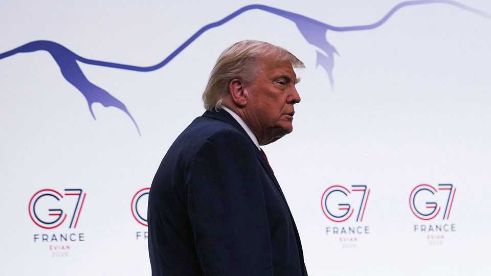
■
草案协议还呼吁结束黎巴嫩的冲突，但关于“结束冲突”具体指什么存在一些争议。美国驻耶路撒冷大使迈克·哈克布什（Mike Huckabee）表示，协议并未涉及真主党（Hizbullah），该组织仍持续向以色列发射导弹。以色列和美国官员则暗示，协议不包含以色列从南部黎巴嫩撤军的内容，因为该地区一直是与伊朗代理人武装的交战地带。关于以色列与黎巴嫩的停火协议谈判取得进展，可能允许此前逃离该地区的居民返回家园。南非总统祖马（Cyril Ramaphosa）警告不要将移民视为替罪羊，鉴于近期针对来自其他非洲国家劳工的暴力事件激增，已迫使许多移民被遣返。工会也敦促成员不要参与反移民示威。■
G7在最新会议中发表声明，明确支持乌克兰的领土完整，并承诺对俄罗斯实施更多制裁。美国支持该声明。特朗普参加了在法国湖畔伊维昂莱班举行的峰会，称其与泽连斯基的会面“非常积极”。“俄罗斯应该达成协议，”美国总统表示，“我会尽我所能促成此事。”峰会前，俄罗斯对基辅佩彻尔斯基拉瓦拉修道院发动袭击，该修道院是联合国教科文组织世界遗产，始建于1051年，是东欧正教会最重要的中心之一。单次俄罗斯袭击造成乌克兰11人死亡。乌克兰使用无人机袭击了俄罗斯最大石油炼油厂，引发火灾。■
英国皇家海军在英吉利海峡扣押了一艘来自俄罗斯影子舰队的船只。此次行动未引发任何冲突，但有报道质疑其时间点，因其紧随英国围绕国防开支的政坛争议，导致国防部长及武装部队部长辞职。两人均批评基尔·斯塔默爵士对国防投资的承诺。扣押行动后，一艘俄罗斯护卫舰向英国游艇发出警告射击以避免碰撞。英国上诉法院裁定支持政府禁止“巴勒斯坦行动”组织的禁令，推翻下级法院此前撤销该禁令的裁决。尽管法院注意到该组织多数支持者和平，但认为“忽视巴勒斯坦行动公开煽动非法暴力、构成恐怖主义的事实是根本性错误”。■
四名成员近日因袭击一家以色列国防公司位于英国的设施，并用大锤击碎一名警察脊椎而被监禁。瑞士选民否决了将该国人口上限设定为1000万的提案。当前人口略超900万，但增长速度超过瑞士邻国。该提案若通过，将迫使瑞士政府在人口突破950万后开始限制人口增长，这将违反瑞士与欧盟之间的人口自由流动协议。匈牙利议会通过了修改宪法的法案，限制总理任期累计不得超过八年。该措施旨在阻止维克托·欧尔班（Viktor Orban）在最近的选举中被击败后重新掌权。该选举的获胜者蒂萨党（Tisza party）在议会中拥有三分之二的绝对多数席位。
未来拥有类似超级多数席位的政府可能废除任期限制。巴西前总统雅伊尔·博尔索纳罗（Jair Bolsonaro）的次子爱德华多·博尔索纳罗（Eduardo Bolsonaro）被巴西最高法院裁定试图干预其父的审判。雅伊尔·博尔索纳罗因策划政变正在服刑。爱德华多·博尔索纳罗被认定曾要求特朗普政府对法院法官施加压力，目前他居住在美国，并指责巴西法院迫害其家族。根据特朗普及其战争部长彼得·赫格赛特（Pete Hegseth）的说法，委内瑞拉犯罪集团“阿瓜拉火车帮”（Tren de Aragua）的领导人尼诺·古铁雷斯（Niño Guerrero）在一次美国打击行动中身亡。委内瑞拉政府称已向美方提供情报并协助在玻利瓦尔州的袭击行动。美国将“阿瓜拉火车帮”视为恐怖组织。■
印度政府因医学专业学生通过Telegram泄露考试试卷，宣布临时禁用该应用。全国性考试结果被作废，220万学生需重考。特朗普表示将在与印度总理莫迪会面后访印，该会面于法国G7峰会期间举行。两国领导人新近升温的关系，标志着过去一年双方摩擦（尤其围绕自由贸易协定）的转变。缅甸前军方官员敏昂莱——2021年领导政变推翻政府、现声称总统职位——赴华进行国事访问并会见习近平。中国在缅甸投资密集，掌控该国多个一带一路基础设施项目。■
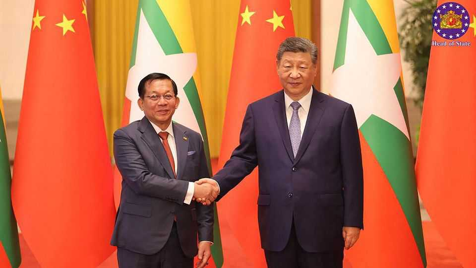
唐纳德·特朗普在白宫草坪上举办了一场终极格斗冠军赛（UFC）活动，以此庆祝自己80岁生日，这是首次在白宫建筑内举行的商业体育赛事。约4,000名受邀观众到场观赛，另有85,000名粉丝在附近区域观看。美国联邦调查局（FBI）表示，已逮捕数名计划使用无人机袭击赛事的人员。■
§002 Business：本周商业原题：Business：本周商业 · 板块：The world this week · 栏目：本周
美联储维持利率不变，这是凯文·沃什担任主席后的首次决策。随着通胀压力上升，美联储放弃了此前会议中维持的逐步宽松货币政策路径。政策委员会无人支持降息。这标志着沃什时代的开启，央行声明简短有力，重申将确保物价稳定。在央行密集行动的一周中，英国央行也未调整利率。其九名利率决策者中有两人支持加息。在会议前，英国最新消费者价格指数显示，5月的年通胀率维持在2.8%不变。
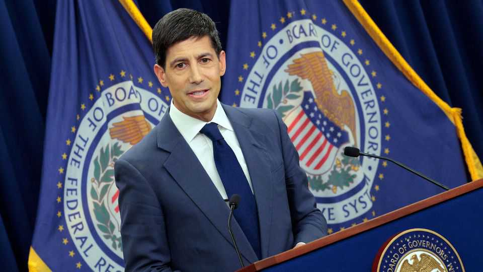
日本银行将关键利率从0.75%上调至1%，达到自1995年以来的最高水平。在经历二十年通缩后，日本消费者物价在疫情后稳步回升。今年年度通胀率一直低于2%，但因伊朗冲突导致的能源价格上涨正在推高成本。批发通胀率在四月和五月分别飙升至6.3%。特朗普政府对Anthropic最先进的人工智能实施出口管制，要求该公司阻止非美国用户访问其最新发布的Fable和Mythos模型。政府发布该禁令似乎是在亚马逊CEO安迪·雅西向官员报告其研究人员在Fable中发现的“漏洞”后作出的，该漏洞可绕过安全协议。由于无法区分公民与非公民用户，Anthropic暂停了Fable在全球范围的访问权限，包括内部访问。■
政府的法令凸显了美国在人工智能前沿技术领域的主导地位，加剧了美国盟友对其在该领域落后程度的担忧。欧洲议会批准了去年原则上达成的与美国的贸易协议。欧洲立法者因与特朗普政府就格陵兰岛问题产生的争端，以及最高法院推翻特朗普关税政策引发的不确定性，推迟了此前对协议的投票。特朗普曾威胁，除非议会于7月4日前批准协议，否则将提高对欧洲汽车进口的关税。娱乐与新闻公司福克斯公司（Fox Corporation）通过以220亿美元收购提供流媒体硬件、软件及运营流媒体频道的Roku公司，推进其在流媒体领域的野心。2020年福克斯公司曾收购免费广告支持型流媒体服务Tubi。■
去年，该公司推出了自己的应用Fox One。在首次公开募股后的几天内，SpaceX的股价飙升了50%，使其市值达到近2.7万亿美元，挑战亚马逊成为全球第五大上市公司的位置（仅次于英伟达、谷歌、苹果和微软）。承销商购买额外股份后，该公司在首日交易中筹集了857亿美元，打破了全球最大IPO的纪录。根据彭博社报道，埃隆·马斯克的个人财富已飙升至13000亿美元。即使扣除1万亿美元，他仍然是全球最富有的人。在成功之后，太空探索技术公司同意以600亿美元收购Cursor，该公司利用AI自动化计算机编程。此次收购将使xAI（马斯克的AI业务，现由太空探索技术公司拥有）在企业系统AI编程这一 lucrative 领域扩大影响力。■
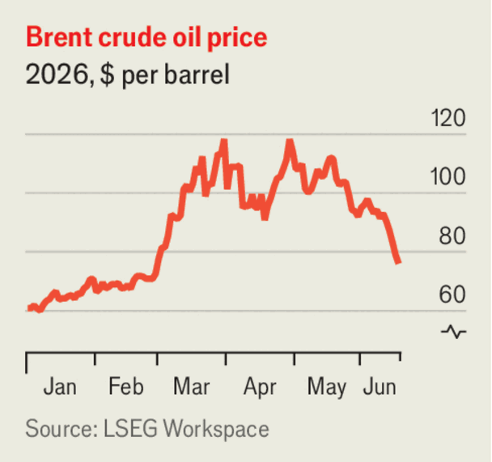
国际能源署表示，如果美伊和平协议得以落实，海湾地区的油气行业将逐步复苏。该机构指出，航运通道仍需清除水雷，供应链的正常化将需要时间。国际能源署预计，市场要到明年才能完全恢复，届时供应量将大幅增加，油价将显著下降，各国得以补充耗尽的石油储备。多年来，由于消费者更加注重健康，必胜客的销售一直面临挑战，如今其母公司黄蜂品牌（Yum Brands!）决定通过出售特许经营权来调整战略。通过两笔交易，必胜客在中国以外的15,000家餐厅被出售给一家私募公司，而中国境内的门店则被其中国控股公司收购。■
它计划在中国扩展必胜客业务，目前必胜客已是该国最大的休闲餐饮品牌。运营韩国咖啡连锁品牌的星巴克韩国表示，将为所有员工提供历史意识培训。该公司因“坦克日”营销噱头被指轻视1980年民主运动，当时数百人丧生而引发舆论反噬。运动服饰品牌Lululemon也陷入争议，其在中国长城举办促销活动时使用了日本鼓，忽视了当地敏感性。在中日关系再度紧张之际，该品牌道歉称“存在专业认知局限”。■
§003 人工智能赋予美国前所未有的强大实力 领导力原题：AI has granted America vast new power · 板块：Leaders · 栏目：领导人
美国的新闻充斥着如何通过与伊朗达成屈辱性和平协议，象征美国实力的衰退。这一结论显然大错特错。6月12日，特朗普政府下令Anthropic公司封锁外国人使用其最新、最强大的前沿AI模型Fable和Mythos。瞬间，所有人都意识到美国政府可以决定谁能够使用全球最重要的技术。没有比这更强大的力量了。该政府此举是为了应对所谓Fable模型的“越狱”事件，即一种绕过防御机制的提示，可被用于黑客攻击计算机或制造生物武器。■
美国政府很可能希望Anthropic关闭所有模型，而针对外国用户则是实现这一目标的手段。果然，Anthropic采取了这一行动，同时声称对其模型的担忧被夸大了。禁令的法律依据尚不明确，该禁令持续时间也难以预料。但值得关注的是，这表明全球获取最佳AI技术可能取决于白宫的决策。今年三月，美国政府已表明其愿意踩踏前沿AI企业，当时将其列为“供应链风险”。如今又显示出愿意对用户施加限制。美国必须决定如何运用这一全新的巨大权力，而世界其他国家则必须决定如何应对这一局面。
尽管美国正为一个在防务到贸易等各方面都不可靠的美国做规划，现在却不得不面对一种新的被全球最大经济体所束缚的处境。美国并非首次尝试限制前沿技术的获取。二战后曾停止协助英国的核武器计划。当现代密码学在20世纪70年代兴起时，美国曾一度禁止出口，随后接受了在拥有安全盟友与利用机密提升自身进攻能力之间的权衡。山姆大叔至今仍拒绝与亲密盟友分享其最先进的军事装备，例如F-22战斗机被美国独占，而盟友只能获得F-35战斗机。然而控制技术获取的关键在于技术本身的性质以及竞争对手独立开发该技术的能力。■
20世纪50年代，美国与英国恢复核合作，因为英国已自主掌握相关技术；与其他国家则采用1968年签署的《核不扩散条约》。密码学技术难以管控，最终走向公开化。如今，多国具备网络攻击能力。前沿人工智能则呼应了上述所有案例。若最先进模型能瘫痪关键基础设施或协助用户制造大流行病病原体，那么它们对公众而言将如同核武器般危险。但正如密码算法难以确保永不被复制，先进专有技术亦难保不被仿制。开源模型因任何人都可下载，或将加速发展与扩散。■
在网络安全领域，微小的失衡可能带来巨大的优势：若攻击方使用的是版本5，而防御方仍停留在版本4，且更先进的模型仅发现一个额外漏洞，弱势方就会被攻破。随着人工智能嵌入军事硬件，战场上的类似逻辑也可能适用。然而美国在AI领域拥有巨大的经济利益，既希望引领发展，又希望向外国出口技术。许多Anthropic员工并非美国人，因此受到禁令影响；若冻结美国顶尖实验室的AI研究，将适得其反。该公司还指出，其80%的消费者使用量位于海外。过去十年间，美国科技迅猛发展，欧洲向美国支付的知识产权产品费用已增长五倍。美国不应给世界其他国家与中国的合作提供理由。■
这可能导致一种访问等级制度。最先进能力将由美国严密掌控，以在网络安全和军事实力上占据优势。次一级的替代方案可能提供给盟友——相当于F-35战斗机的水平。而经过充分限制的版本则可能以最佳安全措施向全球出售。这种未来对美国盟友而言将充满不安，因为它们远无法与Anthropic等公司抗衡。它们已对特朗普在贸易、联盟、美元体系等方面的谈判手段高度脆弱。人工智能或将成为其中最关键的一枚棋子。当然，部分依赖关系是双向的：美国需要荷兰的光刻机和台湾的晶圆厂。外国企业始终可以选择避开Anthropic或OpenAI，转而采用性能足够、开源的替代方案。■
运行模型需要计算能力，而美国在这方面大约是欧洲的15倍，再加上持续投入的差距。若SpaceX（6月12日上市后股价飙升）能实现其在太空建设数据中心的愿景，这种差距恐怕难以弥合。“欧洲2031”，一篇悲观的散文描绘了人工智能未来，设想欧洲在网络安全、国防及经济多个领域日益依赖美国模型与计算能力，最终沦为附属地位。许多国家将得出结论：比以往任何时候都更需要美国。它们仍可强化谈判筹码。计算能力如此匮乏，以至于在几乎任何地方建设数据中心都合算，但各国却对其中利害毫无认知。截至2025年6月的七个月内，英国新增电网连接需求从41吉瓦激增至125吉瓦，超过峰值电力需求两倍以上。■
OpenAI于四月暂停了在该地的数据中心项目，理由是监管限制和高昂的能源成本。在整个欧洲，更多能源供应、更简便的规划流程以及对模型开发者的更宽松规则将有助于发展。在东亚，台湾、日本和韩国必须加强协作而非重复投入。各方都应避免政府引导投资的虚假承诺。目标不应是保护主义，而是确保人工智能生态系统不仅在美国能够蓬勃发展。正如在贸易和国防领域一样，应对山姆大叔（Uncle Sam）交易性转向的正确方式不是抱怨联盟，而是增强自身实力。■ 仅限订阅者：欲了解我们如何设计每周封面，请订阅每周《封面故事》电子报。
§004 英国尚未准备好重新加入欧盟原题：Is not yet ready to rejoin the EU · 板块：Leaders · 栏目：领导人
）后十年六任首相，英国正如德恩·艾切森所言，失去了整个大陆却尚未找到自身定位。当年英国人以52%对48%的票数选择脱欧，如今国家更加分裂、影响力减弱、经济状况也比原本预期更差。所谓“夺回控制权”的承诺不过是个残酷的玩笑。英国在国际局势的冲击下摇摆不定。脱欧派曾承诺移民数量会下降，但鲍里斯·约翰逊执政期间移民数量却大幅上升。■
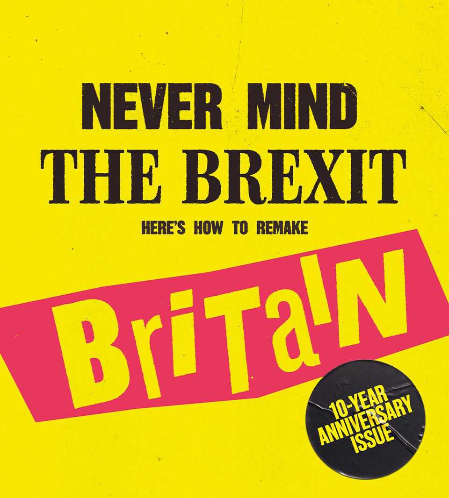
未来十年前景将更加光明，但英国人首先必须接受脱欧带来的重大教训：试图将国家所有问题归咎于单一原因是一种魔法思维，只会让事态变得更糟。他们不应再次犯下同样的错误，误以为重新加入欧盟就能解决所有问题。真正的国家复兴意味着直面英国未能实现自身潜力的多重原因。政策制定陷入混乱，政府效率低下，私营部门则被繁重的税收和监管压得喘不过气。英国曾在战后福利国家的创立和玛格丽特·撒切尔领导下的复兴中展现过领导力，如今必须再次做到这一点。正如本报在公投时曾警告的那样，脱欧是一次严重错误。■
英国未能善用脱欧带来的灵活性。泰晤士河畔新加坡式的自由市场梦想已烟消云散。英国政府没有放松监管，反而变得更加侵入性，更倾向于干预，结果导致经济崩溃。GDP损失至少达2.5%，可能远超此数。脱欧带来的分心同样影响深远。官员和企业耗费无数小时互相指责，先是围绕如何“完成脱欧”，随后又围绕如何弥补损失。在国际舞台上，英国的地位被削弱。更糟的是，这场注定失败的“银弹”追寻仍在继续。民粹右翼仍痴迷于移民问题，民粹左翼则聚焦于遏制资本主义的弊端。如今，中间派正利用57%的英国人认为脱欧是错误的、仅30%仍认为脱欧正确的证据，主张英国应努力重新加入欧盟。■
这将意味着又一个十年在欧洲争执中虚度。英国需要将目光投向未来。世界已与十年前大不相同。在战争与瘟疫的冲击下，地缘政治强势回归。人工智能似乎正准备颠覆几乎所有领域，从工作到战争。然而政府政策仍被英国“失落十年”期间滋生的顽疾所困扰。防务便是典型案例。北约盟友认为俄罗斯可能在2030年前发动攻击。美国将目光转向亚洲，对欧洲心存不满，正日益呈现出半脱离的姿态。英国具备领导欧洲防务建设的本能与经验，正如其在帮助乌克兰过程中发挥的关键作用。 Ipsos民调显示，仅8%的英国人反对与欧洲国家开展防务合作，60%的人支持。 ■
英国首相基尔·斯塔默（Sir Keir Starmer）言辞得体，却始终未能兑现承诺的资源。6月11日，国防大臣约翰·希利（John Healey）因政府再度违背承诺增加国防开支而辞职。英国显得软弱——这使其成为俄罗斯的目标。这种摇摆态度削弱了英国对英吉利海峡对岸伙伴国家的主要吸引力。同时，英国也在浪费其在人工智能领域的优势。英国永远无法匹敌美国的主导地位——这同样具有安全层面的含义。但英国在基础研究、创新初创企业、科技人才和创意政策方面具有优势。这些优势或许能提振萎靡不振的经济。可惜，企业投资人工智能基础设施和机构的金额微乎其微。■
一个原因是净零政策最终限制了能源的生产与消费，抑制数据中心建设。另一个原因是针对美国科技企业的敌意，包括能够与执法部门和医疗行业合作的帕兰蒂尔公司。没有人说过解决这些问题会容易。不幸的是，在新冠疫情和战争的背景下，情况变得更加复杂。债务占GDP比重达到94%，这是自1960年代以来的最高水平。预算赤字占GDP比重为4.3%。英国政府债务是G7国家中最昂贵的。与欧盟——英国的主要贸易伙伴——关系的改善可能有所帮助。政府寻求消除贸易壁垒的举措是正确的，旨在协调规则，有时甚至愿意支付代价以参与受欢迎的欧盟计划，如伊拉斯谟学生交流计划。■
这涉及与欧盟的持续谈判，正如瑞士多年来所做的那样。但这种关系不应演变为吞噬一切的分心。英国尚未准备好重新加入欧盟。极右翼脱欧派领袖尼格尔·法拉奇（Nigel Farage）可能在几年内成为首相。欧盟将对一个尚未形成明确多数支持入盟的国家保持谨慎。英国必须像在金融或农业领域那样，在俱乐部外管理事务，这是少数成功的脱欧案例。英国需要的促增长政策并不神秘。更多英国人，尤其是年轻人，需要离开福利体系进入职场；劳动市场过度管制；能源价格必须降低；政府决策受过多否决权制约，特别是在规划领域；权力必须从威斯敏斯特下放；等等。但每项政策都意味着某地某人要做出让步。■
脱欧让选民产生了可以逃避艰难抉择的幻觉。有人会替他们承受痛苦，无论是外国人还是超级富豪，而英国人则独享所有好处。这种世界从未存在过，尽管经历了十年的糟糕局面，英国选民仍不愿面对现实。看来他们可能需要一次撒切尔式的震撼才能清醒过来。■ 仅限订阅者：想了解我们如何设计每周封面，请订阅每周《封面故事》电子报。
§005 唐纳德·特朗普押注伊朗更想要金钱而非权力 《领导者》栏目原题：Donald Trump gambles that Iran wants money more than power · 板块：Leaders · 栏目：领导人
在用炸弹未能击败伊朗后，唐纳德·特朗普能否通过贿赂挽回局面？经过数周的讨价还价，他与伊朗对方面临结束战争的协议，双方签署了一份简短的和平备忘录。该备忘录承诺向伊朗提供巨额资金，前提是伊朗能说服特朗普其已放弃任何发展核武器的计划。这是一场巨大且极不可能成功的赌注，也让中东各国陷入艰难抉择。这份备忘录摒弃了特朗普多项战争目标，不会发生政权更迭，不会改善伊朗受压迫民众的处境，也不会限制伊朗的弹道导弹或其对代理人组织的支持。■
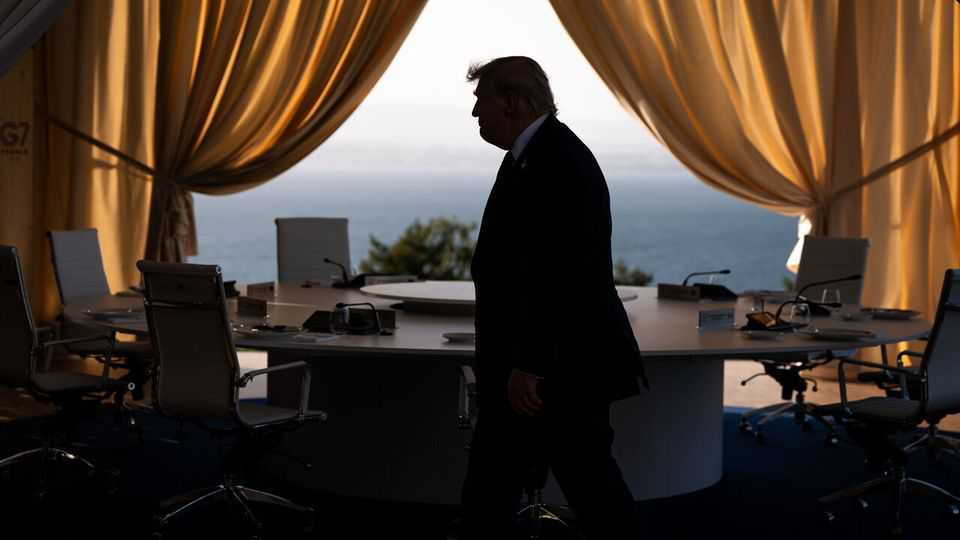
协议的核心内容聚焦于两点。其一是重新开放霍尔木兹海峡，特朗普发动战争的荒谬与他退缩的耻辱在此显露无遗。战前船只可自由通行，而在本协议规定的60天后，它们可能不得不支付费用。另一重点是伊朗的核计划。伊朗方面几乎未作出任何让步，其“不发展核武器”的承诺早已过时。伊朗将稀释其浓缩铀库存，并讨论其核计划的其余部分，但相关问题复杂，伊朗擅长拖延。此外还有“赎金”——伊朗可立即出口石油及衍生品。根据谈判进展，美国将解冻数十亿美元资产，解除制裁，并协助建立至少3000亿美元的重建与发展基金。特朗普已厌倦战争。■
若按计划在30天内美军撤离，其动用武力的能力将受到限制。因此，政权将获得前所未有的机会，用核武器换取现金与投资。不同于以往总统，特朗普并不在意民主。将霍尔木兹海峡武器化后，伊朗或许会发现核武器的价值降低。该政权在国内声望低迷，或许会将资金用于国内。然而，有诸多理由表明这场豪赌很可能以失败告终。伊朗强硬派领导人无理由信任美国，他们预计以色列会破坏协议。他们渴望的地区影响力源自作为"大恶棍"的对手身份。核计划提供声望，或许还能带来保护。核查人员将难以阻止其作弊。伊朗领导人将被诱惑去同时拥有浓缩铀与和平利用核能。以色列曾主张发动这场战争，但结果却令人失望。■
它曾与美国并肩作战，但特朗普却将其排除在谈判之外，削弱了其在黎巴嫩针对真主党的斗争。这可能让总理本雅明·内塔尼亚胡在10月的选举中失去连任。这场战争是战略失败，因为伊朗仍是威胁。内塔尼亚胡试探美国愿意走多远，但美国并未走足够远，以色列无法取得胜利。任何继任者都需制定新的安全战略。海湾国家需要重拾作为暴力邻域中繁荣避风港的声誉。尽管存在一些乐观预期，但事实是伊朗无人机和导弹仍将构成威胁。绕过霍尔木兹海峡的输油管道将有所帮助。但海湾国家也需彻底改革安全体系。无人能确定美国未来是否愿意积极参战。■
一些州将寻求方法遏制伊朗，阿联酋可能寻求与以色列更紧密的联系。其他州可能试图安抚伊朗，还有些州则可能在两者之间寻求平衡。特朗普本不该发动这场战争。如今他试图以金钱为筹码解决问题，认为人们会为钱做任何事。然而外交的第一条规则是：不要假设对手与你想法一致。■ 订阅者可注册《经济学人》观点电子报，汇集本刊社论、专栏、读者来信及特邀评论精华。
§006 不要限制中国生物科技领袖 错误的处方原题：Don’t restrict Chinese biotech · 板块：Leaders · 栏目：领导人
一个因新药而重获新生的患者不太可能在意这种药物是本土研发还是诞生于地球另一端。然而，美国政策制定者却开始将中国生物科技产业视为科技战的下一个战场。国会正在审议一项修正案，拟将《关键创新投资法案》（COINS Act）中限制美国对敏感技术领域海外投资的条款，扩展至中国生物科技领域的许可。一些人希望美国食品药品监督管理局（FDA）忽视来自中国的临床试验数据。美国的担忧源于创新发生地的显著变化。 ■
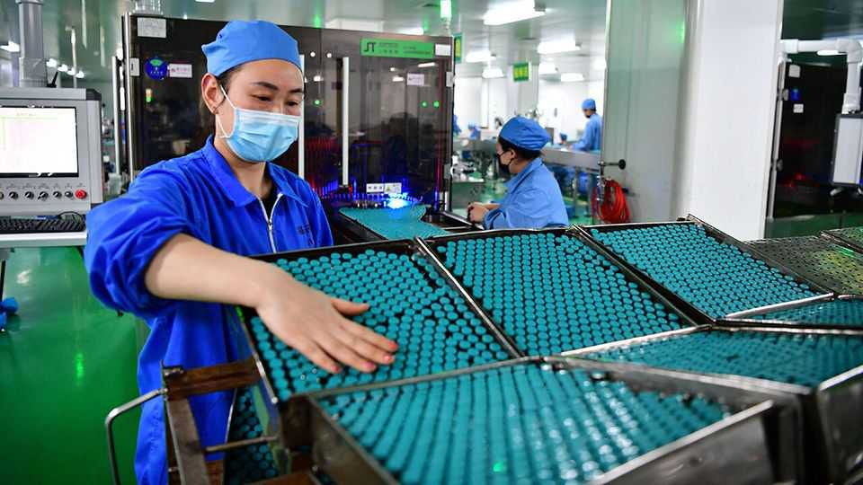
中国企业在去年进行了近三分之一的全球临床试验，这一比例十年前仅为6%。中国现已成为仅次于美国的全球第二大新药来源国。据预测，到2025年，价值5000万美元或以上的许可交易中，近半数将与中企达成，而2020年时这一数字为零。在某些领域，如前景广阔的抗体-药物偶联物（ADC）类抗癌治疗，中企几乎包揽了所有许可交易。将中国医疗创新视为非利好消息将是错误的。在人工智能和半导体领域，美国担忧知识产权向中国外泄，而在生物科技领域，信息流动方向则相反。■
尽管对中国在药品实物供应链中占据主导地位的担忧可以理解——该国占基本药物活性药物成分的70%以上——制造韧性与科学合作是不同的议题。美国不应因获取新知识而受损。鉴于药品研发本身存在生产率低下问题，忽视中国的进展尤其愚蠢。如今将一种新药推向市场成本约为28亿美元，耗时往往超过十年。政策制定者常抱怨药品价格持续上涨。然而，诸如忽视中国临床试验数据的提议将延长研发周期、推高成本并降低药物发现的效率。国会真的希望突破性疗法先在欧洲或亚洲上市，再抵达美国吗？■
一些政界人士担心，如果药企将研究预算用于授权中国分子，美国生物科技将面临资本短缺。但投资并非一块可以随意分配的蛋糕。正如人工智能热潮所显示的，当机遇增长，资本自然会随之涌入。关键在于确保美国生物科技不受糟糕政策的阻碍。幸运的是，美国企业仍是全球药物发现领域的领头羊。他们拥有深厚的专长，能够将有前景的分子推进晚期临床试验、监管审查和商业化上市。中国生物科技高管私下承认美国食品药品监督管理局（FDA）是全球监管领域的领导者。然而美国近期的决策正在削弱其优势。FDA高层官员频繁更替，包括其负责人马蒂·马克里（Marty Makary）的辞职。■
决策过程已被政治化：企业可通过降低价格并投资本土制造业获得“优先券”，从而加快审批流程。作为全球最大生物医药研究资助机构的美国国立卫生研究院（National Institutes of Health）资金被大幅削减，部分研究项目因意识形态原因被取消。与此同时，移民政策正使美国变得对依赖的科学家群体（包括大量来自中国的优秀研究人员）不那么有吸引力。美国应解决这些问题，而非排斥中国创新。对患者最有利的全球格局是中美两国共同研发廉价且有效的药物。疾病无国界，其治愈手段也应跨越国界。■
《经济学人》的订阅者可注册订阅我们的Opinion电子简报，该简报汇集我们最优秀的社论、专栏、特稿及读者来信。■
§007 印度的新经济仍面临老问题原题：India’s new economy still faces an old problem · 板块：Leaders · 栏目：领导人
作者：Raj
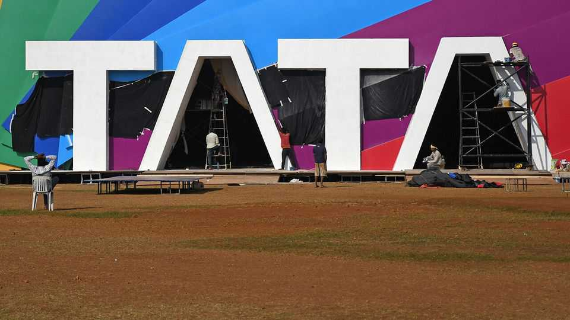
印度的新经济仍面临老问题
破纪录的首次公开募股即将登陆股市。散户投资者预计将蜂拥而入。这家公司的前景取决于一位颇具影响力的商人，他被追随者寄予厚望，却遭反对者痛恨。这不是美国和SpaceX，而是印度和Jio，一家将数亿印度人接入互联网的公司，即将上市。这是一则新印度经济的激动人心的故事，讲述了一位希望致富的科技企业家，以及普通印度人通过股市分享其成功的故事。
■
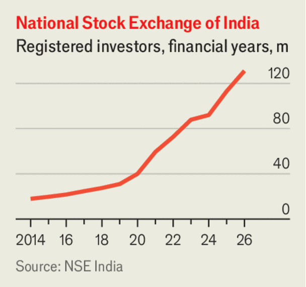
然而，在诸多值得庆祝的原因之外，还有一个令人担忧的大问题：印度的企业治理状况令人失望。印度的家族企业正面临诸多问题。正如我们所报道的，塔塔集团（Tata Group）长期以来被视为企业诚信的典范，如今却深陷董事会纷争。监管机构甚至可能迫使它上市。高塔姆·阿达尼（Gautam Adani），或许印度关系最广的基建巨头，长期面临对其商业成就的质疑指控，这些指控为其成功蒙上了阴影。信实工业（Reliance），作为Jio及其他诸多业务的母公司，正面临接班人问题。其老板穆克什·安巴尼（Mukesh Ambani）的三个子女已进入董事会并担任重要运营职务。然而，这家帝国似乎仍依赖于安巴尼先生。家族企业主导着印度经济；目前最突出的三大集团可能还会有古德雷吉（Godrejs）、马恒达（Mahindras）、比尔拉（Birlas）等众多家族企业加入。■
发起人掌控上市公司仍持有国家证券交易所约半数股权；"自由浮动股"占比在全球范围内最低。监管机构已调整规则，允许信实集团（Jio）仅公开2.5%股份即可上市。这或许有助于推动大型企业上市，但当仅有极小部分股份可供交易时，价格发现机制、市场约束力和股东权利等问题便显得尤为棘手。这不仅影响孟买南部的富裕社区，自2020年至2026年间，印度零售投资者数量已从约4000万增至1.3亿。首次入市的投资者如今被要求将积蓄托付给治理结构难以影响的公司。■
当发起人掌控董事会时，关联交易、不透明的集团架构和接班人决定往往围绕家族利益而非公司利益展开。难怪许多印度人仍更愿意将信任寄托于黄金。公司治理对印度人同样重要，那些从未想过开设证券账户的人更清楚这一点。治理不善会抬高资本成本，使国家发展更加困难。印度渴望吸引更多外资、培育更深层次的国内市场和更广泛的股权拥有文化，而家族式领导和顺从的董事会却让这些目标更难实现。政府理直气壮地宣称印度是“全球增长最快的大型经济体”，但该国仍难以吸引外资。能带来持久增长的投资要求印度成为所有企业都能轻松经营的国度，而不仅仅是少数有关系家族的特权之地。■
这意味着需要建立真正拥有实权的独立董事会；对关联交易实施更严格的审查；明确披露集团债务、担保及交叉持股情况；制定责任明确的接班计划，而非仅仅指定继承人；并强化对少数股东权益的保护。机构投资者应更像管理者而非被动的市场乘客。无论是印度还是海外的投资者，都不应因家族纷争而担忧，从而错失印度增长故事的机遇。■ Subscribers to The Economist can sign up to our Opinion newsletter, which brings together the best of our leaders, columns, guest essays and reader correspondence.
§008 Anthropic正与山姆大叔（Uncle Sam）争夺超级AI的控制权原题：Anthropic is battling Uncle Sam for control of superpowered AI · 板块：Briefing · 栏目：简报
宗教权威的悖论在于，对信徒而言，没有什么比宗教领袖更重要，但精神领袖通常实际权力有限。事实上，正是拒绝沾染日常生活的困境与妥协，才赋予圣人道德权威。这种现象反过来让世俗领袖在短期内轻易压制他们（他们没有武器），却在长期难以对付（迫害反而提升他们的道德地位）。
这种动态，尽管对中世纪的主教和君主而言再熟悉不过，却可能让Anthropic公司首席执行官达里奥·阿莫代伊（Dario Amodei）和美国独裁总统唐纳德·特朗普感到困惑。近几日，特朗普团队第二次在四个月内擅自干预Anthropic公司的运营，要求其阻止任何非美国人——包括本公司的员工——接触其最新模型Fable 5和Mythos 5，理由是国家安全。而特朗普政府视人工智能为增强美国全球地位的利器，Anthropic则认为这项技术过于强大，必须通过严格管控才能交由冲动的普通民众使用。■
结果是一场教廷与国家之间的史诗级对决——这场冲突不仅可能干扰Anthropic的重磅IPO，还将决定谁掌握全球最强大的技术。Anthropic位于旧金山的总部充满修道院般的氛围。员工们肩负着创造强大AI的使命，内部人士将这项任务比作创世之谜。他们讨论的焦点多集中在伦理与价值观上。当教皇利奥十四世上月发布关于AI的通谕（“Magnifica humanitas”）时，Anthropic联合创始人正站在他身旁。与此同时，Amodei则频繁撰写自己的通谕，阐述如何安全、负责任地构建AI。这些通谕与教皇的类似，既强调风险，也谈及潜在收益。他最新发布的（“AI指数政策”）于6月10日发布。
它敦促美国政府迅速采取行动，建立“严肃且具有约束力的AI监管”。这种对AI安全的重视并未阻碍Anthropic的业务——恰恰相反。这家公司在2021年才成立，当时阿莫代伊与其妹妹达妮埃拉及另外六人刚离开当时领先的AI实验室OpenAI，认为其对安全问题不够重视。在成立后的两年多时间里，Anthropic始终处于OpenAI的阴影之下。尽管在OpenAI推出ChatGPT不久后，Anthropic也推出了自己的聊天机器人Claude，但吸引最多关注的仍是OpenAI的产品。Anthropic起步缓慢迫使公司重新聚焦，而非继续押注聊天机器人市场——这一市场拥有大量非付费用户，需依赖订阅或广告才能盈利。因此，它选择了一个更狭窄的赌注：企业客户。■
与OpenAI涉足众多消费产品不同，Anthropic专注于开发商业工具，例如代码助手，这类工具能带来更持久的收入，并且已足够成熟，能够承担自我优化的大部分工作。这是一笔成功的投资。软件开发者纷纷涌入Anthropic一年前推出的代码助手Claude Code，因为它能完成人类程序员需要数小时甚至数天才能完成的任务，且其工作成果易于验证。企业客户也青睐Anthropic对安全机制的重视，这契合他们对失控AI的担忧。其专注于代码领域，使模型在衡量软件工程能力的基准测试中较OpenAI和谷歌等竞争对手取得先机。代码能力需要分步骤推理和工具使用，这使其在创建与人类协作的AI代理方面占据优势。■
今年，OpenAI将重点转向编码领域，其最新模型在某些任务上的表现被认为与Anthropic相当。它同样有望从相同的自主性带来的顺风中获益。但Anthropic四成收入来自企业客户，而OpenAI的企业客户仅贡献约40%的收入。这种差异使Anthropic具备更强的盈利能力。本月，Anthropic和OpenAI均提交了IPO申请，两家公司估值可能均在1万亿美元左右。不可避免地，它们的相对表现正受到密切关注。目前两家公司尚未公开IPO文件细节，财务数据尚不清晰。但Anthropic在多数对比中占优。■
由于这两家公司都年轻且发展迅速，它们通过将最近一个月的数字乘以12来估算年度理论营业额（annual recurring revenue，ARR）。科技研究公司Futurum指出，Anthropic通过云计算合作伙伴核算销售额的方式与其他公司不同，这可能使其数据显得偏高。不过，这一趋势不容忽视。Anthropic的ARR已迅速超越OpenAI（见图表）。Anthropic的估值也已超过OpenAI，5月时达到9650亿美元，而OpenAI在3月时为8520亿美元。Anthropic已向投资者表示，其将在第二季度实现运营利润，据Futurum称，这将使Anthropic成为首家达成此目标的AI实验室。还有其他迹象显示其竞争力增强。■
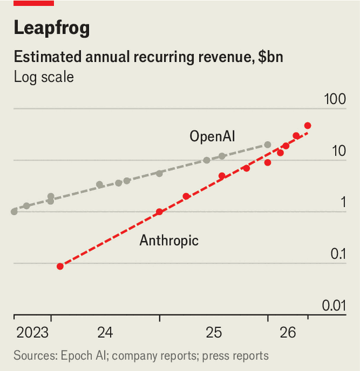
尽管市场对AI泡沫议论纷纷，但Anthropic（安德里亚斯）最新估值约20倍ARR（年度经常性收入）仍需结合其过去五个月内持续收入增长五倍的背景来判断。PitchBook（数据收集机构）的哈里森·罗尔夫斯表示：“这并不一定便宜，但以这样的增长速度，估值并不疯狂。”OpenAI的估值更为高昂，SpaceX近期IPO将其估值推高至营收的90倍以上。但Anthropic的领先优势并非不可逾越。据称OpenAI正考虑发起价格战，大幅降低每令牌（AI处理的数据块）的收费，以回应企业担忧其AI支出过高的问题。尽管令牌价格已开始下降，但Anthropic最新模型每查询使用的令牌数量更多。凭借定价能力，其无需提供同等幅度的折扣，反而提高了每请求的收费。■
这或许有助于推动其营收增长。更广泛地说，AI模型面临被商品化的风险，因为竞争对手往往能迅速跟上。这要求模型开发者拓展至其他领域，尤其是借助代理技术。安德里普（Anthropic）成为软件即服务（SaaS）行业的主要担忧来源，人们担心AI实验室将取代提供采购和人事管理等工具的SaaS公司。这不仅将使其与客户建立更紧密的关系，还能获取更多数据，用于提升其模型在这些任务中的表现。OpenAI同样瞄准这一目标，谷歌（Google）亦是如此，其企业软件产品已深度嵌入众多企业。但至少目前，安德里普（Anthropic）的业务重心使其占据优势。
阿莫代伊兄弟始终在宣扬人工智能的风险。他每隔两周就会向Anthropic的3000名员工进行长达一小时的演讲。这家公司的日常运营由阿莫代伊女士负责，她同样坚信人工智能安全的重要性。在公司内部，创造通用人工智能（AGI）或超人类AI的雄心也根深蒂固。其他公司的AI研究人员注意到，Anthropic的员工对AGI充满热情，尽管他们中许多人认为AGI的出现将使自己失业。或许正是最初对AI潜在负面影响的担忧，让特朗普政府感到不安。■
官员们指责Anthropic公司内部的“末日工业综合体”在乔·拜登政府时期（部分成员此后加入该公司）对AI技术实施了他们认为过度的监管。在特朗普任期内，政府对试图放缓AI发展的举措持消极态度，更关注如何保持对中国的技术优势。去年，当Anthropic的一些竞争对手，如OpenAI，公开支持特朗普的“加速主义”路线时，Amodei却成为呼吁州和联邦层面加强监管的最响亮声音之一。此举并未获得好评。美国政府AI顾问大卫·萨克斯指责Anthropic推行了一种基于恐慌的“复杂监管俘获策略”。其他官员则指出，在警告AI风险的同时却不断构建更强大的模型，这种做法颇具讽刺意味。■
无论如何，Anthropic公司强调AI风险的倾向似乎导致了其与特朗普政府首次公开冲突，时间发生在2月晚些时候。该公司与国防部就使用Claude技术用于大规模国内监控或自主武器系统展开公开争执。Anthropic表示现有法律不足以监管AI在大规模监控中的应用，且AI尚不足以可靠地用于完全自主的杀戮武器。五角大楼则暗示Amodei先生试图掌控国家安全事务。最终特朗普要求所有政府机构与Anthropic切断关系，其领导层被他斥为“左翼极端分子”。此次事件似乎加剧了政府内部对Anthropic日益成功的担忧，认为其可能本身构成威胁。■
萨克斯先生最近警告称，如果Anthropic（安德里亚）的“指数级”增长持续下去，它可能会获得“对当今最重要技术前所未有的控制权”。他将这一情况与19世纪约翰·D·洛克菲勒对石油行业的垄断进行了不光彩的类比。尤其值得注意的是，美国政府官员已意识到高性能人工智能对国家安全构成的巨大风险。这似乎正是Anthropic与监管机构最新争执的起因。此前，Anthropic一直在与政府合作，就其首款Mythos模型的发布进行协调，该模型在入侵等令人担忧的能力上表现尤为突出，甚至发现了许多政府系统的潜在漏洞。Anthropic允许经过政府审查的有限客户使用该模型。■
后来，该公司推出了名为Fable的Mythos版本，加入了特殊防护措施以防止滥用，并更广泛地分发。有报道称，Anthropic公司在向新客户开放Mythos访问权限时，延迟向政府通报。一位接近Anthropic的消息人士对此表示异议，称该公司与政府保持密切合作，能够就任何新合作伙伴提出国家安全方面的担忧，并在政府要求下迅速切断与一家全球电信公司的合作。（在众多针对Anthropic的隐晦指责中，特朗普政府曾私下暗示该客户与中国存在关联。尽管这可能属实，但并不能说明Anthropic暗中同情中国。很少有CEO像Amodei先生那样公开批评中国的威权主义，他强烈主张加强美国对人工智能芯片出口至中国的限制。）■
事态在亚马逊（Amazon）爆发高潮。这家作为Anthropic主要投资者的电商巨头向监管机构表示，其发现Fable存在安全漏洞，可借此“越狱”或绕过安全限制。萨克斯（Sacks）在X平台发文指控阿莫代伊（Amodei）拒绝“修复越狱漏洞”。一名接近Anthropic的消息人士称，公司并未拒绝修复。该企业坚称，其早在Fable发布前数周就将模型提供给政府进行漏洞排查。同时，它也质疑越狱漏洞的严重性。该公司认为，不存在完全无懈可击的AI模型安全控制措施。许多观察人士认为，Anthropic主要因个人恩怨遭到处罚。毕竟，今年2月政府曾指责阿莫代伊拥有“神权情结”，而阿莫代伊则回应称，Anthropic被追责是因为未能向特朗普提供“独裁式赞誉”。
但这场纷争背后，确实存在一个真正的监管难题。特朗普政府采取自由放任政策，对AI领域缺乏明确或精准的监管手段。R Street智库的亚当·蒂埃勒表示，Myth（注：Mythos可能为文章中特定术语，此处保留原文）事件引发了政府内部关于模型是否构成足够国家安全威胁的争论，是否需要在发布前进行审查。鹰派人士呼吁对新模型的发布拥有官方话语权。甚至有人提议设立专门监管机构。但特朗普政府最终于本月早些时候发布行政命令，建立一个自愿框架，允许AI实验室在发布新模型前与政府合作。该框架尚未启动。在缺乏监管措施的情况下，政府只能依赖粗放手段。■
在与五角大楼的争执中，美国政府最终将Anthropic公司列为“供应链风险”，此举阻碍了政府机构与其开展业务——这对美国领先的AI实验室而言可能是自食其果的举措。在围绕Mythos和Fable的持续争执中，据称政府要求Anthropic公司对每笔向外国实体的销售都申请特殊出口许可。由于Anthropic无法确定外国员工是否可能在美企使用其模型，公司最终不得不全面关闭这些服务——再次导致美国自身受损。前特朗普政府官员、美国创新基金会智库成员Dean Ball指出，缺乏明确规则的风险是，美国最终可能获得政府对AI的“主导权”，而非美国在AI领域的“主导地位”。■
紧张局势本就自然。像安德里普（Anthropic）这样的公司希望尽可能广泛地分发强大模型，这合情合理。这对企业有利，因为它满足了迫切的需求——犯罪分子已开始利用AI提升网络攻击效果。国家安全机构也希望掌控这种强大技术，既出于进攻性也出于防御性目的，这一点同样可以理解。“国家安全机构正进入掌控模式，”鲍尔先生（Mr Ball）表示。关键在于如何行使对这项技术的控制权。尽管阿莫代伊（Mr Amodei）有时会用警示性语言谈论AI风险，但他偏好的监管方式是一种狭隘的技术官僚形式。他呼吁建立类似联邦航空管理局（Federal Aviation Administration）的监管机构，对前沿AI模型进行标准化技术测试和审计。■
尽管阿莫代伊先生承认，随着模型能力不断提升，人工智能将成为“军事和经济权力的主要来源”。这为特朗普政府及其所有继任者提供了明确且强烈的动机，希望掌握自身可操控的工具，包括对Anthropic的影响力。正如巴尔先生所言，“任何公司都不应妄图撼动国家主权的根基，同时高高在上地置身于政治现实之外。”双方都希望这场争端能尽快平息，但目前双方都未从中获益。政府以任性举动试图彰显权威，却让全球使用Anthropic模型的人群感到不满，也暴露了当初轻视制定AI监管规则的短视。■
Anthropic公司不愿屈从于敌对政府的要求，反而自恃甚高，最终陷入困境，损害了用户利益。这场风波将影响Anthropic的首次公开募股（IPO）。暂停向数亿用户提供的商业模型，势必影响其利润。此外，投资者和用户都担心，由于Anthropic与监管机构的紧张关系，未来可能再次出现此类中断风险。最终，尽管AI公司可能带来诸多益处，但它们在法律尚未完善之际，正发展出危险的能力。阿莫代伊先生深知，法规的演变远比模型发展缓慢，因此他不得不充当非选举产生的安全裁决者。而当选政府则认为AI技术潜力巨大，不愿错失良机。
这场较量将持续，直到国会出台新规。■
§009 唐纳德·特朗普封锁Anthropic的举措任性而混乱 人工智能的帷幕原题：Donald Trump’s blocking of Anthropic is capricious and chaotic · 板块：Briefing · 栏目：简报
美国政府禁止外国人使用Anthropic最强大的模型Mythos 5和Fable 5，或许只是想通过最便捷的方式惩罚这家企业。但无论其意图如何，此举已凸显出管控强大技术访问权限的难度。这一禁令与美国上世纪70至90年代限制公开密钥加密技术的决策有相似之处。当时政府认为加密技术类似于武器，一名开发者因违反国际武器贸易条例被联邦调查局调查。
公民自由倡导者最终胜出，获得了使用、销售和出口大多数加密系统的权利。加密技术是一种强大的工具，但应用范围较为狭窄。人工智能则远比它强大且用途广泛。6月11日，参议院情报委员会副主席马克·沃伦表示，国家安全局和五角大楼网络司令部负责人乔舒亚·鲁德将军告诉他，名为Mythos的系统“几乎在数小时内就突破了我们所有机密系统，而非数周”。人工智能在另一个方面也与加密技术不同。虽然加密技术最终在海外广泛普及，但美国目前在人工智能领域仍保持明显领先。受美国芯片管制影响，中国可能落后一年左右。■
这种优势可能变得牢不可破，如果Anthropic或其他美国实验室实现了递归自我改进（RSI），即模型能自行编写更优版本从而加速发展。许多内部人士认为这是可能的。因此，一个更贴切的类比或许是核技术——这一类比曾令AI研究者既着迷又恐惧。二战期间，英国曾与美国共享早期核武器研究。但1946年战争结束后，随着原子弹在日本展示出的毁灭性威力，美国国会通过了麦金农法案（McMahon Act），终止与所有外国（包括亲密盟友）的合作。直到英国已证明自身能独立研发原子弹后，合作才得以恢复。如今美国盟友再次陷入困境。许多国家曾花费数月时间确保政府机构、银行及其他大型企业获得Mythos的访问权限。■
这些权限在一夜之间消失。禁令甚至不区分美国在Five Eyes情报联盟（Five Eyes）中的伙伴国家：澳大利亚、英国、加拿大和新西兰。这些国家正应对国会未能续期的一些监控权限最近的失效问题。全球领先的新型模型测试与破解机构——英国AI Security Institute（英国人工智能安全研究所）也被排除在外。一些外交政策人士将此禁令视为警示。“经过如此明确的教训，每个国家都将思考如何实现主权。”前英国安全事务大臣汤姆·图根哈特（Tom Tugendhat）如此表示。■
但中等强国处境艰难，卡内基基金会（Carnegie Endowment）智库的安托万·莱希特（Anton Leicht）写道：“难道你认为一个刚刚拒绝你访问Fable的特朗普政府，会允许你购买足够的前沿芯片来训练不受限制的Fable克隆体吗？”尤其欧洲，缺乏足够的算力来实现人工智能领域的自主性。一位前英国情报官员表示，情报机构很可能重新获得对Mythos的访问权限；相关谈判正在进行中。■
一些观察人士认为，美国政府最终可能不得不向私营企业让步。“盟友或许可以从中获得些许安慰，因为这种长期采取的策略在现实中完全不可持续，原因在于美国AI公司内部存在大量外国人。”乔治城大学安全与新兴技术中心的赫伦·托纳表示。“阻止外国公民访问这些模型，实际上等同于阻止所有受影响的公司继续进行任何进一步的AI研发工作。”不过，访问限制往往难以奏效。前FBI网络部门官员辛西娅·凯瑟指出，黑市上黑客可以购买美国身份以访问AI模型，同时还能获取破解工具。Anthropic公司限制其Claude模型在中国的使用，但仍有部分中国用户绕过限制进行访问。■
特朗普近期对人工智能采取了令人困惑的策略。他撤销了前政府制定的大部分监管措施，这些措施他多次公开嘲讽。随后又允许向中国出售先进人工智能芯片。4月，其对人工智能安全的放任态度受到质疑，当时Anthropic推出了Mythos Preview模型，该公司认为该模型对国家安全构成威胁，因此仅向一小部分批准客户发布（盟友仍可获取）。6月2日，特朗普签署行政命令，要求人工智能实验室在发布前向政府提供最新模型的自愿访问权限。对Fable和Mythos实施的突然且反复无常的限制措施，与上述做法背道而驰，也远非Amodei倡导的持续、透明监管所能比拟。■
理论上，人工智能标准与创新中心（Centre for AI Standards and Innovation）作为政府机构，负责审查前沿模型的潜在危险能力，本可成为此类争议的独立仲裁者。但政府近日指示该机构暂停公开报告（或许暂时）。随着先进AI的获取成为国家安全议题，美国对其的管理正变得愈发不透明。■
§010 我们是否过于仓促地抨击“Z世代社会主义”原题：Were we too quick to attack “Gen Z socialism”? · 板块：Letters · 栏目：读者来信
读者来信欢迎通过电子邮件发送至letters@economist.com
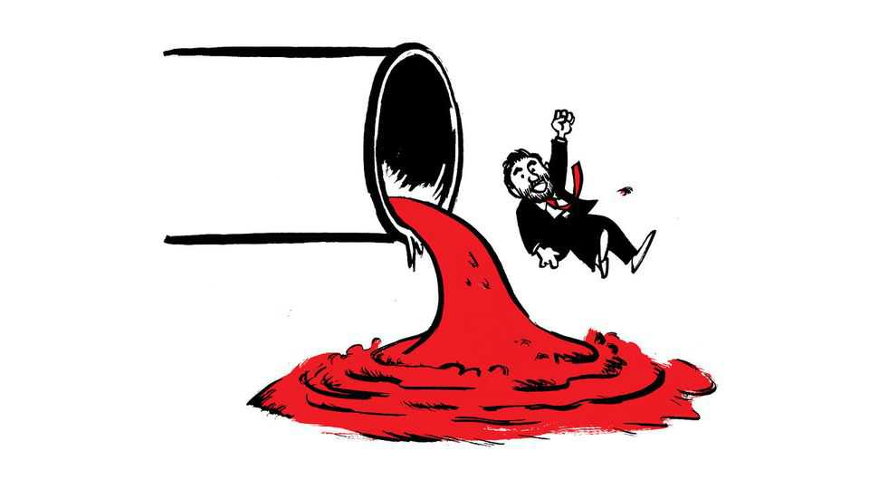
《经济学人》对“Z世代社会主义”的抨击过于草率（6月6日）。亚历山德拉·奥卡西奥-科尔特斯与佐赫兰·马姆达尼并非冷战社会主义者，他们不主张中央计划、先锋主义与外国独裁政权。他们是民主务实派，支持公民与政治自由、良好治理及扩大公共服务。这正是“下水道社会主义”的特征，而非斯大林主义。
■
当代社会主义者主张废除移民与海关执法局，因为他们相信自由流动，也因为他们目睹街头被戴面具的恶徒绑架民众。对亿万富翁征税的呼声并非源于零和思维，而是源于目睹巨额财富被用作对抗自由民主本身的武器。如同其同名的“绿色新政”，这一政策旨在拯救资本主义免于资本家的侵蚀，同时为地球降温。全民医保对美国自由主义的威胁并不比对英国自由主义的威胁更大。最后，《经济学人》本身曾警告种族隔离对民主合法性的危害。加沙的暴行刚刚唤醒自由派对这一危险的认知。所有这些都可以在自由主义框架内进行辩护。左翼存在非自由主义思想，但吸引追随者的是自由主义理念。■
我们应思考为何社会主义者常比我们的自由派同行更能表达我们的价值观。保罗·克里德副编辑《自由潮流》旧金山许多富裕国家的年轻人都对高房价、通胀和经济不确定性感到沮丧。然而，当前日益流行的某些解决方案——价格管制、财富税、国有化和更强国家干预——在阿根廷的视角下却呈现出截然不同的面貌。在过去一个世纪的大部分时间里，阿根廷曾尝试过如今在其他地方重新被发现的这些政策。价格管制多次未能遏制通胀，反而导致短缺。旨在使能源负担得起的补贴却抑制了投资，进而引发停电和天然气短缺。为保护国内产业而实施的进口限制，反而让消费品难以获得。■
或许最致命的打击是对私人财产和市场的信心丧失。反复的干预、没收和国有化削弱了长期投资，阻碍了深度资本市场的形成。先进经济体的年轻人担忧负担不起的住房；许多阿根廷人甚至从未接触过功能正常的抵押贷款市场。Z世代社会主义的吸引力不难理解。然而，那些曾经历过类似理念的国家的经验却显得不那么吸引人。阿根廷的经历表明，繁荣并非源于过多的经济自由，而是源于过少的经济自由。佩德罗·博尔韦（Pedro Volpe）布宜诺斯艾利斯■
首席大法官约翰·罗伯茨驳斥了最高法院“政治化”的指控，您说（“法官们划出的界限”，5月30日）。■
罗伯茨大法官在确认听证会上不诚实地将首席大法官的职责比作棒球裁判。这是蓄意诡辩。棒球中的好球区是客观存在的，裁判的判罚理念无关紧要。如今已有自动化系统能精准判定好球与坏球。更贴切的类比应是足球裁判评估争议性铲球，或篮球裁判判定“走步”——这些判断具有主观性，允许裁判个人意见影响最终裁决。此外，体育裁判显然与最高法院大法官一样存在顺从社会规范的偏见，往往倾向于听从声望更高、更活跃的球员的判断。
设想一下，当那位声势浩大的球员恰好代表了主裁判偏爱的球队时，误判和偏见的可能性有多大，你就会明白我们为何走到今天这一步。德里克·斯泰尔伯格 新泽西普林斯顿
你声称“英国广泛存在的‘双轨制执法’系统性歧视白人纯属无稽之谈”，并指出“白人和黑人遭遇犯罪受害的概率相同，而黑人被逮捕的概率是白人的两倍以上”（《这是英国的乔治·弗洛伊德时刻吗？》，6月6日）。但这些数据并不支持你的论点。成为犯罪受害者与实施犯罪是两个不同的概念，因此犯罪受害率相等并不能说明谁更倾向于犯罪，也无法证明逮捕率是否与犯罪行为成比例。相关指标应是按种族划分的犯罪行为。■
如果你没有这些数据，不如什么都不写，也不要基于错误的数字得出结论。彼得·缪勒（柏林）我饶有兴趣地阅读了你们关于战争与技术演变的社论（“更智能的技术正在让战争变成更愚蠢的选择”，5月30日）。我们似乎正在实现科幻小说的预言，任何真正热爱《星际迷航》的粉丝都能想象出近60年前的一集经典剧集，以最贴切的方式描绘战争的演变。《审判的滋味》（A Taste of Armageddon）设想了一场以计算机模拟攻击和反击为特点的冲突。但因为没有实际导弹发射，基础设施毫无损伤。取而代之的是，交战国家的公民自愿进入死亡室接受毁灭，以满足计算机模拟的伤亡数字。■
这是为了避免相互毁灭并维护在持续500年的战争中文明的存续。我们唯一缺少的只是自己的柯克舰长和斯波克先生，以拯救我们免于这些模拟场景——这些场景中，计算机判定数百万公民为“伤亡者”，并被强行送往他们真实存在的死亡。有些事情从未改变。格雷格·维西内亚，加州塞里托市 ■
《阿比·阿姆哈德的帝国愿景》（5月30日）正确评估了埃塞俄比亚前颇具希望的总理阿比·阿姆哈德在政治与外交上的失败。如今埃塞俄比亚已深度分裂，正逼近国家崩溃的边缘。冲突使该国大部分地区变得难以进入，阿比先生反复无常的领导风格更可能引发与厄立特里亚的进一步对抗。曾经象征外交自主的埃塞俄比亚，如今已沦为附属国，助长了阿拉伯联合酋长国对苏丹快速支援部队的鲁莽支持。
关于阿比（Abiy）的经济治理，尽管采取了一些自由化措施，其政府已放弃构建强盛经济的连贯愿景。对生产性基础设施的投资已让位于成本高昂的城市美化项目。因此，国家从经济领域的退缩仅在可能避免该国遭遇政府在政治领域同样灾难性领导后果的情况下才值得欢迎。麦克马斯特大学（McMaster University）经济学教授阿迪苏·拉希特（Dr Addisu Lashitew）“吃你的电子产品”（May 30th）一文报道了可食用医疗传感器，这类设备可监听人体肠胃。上世纪90年代的俄罗斯曾有传闻称克里姆林宫药丸（Kremlin Pill）是一种可吞服的医疗装置，据说能通过肠胃振动改善消化。有传言称，一位俄罗斯主人曾让好奇的美国晚宴宾客将这种药丸放入其口中。■
主人忘记告知客人药丸已被使用并被回收“通过常规方式”。彼得·切希克 马里兰州贝塞斯达
§011 缅甸内战最大赢家是中国原题：The real winner in Myanmar’s civil war is · 板块：Asia · 栏目：亚洲
，中国领导人习近平无需任何委婉措辞，便以缅甸总统身份首次访华时会见敏昂莱。这是一次明确的政治背书，支持了12月和1月举行的虚假选举——选举期间正值内战，无大反对党参与，由军方支持的政党以压倒性优势获胜。敏昂莱将乐于被视作国家元首，正如他本月早些时候在印度受到的待遇。
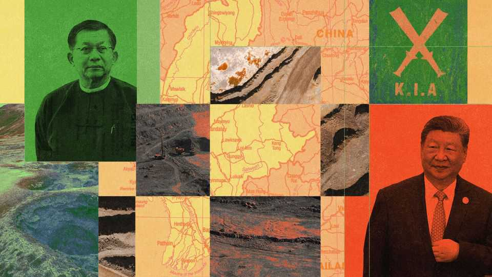
■
选举并未彻底终结他作为“被诅咒政权”“被诅咒领袖”的地位。但他正在取得进展。东南亚国家联盟（东盟）仍禁止他参加峰会，但成员国间出现分歧：一些国家仍坚持排斥其军政府，另一些则倾向于与其缓和关系。曾主导孤立他的美国，如今已转向漠视。一年前，军政府曾因唐纳德·特朗普（Donald Trump）写给缅甸的信中点名其将领，而对威胁对其出口征收40%关税的言论感到欣喜。此后，美国已悄然解除对数名其亲信的制裁。与此同时，美国国际开发署（USAID）的援助被投入木屑机，迫使缅甸普通民众依赖军政府的医院和新闻媒体。■
该政权主要依赖少数几个利益相关者：俄罗斯和中国为在联合国争取外交支持，提供军用飞机、燃料、无人机及无人机干扰设备，使其在内战中获得技术优势；中国和泰国则通过缅甸天然气出口获取收入。中国是缅甸最大的外资方。作为回报，军方向中国提供所需：印度洋的出海口，使中国贸易可绕过马六甲海峡这一潜在瓶颈。双边关系以交易为主。过去一年，中国利用其对边境地区强大反政府武装的影响力协助军政府。数个武装组织已签署停火协议并移交领土。但并非所有战果都归功于中国的援助——2024年开始的征兵行动已使军队规模突破10万。
军政府已在全国范围内推进，4月和5月攻占了实皆省北部的多个城镇。安全分析师安东尼·戴维斯指出，随着雨季来临，军队几乎肯定会进一步推进。其部队正向缅甸与印度、泰国和中国接壤地区目前由叛军控制的贸易站点推进。这对控制缅甸北部大部分地区的克钦独立军（KIA）而言是个不祥之兆，该组织虽掌控了克钦邦首府密支那以外的区域。新加坡国立大学东亚研究所的杰森·贝德福德表示，缅甸与中国的重稀土产量占全球约90%。全球近一半的这类稀土元素——用于电动汽车、国防科技和卫星——均来自由克钦独立军控制的矿场。■
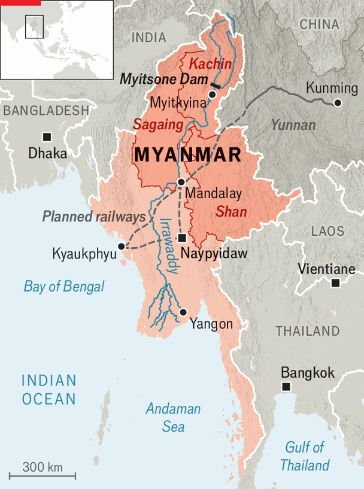
矿石随后被运往中国进行加工。中国在与缅甸打交道时一贯采取务实态度，而缅甸的控制权分散在军政府、缅甸民族民主同盟军（KIA）及其他反政府武装之间，各方均依赖中国的市场、武器运输路线和良好关系。中国是这些势力不可或缺的中间人。它可以通过威胁停止购买缅甸的稀土矿和翡翠，或切断其武器采购路线，或扣留居住在中缅边境中国一侧的领导人来对缅甸民族民主同盟军施加压力。同时，它也可以通过敏昂莱曾前往中国争取的贸易和投资关系对军政府施加影响。这种影响力并不等同于控制力。缅甸在中共全球战略中仍属次要优先事项——仅是一个需要处理的令人烦恼的边境问题，而非需要彻底解决的项目。■
中国希望稀土资源持续流动，其管道和铁路保持畅通，西南边境稳定以遏制难民、毒品和诈骗等外溢问题。它并不需要统一的缅甸来实现这些目标；它需要的是一个必须与中方打交道的缅甸。敏昂莱将军访问北京时，陪同的有邻近中国的克钦邦和掸邦首席部长，这表明此次访问重点聚焦于边境贸易，包括稀土资源，以及重启因2011年公众抗议而停滞的密支那大坝项目——这是一项价值36亿美元的中国工程。中国对缅甸的影响力远不止商业层面。它正日益塑造着缅甸国内资源的产出形态，以及国际社会对这些资源的认知与话语权。■
6月3日，中国在昆明拘押了缅甸出生的知名缅甸政治学者敏丁（Min Zin）。这位美国公民被指控从事间谍活动。他的被捕更可能与中美关系有关，而非中国通过压制一名主要批评者来帮军政府忙。但这一事件已让研究中国和缅甸的学术界人士感到寒意。随着中国对缅甸的控制日益加强，两个政权正变得愈发难以理解。■ 为获取亚洲政治、经济与安全领域的独家报道，请订阅我们的每周订阅者专属简报Asia Bulletin。
§012 缅甸军政府重启遭痛恨的水坝以讨好中国原题：Myanmar’s junta revives a hated dam to court · 板块：Asia · 栏目：亚洲
当民众抗议迫使缅甸暂停密支那水坝建设时，该项目成为民主、民族主义和对抗中国的象征。全球范围内，鲜有中国支持的水坝项目曾因公众反对而停工。去年12月，军政府二号人物梭温表示，已与中国达成协议重启该项目。该水坝群位于伊洛瓦底江交汇处，被许多缅甸人视为国家母亲河。密支那水坝是该系列七座水坝中的核心项目，也是最具争议的。问题在于为何要重启这座水坝。
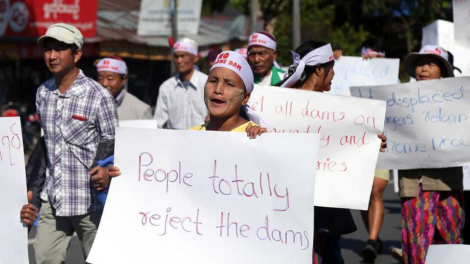
这项协议曾备受憎恶：协议不透明，大部分电力将送往中国，它威胁加剧洪水，破坏生物多样性、生计和下游的圣地。这些情况并未改变。此外，中国并不急需电力。因此，重启的真正重点并非水力发电，而是杠杆作用。日益依赖中国的军政府正利用这一被憎恶的项目换取中国的好感，并对控制克钦邦大部分地区的少数民族武装施加压力，该地区正是大坝建设地。该项目已成为与中国讨价还价的筹码，也是镇压异见的借口。镇压行动首先展开。军政府已发布命令，声明任何“缺乏确凿证据”反对大坝的人将面临法律行动，援引两项已用于压制批评者的法律条文。■
2025年1月颁布的网络安全法以宽泛定义的措辞将未经许可的虚拟私人网络和部分在线言论定为非法；7月出台的选举法则禁止几乎所有的近期选举舞弊事件批评。刑罚从三年监禁到死刑不等。当地民众虽不满，但显然感到畏惧。5月49家非政府组织谴责针对水坝的新封口令，称其为对言论自由的攻击，并指责军政府假意咨询以制造民意。克钦人权观察（Kachin Human Rights Watch）负责人辛玛表示，军政府已在该地区举行超过15场此类会议；许多曾为反坝组织工作的克钦民众被迫加入委员会以重启相关工作。她称此举旨在“让我们的民众彼此对立”。
克钦邦首府密支那的居民称，当地领导人若公开表态将面临监视、逮捕甚至家人遭报复的风险。第二目标是克钦地区。军政府控制着密支那和大坝选址地，但周边森林属于克钦独立军（KIA）。通过重启该项目，政权或许希望激化冲突迫使KIA让出领土。双方均依赖中国进行贸易和武器采购。大坝最初规划时，90%的电力将输送至中国。如今缅甸的发电能力，尤其是廉价太阳能和风能，已远超峰值需求。因此，该国可等待大坝建成。■
它更希望军政府修建一条连接中国西南部云南、缅甸北部曼德勒以及孟加拉湾深水港皎漂的铁路。这很可能如愿以偿。■ 如需独家关注亚洲政治、经济与安全动态，请订阅我们的周度专属简报Asia Bulletin。
§013 从菲律宾主食到全球热潮：ube亚洲的崛起 今日糖芋原题：From Philippine staple to global sensation: the rise of ube · 板块：Asia · 栏目：亚洲
亚洲 | 今日糖芋 从菲律宾主食到全球热潮：ube的崛起 该国正难以应对飙升的需求 在伦敦的菲律宾餐厅Kasa and Kin，紫色釉面在摇晃的“ube tsunami芝士蛋糕”上闪耀。甜食爱好者还能品尝ube布朗尼、ube冰淇淋、ube马卡龙，或啜饮ube玛格丽塔。这家餐厅过去主要服务菲律宾人，满足他们对家乡味道的渴望。如今其他人也纷纷涌入，有时只为拍摄紫色糕点。最近，这种常用于菲律宾甜点的芋头——ube，在西方菜单上迅速走红。过去一年，星巴克、Costa Coffee和Pret A Manger在美国和欧洲都推出了ube风味饮品。 ■
其温和、泥土气息、坚果风味令人喜爱。但真正让这种平凡的甘薯成为网络红货的，是它那引人注目的紫色。科学上称为 Dioscorea alata（紫薯）的这种植物，其紫色源于花青素——一种抗氧化剂，也助其获得超级食物的声誉（尽管它常被糖和酒精浸泡）。马尼拉食品学者伊格·拉莫斯（Ige Ramos）解释称，紫薯早在稻米成为主食之前，就是菲律宾人重要的碳水化合物来源。16世纪西班牙殖民时期，紫薯被制成甜点哈拉亚（halaya），源自西班牙语“jalea”（果冻）；19世纪末美国接管后，这种果冻又被加入炼乳。哈拉亚至今仍是热门甜点，而大多数菲律宾人认知的“紫薯”其实是这种甜点的甜美奶油风味，而非其本身温和的根茎。菲律宾紫薯种植者正努力跟上需求。■
乌贝藤需约十个月成熟，每年仅收获一次，且易受袭击菲律宾的洪水或风暴摧毁。这种作物仍以传统方法在小块土地上种植。越南、中国等国的竞争日益激烈，而市场则充斥着假冒产品。菲利宾人基尔·拉塞尔（Kyle Russell）回忆称，他曾订购一款“乌贝”鸡尾酒，结果发现使用的是红薯粉。他感叹道，由于乌贝被视为潮流，人们为牟利而制造假货令人遗憾。种植材料稀缺，繁殖需将块茎切成块状，再培育出新植株。一公斤仅能产出寥寥数个，农民需保留部分用于再种植。政府正支持研究从单个块茎中提取更多幼苗的技术。许多农民期盼这一突破。■
在菲律宾棉兰老岛（Mindanao），罗格尔·胡安（Rogel Juan）于四月开始种植紫薯，这源于他注意到网络上的热潮。他说紫薯的价格几年前每公斤约30至50比索，如今已飙升至150比索（约合3美元）。“对我们来说，紫薯只是普通植物，”胡安先生说，“但现在它就像黄金一样。”■ 为获取亚洲政治、经济与安全领域的独家报道，请订阅我们的周度订阅者专属周报Asia Bulletin。
§014 台湾地区反对党领导人在美国遭遇冷遇 硬推销原题：Taiwan’s opposition leader faced a tough crowd in America · 板块：Asia · 栏目：亚洲
亚洲 | 硬推销 台湾地区主要反对党中国国民党（KMT）领导人陈丽文（Cheng Li-wun）自2023年11月上任以来，常被指责对大陆示好。即便在国民党内部，许多人也认为她4月访京时过度迎合，成为该党十年来首位与习近平主席会面的领导人。在美国，作为台湾防务后盾的美国支持者对陈丽文重复习近平的言论感到震惊，尽管后者坚持以武力统一台湾。因此，陈丽文在美国为期两周的访问期间，大部分时间都面临质疑声浪，其行程于6月15日结束。■
在与政界人士、学者及海外华人会面时，她试图为对华接触辩护，称此举旨在避免不必要的战争。但显然，她并未如愿与特朗普进行深入会谈，也未见到任何高级官员。而她所接触的许多人对她的主张并不认同，尤其是她以阻挠台湾国防预算为由的解释。陈女士告诉《经济学人》，在从美国行程回国后的第二天，她表示此行超出了她的预期。■
尽管她承认未能说服所有对话者，包括十位国会议员，但她表示自己开辟了新的沟通渠道，并将继续推动两岸和平对话。这位2028年台湾总统选举的潜在国民党候选人表示：“所有人都采取更为谨慎和观察的态度是再自然不过的事。他们或许只是觉得我太过天真，但事实并非如此。”在国防议题上，她声称自己的观点并未因此次访问或国民党内主张与美国深化关系的对手压力而改变。然而，她对妥协的态度略显开放，对中国的措辞则稍显强硬。她重申其政党反对台湾宣布正式独立的立场，这一立场与中共领导人习近平保持一致。■
但她补充说，如果台湾不正式独立，且“大陆中国仍想动用军事力量入侵台湾，那么我们就会战斗。我们一定会反击。”她还表示，其政党可能很快提出立法，为国内防卫计划提供资金，这些计划未被议会5月批准的补充军事预算涵盖。国民党及其盟友在议会中占多数，曾拖延数月推迟一项400亿美元的更大预算提案，主要用于购买美国武器。最终通过的250亿美元预算主要得益于陈文茜所属的国民党对手，但该预算未包含资助国内无人机制造计划及其他提升台湾国防工业能力的经费。尽管如此，陈文茜称任何新提案恐怕都难以在9月习近平访美前获得批准。■
陈建仁对政纲的微调恐怕难以安抚其美国批评者。陈建仁否认媒体关于一名美国国家安全官员取消与她原定会面的报道。但特朗普政府似乎在她3月访美时给予了中国国民党籍台中市长卢秀燕更高层级的接见。卢秀燕作为另一名潜在的国民党总统候选人，曾推动增加特别国防预算。同样主张扩大特别国防预算的还有国民党立法院党团总召集人韩国瑜，他计划于6月21日访美，也可能参选总统。至于特朗普称以对台军售作为与中国谈判的筹码，陈建仁表示台湾不应成为谈判筹码。但无论特朗普做出何种决定，她认为台湾仍具备与中方平等谈判的实力。不过，习近平是否持相同看法则是另一回事。■
如需独家报道亚洲政治、经济与安全动态，请订阅我们的订阅者专属周报Asia Bulletin。■
§015 The problem with Narendra Modi’s airport-building frenzy原题：The problem with Narendra Modi’s airport-building frenzy · 板块：Asia · 栏目：亚洲
作为营销口号，“4399天的差距”恐怕难以赢得戛纳金狮奖。#LongestServingElectedPMModi这样的标签也未必能引爆社交媒体。但印度官方宣传部门在X平台上的帖子中，与花哨内容并列的实际成果确实令人印象深刻。当纳伦德拉·莫迪12年前成为总理时，印度仅有74个运营中的机场。如今，其政府声称这一数字已增至164个，并计划未来五年再新增50个。最新机场于6月15日投入运营。
诺伊达国际机场旨在成为首都德里的第二枢纽，设计年旅客吞吐量可达1200万，计划到2040年扩大至7000万，相当于去年新加坡樟宜机场的旅客数量。实际上，该机场位于邻近的北方邦，这是一个人口相当于尼日利亚、人均收入与马里相当的庞大州。在莫迪总理任内，该邦已落成10个新机场或航站楼，其中2024年初一天就启用6个。选举在一个月内紧随其后，这无疑只是那些奇怪的宇宙巧合之一。一年后，许多新设施已陷入衰退。那些大多数印度人地图上都找不到的地区机场，要么从未有过航班，要么仅接待少量旅客后便逐渐消失。■
认为萨拉纳普尔这个人口密集的贫困地区能支撑机场，始终是一种极端乐观的举动。莫迪政府的批评者将这些失败案例视为政府热衷于赢得选票的表面功夫而非实质治理的证据。这种批评是误导性的。并非所有机场都相同。许多失败的机场都是简陋的设施，仅能处理每天一两架航班。萨拉纳普尔年吞吐量刚过5万乘客，建设成本仅为570万美元——相当于孟买一套豪华公寓的价格。政府还配套了补贴计划，旨在深化印度内陆的航空连接。这项政策已历经第五轮调整，虽屡屡失败，但也取得了一些标志性成功。这些机场并非孤立建成。至少在象征意义上并非如此。
字面意义上，这正是印度正在做的事。德里的新机场距离市中心有80公里——在路况良好的情况下，车程需要90分钟。机场开张当天，除了私人车辆或昂贵的出租车外，没有其他交通方式。政府发布的新闻稿承诺“建设一个集多种交通方式于一体的枢纽，实现道路、铁路、地铁及区域交通系统的无缝衔接”。它幻想德里的“两个机场将构成一体化的航空系统”。实际上，新机场仅有两种出行方式：开车或步行。德里两个枢纽的整合程度，就如同朝韩两国的整合。对诺伊达进行指责是不公平的。孟买第二机场在圣诞节开放时也遭到同样程度的过度宣传。乘客抱怨，他们需要等待最多一小时才能等到出租车——这是唯一的进出方式。而即便如此，也是一项挑战。■
在新德里机场正式启用数月后，仍无法接通电话召唤优步，机场的Wi-Fi也存在故障。政府相信“建好了自然会有人来”。但问题在于，这些人如何离开？诺伊达和孟买至少可以说还处于起步阶段。但服务于班加罗尔和海得拉巴的机场已有18年历史，两地至今仍未建成地铁线路。另一个借口是州政府与中央政府之间的协调不畅。但这一问题不应适用于诺伊达；莫迪领导的政党自2017年起就已执政北方邦。确实，建设铁路连接成本高昂。然而，多数机场甚至连公共巴士都没有。尽管资本成本高昂，政府仍在全国各地的省级城市推进地铁线路建设，其中许多线路的载客量仅达到规划的极小部分。如同机场一样，地铁线路也象征着现代化。■
政府投入巨资建设这些项目，政界人士纷纷前来主持开幕仪式。许多项目堪称世界级，让民众得以一窥印度应有的模样。但就像机场一样，通勤者抵达车站前后的配套服务往往被忽视。接驳公交线路、完善的人行道或衔接服务寥寥无几，令民众望而却步。莫迪总理（Modi）已花费4399天建设印度亟需的机场和地铁线路。将这些设施衔接起来，将是更伟大的成就。■ The Economist 订阅者可注册我们的观点通讯，汇集了最佳的社论、专栏、特稿及读者来信。
§016 亚洲盟友注定要亲近唐纳德·特朗普原题：Asian allies are doomed to hug Donald Trump close · 板块：Asia · 栏目：亚洲
八年前，德国政府犯了一个幼稚的错误，当时它发布了一张七国集团峰会期间美国总统唐纳德·特朗普的照片。照片中，特朗普双臂交叉，面带挑衅的微笑，面对欧洲领导人。这张照片病毒式传播，因为它暴露了美国的孤立处境。（特朗普当时阻挠峰会公报的发布。）时任德国总理安格拉·默克尔被拍到向特朗普恳切倾身。法国总统埃马纽埃尔·马克龙挑眉的神情则传达出法国式的不可置信。唯一对这场欧洲突袭毫不在意的领导人，是已故日本首相安倍晋三。 ■
多年后，这张照片及其外泄仍让日本高层官员感到不安。东京方面认为，每当盟友孤立特朗普时，他们并非展现独立性，而是在自伤。随着另一场G7峰会于6月15日至17日在法国举行，欧洲与亚洲的美国盟友之间出现了分歧。欧洲政界人士与民众更倾向于看到美国孤立或虚弱，因为他们对特朗普怀有反感，视其为霸凌者。越来越多的欧洲人呼吁应对两大掠夺性超级大国——美国与中国，并强调中等国家应合作维护一个良性且公平的规则体系。这一愿景由加拿大总理马克·卡尼（Mark Carney）在1月达沃斯世界经济论坛上提出。■
卡尼盛赞中等国家组建自愿联盟，以捍卫自身价值观并抵制大国的经济胁迫。观众对听到美国和中国被批评感到兴奋，纷纷起立鼓掌。在东京，卡尼的提议被视为令人尴尬的幻想。人们也对欧洲人和加拿大人可能认为特朗普和习近平对他们的安全、繁荣和自主权构成同等威胁的想法感到摇头叹息的失望。这种说法荒谬至极，如同孩童般幼稚。亚洲盟友对以价值观为基础的外交政策持谨慎态度。更具体地说，日本精英阶层无意加入任何声称要解放中等国家对美中两国依赖的联盟。他们担忧一个日益强大的中国正在采取行动。■
日本正处在最前线，而其庞大的邻国中国则在不断积累军事力量，并利用其在稀土和其他工业原材料方面的主导地位，迫使其他经济体屈服。在日方眼中，中国正追求区域乃至全球主导权，唯有美国拥有足够的影响力来遏制这种趋势。日本期盼盟友能真正采取行动。出于善意的中等强国绝不会阻止中国对台湾发动攻击。与此同时，一些不法之徒正蠢蠢欲动，其中不乏步调一致的国家。这些国家包括日本的邻国俄罗斯和朝鲜。没有人期待欧洲或加拿大出手相助。澳大利亚虽被提及，但对其有限的实力并无幻想。卡尼先生及其同僚应担忧日本并不认同中等强国拯救世界的计划。■
如果中等国家联盟真的形成，日本将成为其天然领导者之一。尽管人口老龄化加速，日本仍拥有1.23亿人口和全球第四大经济体。它拥有世界级的科技和工程企业，以及造船业。其武装力量正在强化，这正将战后以来日本坚持只拥有自卫队的信条推向极限。日本向担忧中国威胁的亚太国家提供新旧军舰。在美退出后，日本成功挽救了跨太平洋贸易协定。在更近的地区，日本正谨慎加深与韩国的防务与安全关系。韩国并未忘记日本在朝鲜半岛的殖民历史所犯下的罪行。但也不能忽视朝鲜——这个狂热、拥有核武器的贫穷邻国——所带来的威胁。■
日本首相太田昭宏（Takaichi Sanae）在二月带领其主流政党赢得压倒性胜利，而其他民主国家的执政党正面临民粹主义者的围攻。此举并未阻止中国宣传机构称太田为法西斯好战分子，因她曾暗示日本的和平宪法不妨碍在冲突中防卫台湾。其他政府正研究日本如何（部分成功）减少对中国的稀土矿物及其他资源依赖。尽管具备诸多优势，日本仍需美国。东京方面称“没有B计划”。若日本被观察到通过增加自主武器制造来对可靠性较低的美国进行对冲，这被称为带有星号的A计划。特朗普或其继任者不得削弱对亚洲的承诺。■
该地区也没有比美国核保护伞更好的替代选择。关键在于证明日本对美国繁荣和科技霸权的重要性。过去，日本政界人士赴华盛顿时总爱高谈阔论自由与民主的空洞套话。如今，他们则大肆宣扬协助美国构建一套人工智能技术体系，足以甩开中国。诚然，日本精英阶层对MAGA攻击美国制度时仍会感到不安：其中许多人曾在常春藤盟校求学。但作为盟友，日本始终冷静理性。对视美国人如亲人的欧洲人或加拿大人而言，特朗普主义的攻击性显得像背叛。而在日本，美国并非亲人，而是曾击败日本又帮助其重建的超级大国。正因如此，日本比许多西方盟友承受着更大的损失风险。■
如果美国离开亚洲，日本及其邻国将不得不以不受欢迎且痛苦的方式适应中国。他们更倾向于不惜一切代价保持美国的亲近。这种做法非常务实。其他盟友应引以为戒，尽快成熟起来。■ 订阅者可注册《经济学人》观点通讯，获取我们最佳的社论、专栏、读者来信及特约评论。
§017 中国中产阶级饮食的"加州化" 中国原题：The Californication of middle-class Chinese diets · 板块：China · 栏目：中国
杭州有机餐厅主厨戴建军早年就预见了趋势。过去20多年里，他的客户始终执着地寻找食材，以高于市场价的价格支付给浙江农民，要求他们不使用化学肥料和农药。这种投入获得了回报：他的龙井庄园餐厅获得了米其林星级。他的祖母认为，第一代富人买房，第二代懂得穿衣，第三代则追求美食。随着中国近5亿中产阶级——年可支配收入至少1.5万美元——日益富裕壮大，其成员正在改变购物篮中的内容。 ■
他们希望吃得更健康、更安全、更简单。中国的食品体系正努力跟上他们日益发展的口味。农场正在生产更多西方常见的蛋白质和水果，杂货店销售的有机食品越来越多，餐厅也推出了更健康的菜单。中国餐盘的构成正在发生变化（见图表）。尽管猪肉仍是餐桌上的主角，但鱼类和海鲜合计已成为第二受欢迎的蛋白质来源。事实上，中产阶级的饮食似乎正变得越来越像加州风格。三文鱼、蓝莓和牛油果等食品正日益受到青睐。在历史上，中国人常常担心是否能获得足够的主食，如米饭和面条。在一个以农民为主的国家，农业至今仍雇佣了五分之一的劳动力。用仅占全球9%的耕地养活全球17%的人口，这并非易事。■
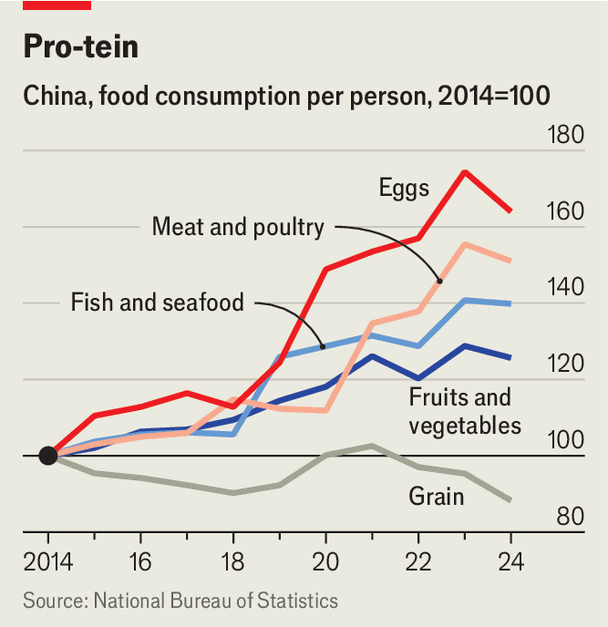
据此，中国依赖大量农产品进口，政府希望提升自给率。大多数中国民众如今能享用丰富的美食。不到四十年间，这个国家已从定量配给食物转变为遏制肥胖：目前超过半数成年人超重或肥胖。如今人们更担忧饮食健康而非食物是否充足。随着国家发展，追求更好饮食是普遍现象。但鉴于中国过往食品安全问题频发，信任缺失也解释了这种转变。2008年涉及受污染奶粉的丑闻导致超过30万名婴儿患病，震动全国。近期关于劣质食用油和餐厅提供预制餐食的争议也引发公众愤怒。要理解中产阶级饮食的“加利福尼亚化”现象，首先需观察特定食品需求的变化。
2022年政府指南首次将三文鱼推荐为omega-3的健康来源。多年来，只有极少数富人才能享用。如今，这种粉红色、肉质鲜美的三文鱼正逐渐在全国范围内流行起来。成千上万的配送员穿梭于杂货店、专业店铺和生鲜直播平台之间，将经过刺身级加工的三文鱼送往日益壮大的中产阶级。挪威海鲜委员会的西格蒙德·比约格（Sigmund Bjorgo）解释称，中国今年已成为全球第二大三文鱼市场。像北欧水产（Nordic Aqua）这样的公司则希望分得这波蓬勃发展的三文鱼市场红利。在浙江宁波边缘的水族馆大小的水箱中，这家挪威公司每年养殖8000吨三文鱼，并计划到2030年扩大至20000吨（约400万条鱼）。据公司总裁拉格纳·约恩森（Ragnar Joensen）预测，到那时中国的三文鱼市场年产量或将达到30万吨。
清晨收获的鲑鱼，下午就能送到300公里外的上海。在政府支持下，该公司正在其浙江基地建设全球最大的陆基大西洋鲑鱼养殖场之一。其水循环系统即使无需抗生素也能保持鱼群健康。中国正增加对其他受加州民众喜爱的美食的进口和本土生产。例如牛油果和蓝莓的受欢迎程度飙升，价格却大幅下跌。这两种水果——奶油质地的牛油果和125克一盒的蓝莓——价格已降至约1美元，仅为十年前的十分之一。中国西南部省份云南已成为国内蓝莓和牛油果种植的核心区域。去年中国蓝莓产量达近100万吨，创世界纪录，这种曾经昂贵的水果如今正被更多中国消费者享用。■
作为加州化（Californication）的一部分，食品生产方式也在发生变化。有机产品日益受到青睐。到2024年，中国有机农业用地面积较十年前翻倍，达到全国耕地总面积的0.7%。同期有机产品销售额超过167亿美元——仅2023年就同比增长19%。北京农产品市场负责人常天乐（Chang Tianle）认为，中国过去快速工业化和地价上涨迫使农民在每块土地上尽可能提高产量，这种模式曾优先考虑产量而非品质。尽管有机产品仍主要面向中产阶级，但随着更多农民开始种植有机作物，其价格已逐渐下降。
阿里巴巴旗下Freshippo超市近日向中国媒体透露，其已将有机蔬菜价格从普通蔬菜的两到三倍降至约1.5倍。其他主要电商平台也已建立有机供应链，目前从山东到山西的多个地区都提供有机蔬菜盒。但重大挑战依然存在。质疑者担忧，鉴于中国过去土壤和水污染问题，这些产品是否真正有机仍存疑。尽管销售额逐年缓慢增长，但张女士（Chang）也担心年轻人工作过于繁忙，无暇烹饪或关注食材品质，而小农场需收取的更高价格可能让消费者望而却步。（中国约40%的14亿人口使用外卖服务）另有观点认为，让新鲜健康的餐食变得便捷且便宜是一大机遇。■
高松在研究生阶段研究了美国快餐连锁Chipotle和Sweetgreen后，于2015年创立了Foodbowl，随后调整产品以迎合中国消费者的口味（对生食沙拉存在诸多疑虑）。疫情后餐饮业迅速复苏，他将此归功于中国人对健康的关注提升。这种加州式饮食转型可能受到政府欢迎。上海交通大学韩光华表示，中国人对食品安全仍抱有“非常敏感的神经”。其研究显示公众往往将此类问题归咎于中央政府而非地方官员，因此避免食品安全丑闻成为首要任务。这也有助于应对肥胖问题。去年政府将上升的肥胖率称为“重大公共卫生威胁”。中国共产党希望民众从“吃饱”（chidebao）转向“吃好”（chidehao）。■
这一切或许将证明是最令人欣喜的转变。■ 订阅者可注册我们的新刊《鼓楼》（Drum Tower），以了解世界如何看待中国——以及中国如何看待世界。■
§018 中国仍胜过西方 中国工匠的艰辛故事原题：How China still outworks the West · 板块：China · 栏目：中国
“我只是一个玉匠”，杨福宇在今年凭借技艺与奉献获得全国劳动奖章后对当地媒体如此说。然而他精巧的雕刻作品却反驳了这句话：这绝非易事。他与同事耗时五个月完成一件作品，将玉石的凸起与不规则形态转化为神话中的龙，既缥缈又威猛。题为《九龙献玉盘》的雕刻作品中，龙形生物仿佛不愿轻易放弃这块玉盘。每年由官方工会联合会颁发的劳动奖章旨在表彰并激励中国劳工。
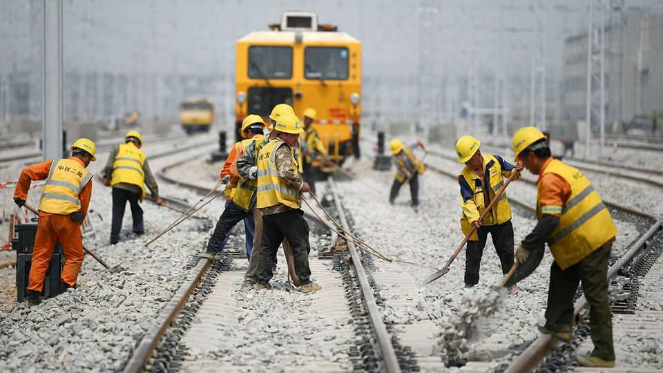
一些获奖者确实实至名归。但奖项的构成并未准确反映当前就业市场的真实状况。相反，它映射出一种政府思维模式，这种思维模式或许正在加剧中国的就业问题。中国工人亟需提振士气。近年来，由于房地产持续低迷，数百万建筑工人失去了工作。白领阶层则担忧人工智能带来的无形却强大的威胁。尽管高科技制造业蓬勃发展，但其更擅长吓退德国工人，而非吸纳中国工人。然而，奖牌榜上充斥着工程师、技术员和中共党员，而提供日益增多就业岗位的服务业和零工经济却严重缺席。■
中国铁路行业（雇用180万人）选出了18位个人获奖者；金融服务业（雇用超过1230万人）则选出了16位。仅有少数外卖骑手入选，他们在北京颁奖典礼上身着醒目的黄黑相间骑行服引人注目。奖牌数量也未能反映中国劳动力的地理分布。每个省级工会联合会分支都会获得一定数量的奖牌配额，但这些配额与该省劳动力规模关联并不紧密。广东，杨先生工作的地方，如今占中国总就业人数的近10%，但获得的奖牌却不足全国省级配额的6%。与此同时，北京、上海及中国东北老工业基地在奖牌获得者中占比过高，占据超过五分之一的配额，但三地合计仅贡献不到十分之一的就业人数。■
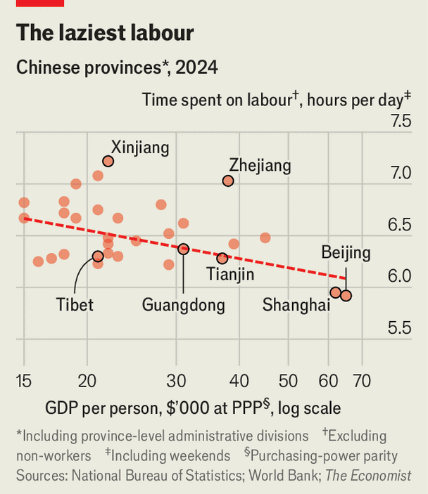
奖牌组合并不能反映各地人民的工作强度。根据中国时间利用调查，北京和上海的劳动者通常工作时间比其他地区的人更少（见图表）。当然，这两座城市也不愿接受这种排名，但这并不完全令人意外。作为中国最富裕的地区，它们能负担得起更多的闲暇时间。这种工作时间与收入水平之间的关联在全国范围内都可见：富裕省份的劳动者工作时间往往更短。值得注意的是浙江，这个省份同时包含创业城市温州和科技中心杭州。尽管浙江经济繁荣，但其劳动者的工作时间却出人意料地长。■
工会联合会宣布奖项时呼吁所有工人效仿获奖者，展现对岗位的奉献精神，为国家目标作出更大贡献。中国领导人常赞扬勤奋精神，担忧慷慨的福利制度会滋生他们所认为的西方国家特有的懒惰。但这种趋势不仅在各省间可见，时间维度上也清晰呈现：随着中国富裕程度提升，工时持续缩短。参考2018年之前的调查，工人日均支付劳动时间7小时8分，或在就业或家庭经营中。最新调查显示，日均劳动时间降至6小时23分。事实上，这一最新数据并不逊于美国和德国工人报告的水平。■
这些调查揭示出中国与堕落的西方之间最大的差异在于，中国人参与工作的数量，而非工作时长。在中国，18至59岁人群中超过75%参与了某种形式的有偿劳动。在美国（该国对年龄分组的界定不同），18至54岁人群的相应比例为56%。一种解释是，那些在社会保障体系更完善的国家本应完全退出劳动力市场的群体，仍在中国投入部分时间。他们的贡献可能拉低了全国平均值，但他们不会赢得任何奖章。但正是他们让中国仍能超越西方。■ 订阅者可注册我们的新周刊《鼓楼》，了解世界如何看待中国——以及中国如何看待世界。
§019 新闻敲诈在中国泛滥原题：News extortion is rife in · 板块：China · 栏目：中国
上个月，中国当局披露，浙江（Zhejiang）东部三名男子因“新闻敲诈”被判处刑罚。他们挖掘（或在许多情况下编造）了180多家准备上市公司的负面信息，并勒索封口费。检察官指出最令人担忧的是，部分公司未向警方报案，尽管这些男子威胁要发布的消息并不属实。他们选择直接支付费用以避免影响上市流程。一家公司支付了5万元（约合7000美元），另一家则支付了3万元。
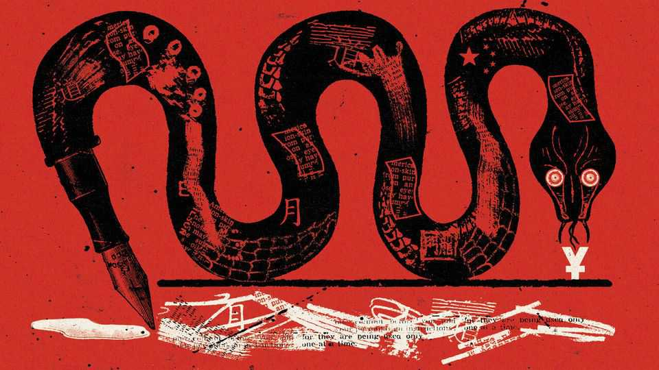
许多地区的公司或许希望支付金钱能引发负面新闻报道，或催生正面报道。但在中国，这种现象却极为普遍，且不仅限于网络诈骗者。2002年，新华社（Xinhua）这家权威国家广播机构的四名记者曾收受一家矿业公司的现金和黄金，以换取掩盖一起致命爆炸事件。2015年，《21世纪经济报道》这家国有报纸的高管因勒索被判处四年有期徒刑。去年，一位颇具影响力的财经博主被发现从他所撰写的公司中获利700,000元。其中一例中，他捏造上海某公司员工被不满客户刺伤的虚假新闻，仅在收到高额“信息服务费”后才撤下文章。政府将问题归咎于个别不法分子。■
但中国自身对媒体的严格管控往往导致腐败行为，中国媒体项目（China Media Project）的研究人员大卫·班德斯基（David Bandurski）在最近一篇博客文章中写道。国家媒体的记者往往需要通过报道制造“正能量”来讨好政府，这种倾向助长了不道德行为。而在报道不受欢迎的新闻时，这类内容往往在缺乏解释的情况下消失，因为在中国，审查员的庞大队伍使得此类新闻随时可能被删除。另一个问题是，中国媒体公司仅靠售卖新闻难以生存。很少有媒体成功说服读者订阅付费服务。正如一位沮丧的前记者所感叹的：“这里的媒体不允许报道真实的事情。” ■
她曾在一家网络媒体工作了一年，该媒体通过发布负面报道迫使公司签订广告合同。勒索，她说，就是“通过报道牟利最直接有效的手段”。■ 订阅我们的新周刊《Drum Tower》，了解世界如何看待中国——以及中国如何看待世界。■
§020 舒适与约束并存 中国最“宜居”城市的生活图景原题：Comfort meets constraint in China’s most “liveable” city · 板块：China · 栏目：中国
高收入、低压力的生活并非想象中完美
中国“最宜居城市”的生活究竟什么样？这无疑是个复杂的问题。对一些人而言，这会唤起对安全、便利和规划型领导的赞誉；对另一些人来说，这种组合也意味着压制、监控和经济迟滞。现实的复杂性在于，这些问题与优点往往并存。为深入探讨这一议题，《长安》决定从“宜居性”视角切入，走访了在某主流报纸指数中被评为全国最佳的城市——绍兴。
这并非对中国的宽松测试，而是一次严格的检验：如果宣传者的说法在任何地方成立，那么在绍兴也应成立。这并非一项艰巨的任务。绍兴确实是个宜人之地。作为一座围绕运河而建的古都，如今以酿造清香的黄酒闻名，同时也是20世纪中国最著名作家鲁迅的故乡。鲁迅的卡通形象——突出其浓密的胡须——随处可见，令大量国内游客感到愉悦。相比之下，他百年前作为中国社会规范尖锐批评者的角色，在官方展示中则被淡化，这体现了政府对日常生活的修剪。对本地居民而言，绍兴兼具小城市的从容（500万人口使其在中国标准中属于“二三线城市”）与长江三角洲地区的繁荣。对部分居民而言，绍兴则是杭州——这座高科技中心——的通勤城市，两地仅需一小时地铁车程。■
尽管绍兴在细节上无可挑剔，但它也揭示了这个高度竞争国家中经济与学术压力如何渗透在表面平静之下。这些是中国“美好生活”的不可回避的警示。许多人喜欢绍兴所提供的生活。该市居民年税后收入约73,000元（约合10,800美元），约为邻近上海的四分之三。但绍兴的平均房价仅为上海的四分之一。其人口持续增长，每年吸引约3万名来自中国其他地区的居民。福建商人陈牛群曾在德国生活，因此他对绍兴的偏好有更直接的比较依据。商业文化相对宽松，他每天工作八小时，早上送女儿上学。
绍兴展示了过去十年中国城市空间的物理改善。该市将两座令人反感的12层高楼削低至不到原高度的一半，将其改造为气象博物馆。同时清理了污染的河流，在老巷间开辟了广场和步道。更令人担忧的是，城市中也存在普遍的监控。摄像头遍布全城。然而许多居民表示支持，认为这是安全的代价。市中心最近新开了一家24小时营业的渔具店：夜间无人值守，依靠内外部摄像头确保无人偷取鱼竿或鱼饵。“这就是为什么我们是一个和谐社会”，柜台后的人笑着引用了一句过时的口号。在中文语境中，绍兴的独特之处在于其机会与相对开放的结合。凭借庞大的纺织业、高科技企业及旅游业，该市提供了大量就业机会。
但与中国的最大城市不同，绍兴对国内移民持开放态度。南方日报在其评选的中国57个最宜居城市榜单中，绍兴已连续四年位列榜首，该榜单综合考量了房价、收入和通勤等因素。一对本地收入水平的夫妻在绍兴买房需工作十年，而上海则需要三十年。因此绍兴被选为中国的最佳小城，成为“高收入、低压力”生活的典范。但绍兴无法置身于全国性问题之外。前建筑工程师阮先生估计，近年来新建住宅中约有三分之一处于空置状态。他所在行业已无更多工作机会，因此转投纺织企业。他深受房价下跌之苦——其所在区域房价下跌约25%。“你感觉更穷了，就不想花钱了，”他说。■
他对未来的期望更加务实。“我们只想稳定。”他说。绍兴对移民持开放态度，部分原因在于其人口锐减。全国生育率已大幅下降，尤其在富裕地区更为低迷。刘先生经营着一家小咖啡馆，已婚，年近三十，但他与妻子决定不生育。“代价实在太高了。”他说。他也目睹了他人的困境，从被考试压垮的学生到陷入不良关系的年轻女性。“我见过不少顾客进来哭，他们就坐在那儿喝着咖啡哭泣。”他说。绍兴也体现了中国城市受控的狭窄性，这是一种由年长干部主导的美好生活愿景，他们对一切皆有规划。国家官员将绍兴评定为公共安全的模范城市。
其宣传的成就之一是，当地警方会自动接到通知，当未登记的可疑人员进入酒店房间时。城市管理者已将66个住宅区划为安静区，配备分贝监测系统，并在这些区域清除了露天酒吧和无证食品摊贩。绿化良好的公园里满是打牌的退休老人，而高中生则在教室里学习至深夜。"这简直无聊透顶，"一位唇上有穿孔的年轻女子嘟囔道。然而，对于寻求安稳而非刺激的中国而言，绍兴模式颇具吸引力。尽管全国人口将出现下降，该市仍计划到2035年将人口增至650万。新居民也无法逃离周围的种种压力。■
但他们会获得一个精心打理的养老场所——这正是中国其他地区将要采取的做法。 ■ 《经济学人》的订阅者可以注册我们的Opinion 通讯，该通讯汇集了我们最佳的社论、专栏文章、特稿和读者来信。 ■
§021 美国城市应对无家可归者问题，丹佛提供解决方案原题：As American cities grapple with homelessness, one offers a fix · 板块：United States · 栏目：美国
丹佛市长是迈克·约翰斯顿（Mike Johnston），名字中带有一个“t”。其非正式的“街头市长”是迈克·约翰逊（Mike Johnson），他左眼下方有泪滴纹身，声音温和——你的记者几乎听不清他在丹佛新设的无家可归者收容所食堂里，用枪与玫瑰乐队歌曲进行卡拉OK表演的声音。多年来，约翰逊的生活充斥着药片、海洛因和街头生活。如今他每天帮助像他一样的丹佛市民寻找庇护所或戒毒场所。这比过去容易多了：丹佛的帐篷营地已基本消失。
美国无家可归人数在2024至2025年间下降了3%，但无家可归者数量仍比疫情前高出31%。自2020年以来，帐篷在温暖的西部和南部城市迅速蔓延，这些地方人们可全年露营。这成为一个问题——对缺乏庇护所的无家可归者而言，对感到城市被营地占据的本地居民而言，也对民主党人而言，后者掌管许多大城市，而唐纳德·特朗普指责他们制造了城市混乱。初步迹象显示，由民主党人约翰斯顿（Johnston）领导的丹佛市可能提供了解决方案。近年来，无家可归问题的政策在极端之间摇摆。官员们努力在对社会最弱势群体（其中许多人患有精神疾病或药物成瘾）的同情与居民和企业对粪便和针头的容忍度之间取得平衡。■
由于不作为，旧金山等城市爆发了政治危机，当时在无家可归和公共吸毒现象激增期间掌权的市长被温和改革派取代。越来越多的城市正采取强硬措施应对这一问题。2024年，美国最高法院在格兰茨帕斯诉约翰逊案中裁定，当无家可归者别无选择时，禁止其在户外露宿并不构成残酷和不寻常的惩罚。此后，超过300个市镇已实施露营限制措施，但这一做法也面临自身挑战。商业业主可能因此感到满意，但露营禁令往往将无家可归者推向藏身之处、医院和监狱。丹佛市多年来一直实施露营禁令，但无家可归者无住所人口仍持续激增。■
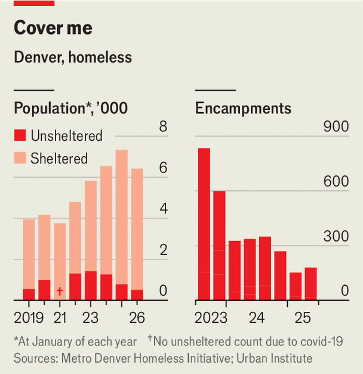
2023年约翰斯顿市长上任时，丹佛市街头无家可归者近1,500人，这在人口不足73万的城市中堪称高比例。市长解释称：“人们正在离开那些无法解决这一问题的‘蓝色城市’。”为此他宣布进入无家可归危机紧急状态。此后街头无家可归者数量下降了64%。尽管数年里整体无家可归人数持续攀升（见图表），部分人虽获得临时庇护但未实现永久安置。但丹佛市近期也出现了转折，2025年至2026年间，全市无家可归者数量骤降约12%。如同许多雄心勃勃的政策一样，丹佛市的计划依赖精准投资与持续聚焦。首先，市政府利用美国复苏计划法案（ARPA）——乔·拜登的疫情纾困法案——资金购置并租赁新庇护所。
纽约市长办公室报告的住房计划支出中，约有一半资金来自联邦政府。新建酒店和微型住宅社区新增了约1000个庇护所单元。切斯特·伯尼（Chester Burney）已在阿斯本酒店（Aspen，原为酒店改造）居住了16个月。“妻子去世后，我陷入低谷，”他回忆道，“能有一个地方尝试重新振作，感觉很好。”关键的是，该计划不仅包含住房，还提供支持服务。每层楼设有“护理协调员”，帮助“住户”办理新身份证、食品券和住房手续。伯尼现在在一家汉堡店工作，计划今年8月搬进自己的住所。在另一个项目埃拉蒂村（Elati Village），微型住宅以每套2.5万美元的价格建在城市停车场内。通常的“邻避效应”担忧可能因偏好整洁的小屋而非露营而缓解。■
“整个街区都被露营地占据过，”丹佛市住房稳定部门负责人科尔·钱德勒说道。他正注视着一座邮局，那里曾是容纳超过100人的帐篷城。如今街道干净整洁，落基山脉和科罗拉多洛基队的球迷们正悠闲地走向棒球场观看下午的比赛。新的收容所使官员能够一次性将整个露营地迁入室内。在许多城市，无家可归者有时会拒绝收容所，因为他们无法带宠物或个人物品。因此丹佛允许这种做法。一旦城市清理了某个区域的帐篷，就会对该区域的市中心实施禁营令。街头市长约翰逊先生现在每天清晨都会参加一次会议，官员们讨论新出现的露营地报告并规划外展行动。如果有人搭建帐篷，“你可能只待一天，运气好的话，”无家可归者倡导者安娜·米勒说道。■
米勒女士对这一变化感到惋惜。然而市长（实际上两位市长）或许会将她的证词视为计划正在发挥作用的证据。丹佛市的初步成效也并非没有保留条件。2024年，阿斯本收容所曾发生一起双重谋杀案。约三分之一离开市政府收容所的人最终会再次入狱、重返街头或死亡。“我们目前面临的最大挑战是向永久住房的过渡速度，”约翰斯顿先生承认道。与此同时，城市正面临财政紧缩，而联邦政府正在削减住房补贴和医疗补助计划（美国为贫困人口提供的医疗保障）。事实上，对城市而言最大的疑问或许是：在缺乏联邦援助的情况下，它们能取得多大进展？■
市长们通常会观察其他地方的实验并因地制宜地应用到自己的城市中。“我倾向于将丹佛视为务实主义的典范，”在布鲁金斯学会（Urban Institute）评估该市政策的萨曼莎·巴特科（Samantha Batko）表示。她指出，即使没有ARPA资金，地方政府也能通过协调外展行动并实时追踪新出现的露营地来取得进展。事实上，达拉斯市采用类似方法取得了成功。其他市长也急于采取行动。约翰斯顿先生回忆称，有三位市长在一天内联系他，询问丹佛市的无家可归者计划。“我们想这么做，”他们告诉他。■ 关注美国政治动态，请订阅《美国简报》（The US in brief），这是我们的每日简报，提供对最重要政治新闻的快速分析；以及《制衡》（Checks and Balance），这是一份每周简报，探讨美国民主的现状及影响选民的关键议题。
§022 美国共和党急于摆脱伊朗战争的阴影原题：Republicans are desperate to move on from the Iran war · 板块：United States · 栏目：美国
11月的中期选举对共和党而言本就困难重重。上一次现任总统所在政党在中期选举中获得国会席位是在2002年，当时美国民众因9·11事件团结在乔治·W·布什（George W. Bush）周围。特朗普对伊朗的战争将产生不同的影响。这在一定程度上是因为布什的“反恐战争”最终使许多美国人对海外介入持怀疑态度。同时，这次特定的介入异常不受欢迎，将留下顽固的后遗效应。关于协议的疑问依然存在，但一些事情已经变得清晰。 ■
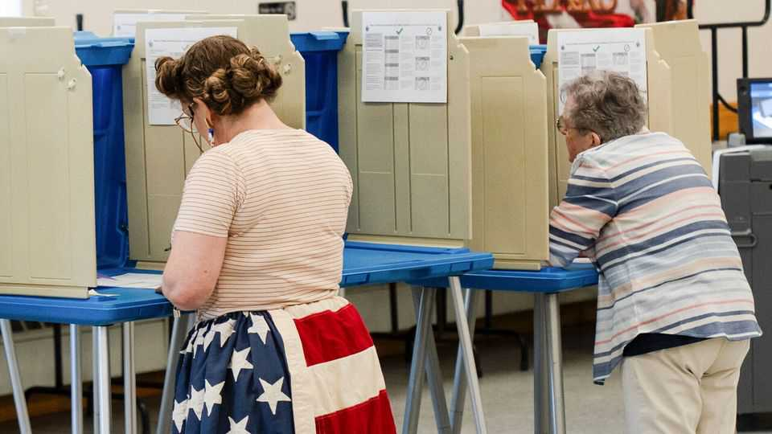
这场战争给美国的财富和声望带来了代价。消耗了大量军火后，美国遏制其他敌对势力的能力已被削弱。冲突动摇了其盟友关系，并冲击了全球石油市场。对国会山许多议员而言，战争结束如何影响他们的就业前景也成了令人困扰的问题。据《经济学人》/YouGov在首轮袭击前一周进行的民调显示，仅27%的选民认为美国应攻击伊朗。特朗普在MAGA（特朗普的保守派组织）中的号召力如此强大，使得共和党对袭击的支持率在袭击后一周内从56%跃升至76%。然而，更广泛的支持并未随之而来。至6月初，民主党对战争的支持率几乎归零（7%），独立选民支持率较低（18%），甚至共和党支持率也出现了下滑（59%）。■
在协议宣布前夕进行的一项民调显示，超过半数自称的MAGA支持者认为，美国应尽快推动该协议。然而，这项协议在政策或政治层面并未给国会山的共和党人带来多少喘息之机。少数人直言不讳地表达了看法。即将离任的共和党参议员比尔·卡西迪表示：“里根总统若在天有灵，恐怕也会气得翻滚。”另一位共和党参议员特德·克鲁兹则指出：“向那些想要谋杀我们的神权狂徒提供数十亿美元并非明智之举。”许多共和党同僚虽未公开表态，但内心同样担忧。MAGA圈内批评者则更为直言。6月17日，鹰派人物本·沙普罗称该协议是“一场灾难”。另一位右翼评论员塔克·卡尔森表示，这场冲突“终于在关键时刻结束”，但该协议使伊朗成为“重要角色”。■
对脆弱的共和党人而言，最大的担忧是战争对物价的影响。有关协议的消息使汽油价格从5月高点下跌了约12%，但目前仍比战前高出35%。清理霍尔木兹海峡的水雷并恢复原油产量至战前水平仍需时间。美国也缺乏应对下一次供应冲击的缓冲。自3月以来，政府通过释放战略石油储备中的原油来缓解高油价。目前该储备已低于1983年以来的任何时期，使特朗普在与伊朗的谈判受阻或夏季飓风扰乱美国炼油厂时，应对能力减弱。■
对民主党而言，这是一笔政治上的一大收获。“这既是一场不受欢迎的外国军事冒险，又直接冲击了家庭财务，”一位资深民主党幕僚兴奋地表示。“无论对任何共和党人来说，这都是一场难以估量的政治灾难。”共和党策略师们仍保持乐观，至少在公开表态中如此。“从政治角度看，中期选举还远在天边，”宾夕法尼亚州共和党策略师查理·杰罗表示。“如果这件事在四到五个月内淡出新闻头版，我不认为它会产生政治影响，”共和党策略师福特·奥康奈尔说道。该党最可行的希望或许是一场重大新事件的出现。特朗普拥有诸多才能，但这一点正是他的专长。■
保持对美国政治的敏锐洞察，订阅《美国简报》(The US in brief)，这是一份每日简报，提供对最重要政治新闻的快速分析；以及《制衡》(Checks and Balance)，每周专栏，深入探讨美国民主现状及选民关切的核心议题。■
§023 民粹主义总统，迎战社会主义市长原题：Populist president, meet socialist mayor · 板块：United States · 栏目：美国
说唐纳德·特朗普憎恨华盛顿特区并不完全准确。他与这座城市的复杂关系远非简单的憎恨。他的部分干预措施改善了城市（公园环境更好），而另一些措施却损害了城市（税基状况恶化）。不过大多数居民对这位总统的态度毫不掩饰地充满敌意：他们憎恨他。这种敌意似乎推动了远左翼候选人简妮丝·刘易斯·乔治（Janeese Lewis George）在民主党初选中获胜。截至《经济学人》发稿时，选举结果尚未最终确定，但差距似乎已大到难以逆转。
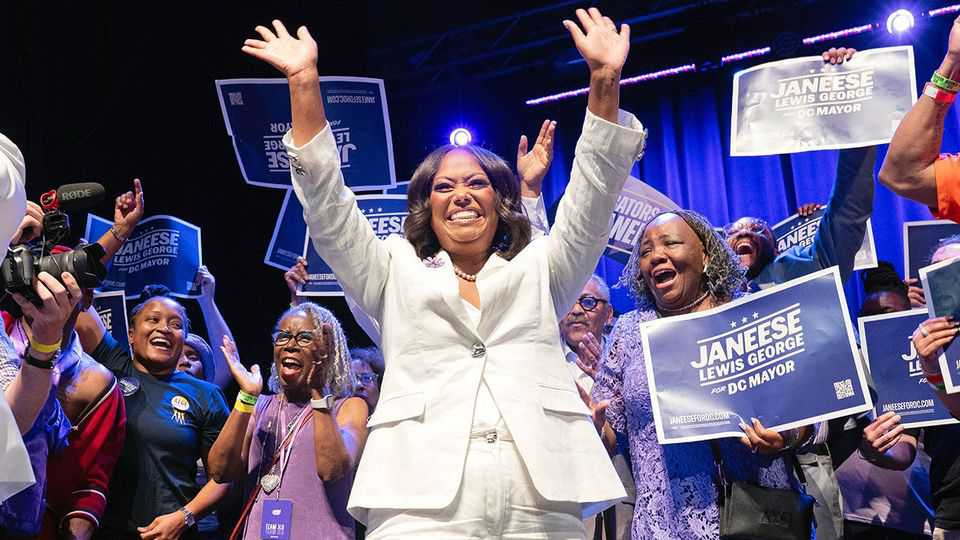
■
这几乎确保莱斯·乔治女士（Ms Lewis George）将成为这座高度民主化的首都市长。这也可能意味着这座城市与特朗普先生之间的关系更加紧张。投票前夕，他称若她当选，可能会“夺回华盛顿”，并“以联邦政府的名义管理”这座城市。选举之夜，莱斯·乔治女士回忆起选民对她说：“如果特朗普不喜欢你，我却喜欢你！”这种对立情绪在民主党初选中或许能赢得支持，但华盛顿作为联邦直辖特区，自治权有限，难以承受与联邦政府对抗的风险。去年特朗普曾暂时接管当地警力，部署国民警卫队部队打击犯罪，并派遣联邦特工抓捕非法移民。国会也有权废除地方法律，过去三年内已两次行使该权力。共和党人希望进一步扩大这种权力。■
去年他们提出了14项限制华盛顿自治权的法案，这种自治权被称为“自治权”。现任市长穆里尔·博斯尔（Muriel Bowser）巧妙地应对特朗普。她下令当地警方配合联邦执法部门，包括移民官员的工作。她还采取了其他安抚措施，例如将曾被涂在白宫外大街上的巨型“黑人生命至上”标志覆盖。左翼批评者称这是绥靖政策。莱斯·乔治（Ms Lewis George）誓言终止与移民与海关执法局（Immigration and Customs Enforcement）的合作。其余政策议程雄心勃勃且成本高昂。莱斯·乔治是类似纽约市长佐赫兰·马姆达尼（Zohran Mamdani）的民主社会主义者。她提出更强的租金管制和更多育儿补贴及公共交通补贴。华盛顿如何为这些政策融资尚不明确。■
华盛顿市今年预计将出现13亿美元的财政赤字。这在一定程度上是总统削减联邦雇员规模所致。过去一年，位于华盛顿的联邦岗位数量减少了14%。政府合同削减也冲击了私营部门就业。因此，该市经济预计今年将收缩。周五漫步市中心，街道上空旷得如同末日灾难片中的场景。约五分之一的办公室处于空置状态。Lewis George似乎认为主要问题在于NIMBY（Not In My Backyard）对火热住房市场的制约。她希望未来五年内建成72000套住房，其中大部分将获得补贴。但需求疲软导致该市租金下跌。（华盛顿仍是全美非支付率最严重的城市之一。）开发商因此也纷纷退缩。■
去年发放的建筑许可证数量是12年来最低。大多数经济适用房项目都处于亏损状态。候选人对租金管制的偏好恐怕难以奏效。要实现增长，这座城市需要吸引投资者，更重要的是吸引人口。犯罪率虽已下降，但仍令人不安地居高不下。市政府对公共安全的宽松态度已成为进步派地方议员（如刘·乔治女士）与联邦政府之间的争议焦点。甚至许多国会民主党人也认为市议会对犯罪问题过于宽松。2023年，乔·拜登推翻了一项地方法律，该法律原本会降低劫车等罪行的处罚。特朗普则走得更远，引发了市民的不满。刘·乔治女士或许成了市民眼中的斗士。但与总统争执并无实质利益可得。■
华盛顿更需要一位解决问题的人，而非斗士。 ■ 关注美国政治动态，请订阅我们的简报《美国简报》（The US in brief），该日报提供对最重要政治新闻的快速分析，以及每周专栏《Checks and Balance》，深入探讨美国民主现状及影响选民的议题。
§024 美国情报机构的权力真空与人事更迭原题：Political manoeuvres are delaying a spy law and new intelligence chief · 板块：United States · 栏目：美国
| 生存法则
美国情报机构习惯于分析混乱局势，但近期却遭遇了另一种形式的不确定性。首先，5月22日，国家情报总监（DNI）图尔西·加巴德（Tulsi Gabbard）宣布辞职。随后，唐纳德·特朗普（Donald Trump）提名住房官员比尔·普尔特（Bill Pulte）接任，后者缺乏国家安全经验，却曾利用其接触的房贷记录协助调查特朗普对手。此举引发民主党表态，称将阻挠重要间谍权力的续期，直至总统提供更优人选。
特朗普于6月11日提名杰伊·克莱顿（Jay Clayton）担任纽约南区美国检察官。克莱顿通常被认为比普尔特（Pulte）更为稳健可靠。但6月16日，特朗普表示克莱顿将不会出席原定的确认听证会，并称关于监听权力的协议将取决于另一场政治斗争，即围绕选民身份验证要求的争议。正如特朗普一贯所为，这些戏剧性举动掩盖了更深层次的问题，即监听权力的范围以及国家情报总监（DNI）本身的角色。所涉的监听权限源自2008年对数十年来一直存在的外国情报监视法（FISA）的修正案。根据修正案第702条，机构可通过提供宽泛的理由（例如反恐）来获得监听外国人士通信的批准，而无需单独获取每份监听令。■
结果是一场情报洪流。例如，2022年，总统每日简报中59%的文章都依赖于美国国家安全局（National Security Agency，NSA）通过第702条收集的情报信息。隐私倡导者则对这项法律的范围及其允许政府大规模收集部分美国公民通讯的方式表示不满。就连特朗普也曾一度反对该法律，认为其曾被用于窥探其2016年总统竞选活动。今年白宫推动该法律的续签，但未进行任何改革。马可·鲁比奥（Marco Rubio）警告称，若让该法律失效，将对国家安全造成“毁灭性打击”。第702条同样影响着美国的盟友，尤其是参与情报共享的“五眼联盟”（Five Eyes）成员国，包括澳大利亚、英国、加拿大和新西兰。■
他们不仅受益于情报优势，还深度嵌入了拦截系统。然而法律在6月12日凌晨失效，此前因反对普尔特（Mr Pulte）当选及要求更强隐私保护的两派势力阻挠了法案的更新。特朗普与克莱顿（Mr Clayton）的新博弈将进一步推迟投票，为参议院隐私倡导者争取更多时间推动议程。民主党参议员罗恩·怀登（Ron Wyden）和共和党参议员迈克·李（Mike Lee）支持包括要求获取美国公民数据需搜查令在内的限制措施。当前担忧是，美国电信和科技企业可能拒绝提供特定数据，担心此举将失去法律保护。质疑者反驳称仍有充足时间解决问题。外国情报监视法院（FISA court）已批准有效期至3月的广泛搜查令，因此不会出现短期内断电风险。■
FISA的其他部分也得以保留，允许情报人员根据个案申请搜查令。“任何针对特定目标的真正紧急情报收集行动都可以通过个案司法程序进行，”卡托研究所的帕特里克·埃丁顿指出，“这正是第四修正案所设想的，也是改革联盟多年来一直呼吁的。”特朗普将第702条、选民身份法案和国家情报总监确认程序捆绑在一起，表明他比卢比奥更不关心FISA的授权。这也提醒我们，他并不特别介意国家情报总监办公室（ODNI）是否拥有合格的领导人。ODNI于2005年设立，旨在促进情报机构间的信息共享，此前情报机构习惯性隐瞒机密信息，正是导致9·11事件失败的重要原因。■
然而，新设立的机构在确立对实际负责情报收集和预算控制的部门的权威方面遇到了困难。加巴德女士尤其如此，她始终处于边缘位置。当人们发现她在重要外交政策讨论中缺席——她曾在抓捕尼古拉斯·马杜罗的行动期间度假，并反对对伊朗动武——她的权威进一步削弱。但加巴德女士和特朗普早已采取措施削弱美国国家安全情报总监办公室（ODNI）的影响力，目标是削减其人员超过40%。6月10日，特朗普表示希望进一步缩减规模，称“立即进行必要的精简……将人员重新分配至原属机构”。目前，总统似乎对不制定新的间谍法、不设立新任情报总监感到满意。这再次体现了他对动荡局势的适应能力，以及他对情报体系的不屑一顾。■
关注美国政治动态，订阅我们的《美国简报》，每日提供对最重要政治新闻的快速分析，以及《制衡简报》，每周深入探讨美国民主现状及选民关切的核心议题。■
§025 美国宠物监护权法律正在变化原题：Pet-custody laws in America are changing · 板块：United States · 栏目：美国
特拉华州衡平法院以审理美国最重要的企业诉讼案件闻名，最近不得不裁决一起棘手的纠纷。一对分居夫妻无法决定谁将抚养他们的金毛犬图克，法官裁定所有权将归出价最高者所有。最终前男友的出价更具竞争力。不过，如果这对夫妻当时仍是夫妻，结果可能不同。自2023年起，特拉华州要求法官在裁定离婚夫妻宠物归属时，需考虑其“福祉”。在美国大部分地区，离婚法仍将动物视为财产。
马萨诸塞州一项法案要求法官在离婚纠纷中权衡伴侣动物的“最佳利益”。宾夕法尼亚州众议院去年通过了一项法案，将宠物定义为“通常被视为珍爱家庭成员的生物”。若这些措施得以实施，马萨诸塞州和宾夕法尼亚州将加入约半数要求法院在分割家庭财产时考虑宠物利益的州。法律可能进一步扩展。伊利诺伊州于2018年在离婚案件中赋予宠物特殊地位，但今年4月立法者又推动法案，允许长期伴侣和室友争夺共同宠物的抚养权。这反映了文化观念的转变。■
皮尤研究中心的一项调查显示，几乎所有养宠物的人都将宠物视为家庭成员，其中51%的人认为宠物与人类家庭成员的价值相当。另一项由Talker Research进行的调查发现，近半数Z世代受访者将宠物视为自己的孩子。随之而来的是庞大的消费支出。2024年，美国人用于宠物的开支达到1520亿美元，比十年前翻了一番。像 Tucker 这样的金毛犬（Goldendoodle）如果购买时已接受完整训练，价格可达10万美元。支持者认为，各地法院应考虑哪一方更善待宠物，并据此安排经济支持。一位纽约刚离婚的女性表示，她与前夫达成的宠物抚养协议中，对方每月支付她1000美元，让她得以照顾他们的两只狗。但风险在于，新的宠物抚养法规可能使法院案件数量激增，并进一步抬高离婚分割的高昂成本。■
科罗拉多州律师协会抱怨称，离婚法庭已因儿童监护和家庭暴力案件而人满为患。立法改革进展缓慢，而分居却在加速。对于那些在法律条文更新前就决定分道扬镳的夫妻，律师建议签署类似婚前协议的“宠物协议”，明确关系终止后宠物归属。如今签署宠物协议或许能避免日后因宠物归属引发的纠纷。■ 了解美国政治动态，请订阅《美国简报》（The US in brief），这是一份每日提供重要政治新闻快速分析的简报；以及《制衡》（Checks and Balance），一份每周分析美国民主现状及选民关注议题的简报。
§026 诈骗者正盯上美国非法移民原题：Scammers are preying on America’s illegal immigrants · 板块：United States · 栏目：美国
在佛罗里达州橙县，高金额欺诈案件通常涉及可疑的加密货币和房产交易或逃税。但4月下旬，县警长办公室宣布了一件更离奇的事。州检察长办公室指控一名男子及其妻子和另外两人，他们以“Legacy Imigra”为名在被封存的奥兰多商铺内运营假移民法律公司。据称，他们向数百名移民——至少四个州的巴西人——收取费用，提供虚假服务并代为提交欺诈性庇护申请，同时扣押他们的真实文件作为人质。
起诉书指控四人团伙诈骗了渴望移民的美国申请人超过2000万美元。纽约联邦检察官正在追查一个更为复杂的诈骗计划。据称，该团伙不仅伪装成律师勒索客户，还穿着法官法袍和警察制服，通过视频通话举行虚假庭审，并发放盖有政府印章的伪造文件。他们甚至说服“客户”跳过真实的庭审，使他们更容易被驱逐出境。起诉书揭露了在特朗普治下的美国蓬勃发展的非法行业。随着政府收紧获得公民身份的合法途径并加大驱逐力度，越来越多移民迫切需要法律保护，诈骗行业因此迅速壮大。
去年美国移民逮捕人数几乎翻了三倍，但面临驱逐程序的移民中仅有42%聘请了律师。由于移民案件属于民事案件，被告没有宪法赋予的律师权利。独自面对政府的后果十分严重，尤其是大多数出庭的移民并不懂英语。美国移民理事会（American Immigration Council）对120万宗案件的分析显示，有律师代理的移民胜诉率至少高出三倍，被拘留者胜诉率则提升十倍。对骗子而言，移民的高需求与绝望情绪成为不可抗拒的商机，这为他们多年来行之有效的模式提供了可扩展的契机。■
不法分子长期以来一直利用西班牙语使用者对“notarios”一词的误解。在许多拉丁美洲国家，“notarios”指代的是专业律师，而在美国，“notary”则是可以在线申请并经基础背景审查即可获得认证的法律见证人。多年来，洛杉矶的“notarios”常在法院外招揽客户，驾驶货车穿梭于移民社区提供所谓“移动服务”，大多未受到追责。但如今更多人上当受骗，加州机构Public Counsel的吉娜·阿马托表示：“在移民问题如此关键的当下，他们却在这里兜售梦想。”起初只是本地诈骗网络，如今已发展为更复杂的在线骗局。诈骗分子利用Facebook、TikTok和WhatsApp等平台，模仿特定的移民律师和非营利组织，这些组织以提供良好服务而闻名。■
天主教慈善会约三分之一的分会遭到了冒名顶替。拉勒姆教区的康苏埃洛·克维（Consuelo Kwee）解释称：“过去一年情况急剧恶化，我每天接到五到十个电话，都是被诈骗的人。” 有位男子最近向她询问，为何自己支付了5万美元给非营利组织，等待一年后，家人文件仍未收到。“当我告诉他并非我们的服务对象时，他开始哭起来。”她说。细心观察者往往能识破受害者：诈骗者承诺结果，真正的律师却不会如此天真。但人工智能正在消除这种区别。只需一分钟的真实影像，骗子就能制作出深度伪造视频。迈阿密移民律师亚涅尔·莱尔（Ángel Leal）发现视频中虚假地显示自己将文件交给挥舞着美国国旗的哭泣家庭，并指导一名被铐住的在押人员。■
自三月起，他已利用反盗版专家的帮助，删除了超过6,400个使用其姓名的虚假账号。删除内容并非易事。巴尔的摩律师贾斯科特（Jared Jaskot）代表因遭受虐待而有资格获得绿卡的青少年，他要求TikTok删除传播其内容以招揽客户的病毒式克隆账号。平台回应称，未发现违反其“社区准则”的情况。科技巨头仍有改进空间。去年，Meta已删除了1.59亿条各类诈骗广告，并推出了新的AI训练工具。在WhatsApp上，用户若收到链接账号的请求可能可疑，将收到警告；在Messenger聊天中，若显示“常见诈骗模式”，则会询问用户是否希望提交以进行自动审核。公司称此举为用户“提供暂停并重新考虑的机会”。■
对于那些已投入巨资追逐美国梦的人来说，这或许还不够。佛罗里达州和纽约州的逮捕行动或许能阻止一些创业骗子扩大规模。但联邦政府从未真正致力于打击“公证员诈骗”。调查性新闻机构普罗布西亚（ProPublica）发现，自总统重返白宫以来，向联邦贸易委员会举报移民诈骗的投诉数量翻倍。诈骗者似乎找到了理想目标：一个被美国政界妖魔化的群体，他们渴望低调行事，因此很少报案自己被骗。美国移民律师协会（AILA）的查理蒂·阿纳斯塔西奥（Charity Anastasio）表示：“对试图帮助的人而言，这是一场悲剧性的打地鼠游戏。情况只会越来越糟。” ■
通过《美国简报》（The US in brief），我们的每日简报，提供对最重要的政治新闻的快速分析，以及《制衡简报》（Checks and Balance），每周分析美国民主状况及影响选民的议题。■
§027 左翼势力正瞄准民主党现任议员原题：The left is coming for Democratic incumbents · 板块：United States · 栏目：美国
，阿德里亚诺·埃斯帕伊拉特是唯一一位曾是无证移民的纽约国会议员。他因在涉及西班牙裔美国人事务上的卓越领导力而备受尊敬，担任国会西班牙裔 caucus 主席。他早在2018年就呼吁拆解移民与海关执法局（ICE）。然而，随着纽约民主党初选即将于6月23日举行，他正面临一场政治生存战——对手是一位首次参选的候选人，一位社会学研究生，年龄不到他的一半，正指责他未能对抗ICE，以及其他问题。■
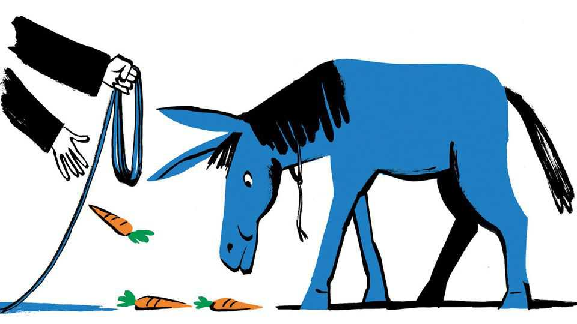
纽约市正上演着民主党官员在全国范围内遭遇的最激烈斗争，国会初选正释放出党派内部的激进情绪。在纽约州第10选区（从曼哈顿下城延伸至布鲁克林），现任众议员丹·戈德曼（Dan Goldman）是一位前联邦检察官，曾担任唐纳德·特朗普首次弹劾案的首席法律顾问。他的对手布拉德·兰德（Brad Lander）则指责他为“企业民主党人”，称其在帮助总统敛财。
在最近一次辩论中，当候选人被问及是否支持对特朗普进行第三次弹劾时，兰德的手突然举了起来。片刻后戈德曼也跟着举手，但随即暴露了他摇摆不定的立场：“但调查之后，”他说。民调显示他处于下风。在这些初选中，以色列——或者说，对以色列的强烈反对——是一个主导性议题。这一点在埃斯帕伊亚特的竞选中尤为明显，尽管他的选区第13选区横跨哈莱姆和布朗克斯西部，似乎比中东冲突更面临紧迫挑战。然而，巴勒斯坦人的困境自他大学时期起就成为其对手达里亚丽扎·阿维拉·切瓦利耶的政治核心议题。这位挑战者在哥伦比亚大学就读期间便发起运动，推动校方从以色列撤资。■
作为校友，她曾参与组织了加沙战争期间的校园抗议活动，这些抗议活动紧随2023年10月7日哈马斯袭击事件后发生。她严厉批评埃斯帕伊亚特接受来自美国以色列公共事务委员会（AIPAC）捐赠者的资金。对唐纳德·特朗普和以色列的愤怒、对现状的不满、对代际变革的急切——这些情绪在从北卡罗来纳州达勒姆到加利福尼亚州洛杉矶的民主党初选中持续发酵。在纽约，这些情绪因新任市长佐赫兰·马姆达尼以及两个左翼组织——美国民主党社会主义者（DSA）和正义民主党——而更加激烈。■
马曼达尼正努力将忠于自己的人安插进国会代表团，此举以冷酷无情的手段震惊了城市的政界人士。前选举委员会主席、现为布朗克斯蒙特圣文森特大学法学院教授胡安·卡洛斯·波兰科表示：“普通民主党人感到恐惧，因为他们知道正义民主党与DSA正在运行现代、复杂且非常有趣、激动人心的竞选活动。如果他们能在国会获得足够多的马曼达尼阵营成员，他们将成为不可阻挡的力量。”马曼达尼打破了此前据称支持埃斯帕伊拉特的承诺，转而支持阿维拉·谢瓦利耶。市长同时也在支持兰德对抗戈德曼。■
第七选区被称为“共产主义走廊”，因其聚集了大量布鲁克林和皇后区的嬉皮士。马姆达尼拒绝支持即将退休的众议员尼迪亚·维拉兹克斯的指定继任者。维拉兹克斯对政界人士说，你的行为引发了关于你是否言行一致的严重担忧——这在政界是非常、非常、非常严重的问题。她支持布鲁克林区长安东尼奥·雷诺索。马姆达尼则支持克莱尔·瓦尔德兹，这位州议会新任议员同样通过哥伦比亚大学进入政界，而这家大学似乎无意中成为近期纽约政治激进化的最大推手。瓦尔德兹曾在哥伦比亚大学视觉艺术部门任职期间成为工会活动家。■
这些选举的模板，包括Mamdani先生的，由亚历山德拉·奥卡西奥-科尔特斯（Alexandria Ocasio-Cortez）的国会竞选活动在2018年确立。招募她参选的正义民主党（Justice Democrats）发现了一个巧妙策略：由于少数民主党人参与城市初选，且多数城市大选中共和党候选人几乎毫无胜算，激进派只需动员相对较少的选民即可赢得席位。在首次初选中，奥卡西奥-科尔特斯获得的选票不足17,000张；这一数字已足以击败一位连任十年的资深议员，并撼动美国政治格局。Mamdani先生的竞选路径也遵循此模式。尽管人们高度关注他动员选民的成功，但实际参与初选的民主党人不足30%。这场初选中，Mamdani先生以13个百分点的优势赢得Espaillat先生的选区，而该地区民主社会主义协会（DSA）的增长速度最快。■
阿维拉·谢瓦利耶具备典型的候选人形象。她虽缺乏经验，但以阳光开朗和自信满满弥补。她同样拥有社交媒体上常见的极端言论历史。数年前她曾称乔·拜登为“性侵者”，咒骂卡玛拉·哈里斯，描述用美国国旗擦拭手，建议白人不应参与跨种族关系，并宣称“永远不再有警察”。她将这些推文轻描淡写地称为“过去的政治理论”。姆南达尼称她的观点“已发生转变”。民主党或许也需经历一番深刻转变。■ 《经济学人》订阅者可注册我们的Opinion通讯，汇集本刊最佳评论、专栏、特稿及读者来信。
§028 巴西的“镜像州”揭示国家未来原题：Travel Brazil’s mirror-state to see the country’s future · 板块：Americas · 栏目：美洲
从未有巴西总统候选人未获得米纳斯吉拉斯州的支持 米纳斯吉拉斯州（Minas Gerais）是巴西27个州中人口第二多的州，常被忽视。它不应被忽视。米纳斯吉拉斯州的地理环境与民族构成反映了巴西整体特征。其南部森林延伸至里约热内卢；北部干旱内陆与贫困的巴伊亚州接壤；西北部是农业重镇戈亚斯州，巴西利亚首都区坐落其中；西部毗邻富裕的圣保罗州。超过半数的2100万米纳斯吉拉斯州居民自认是黑人或混血儿——与全国比例基本相当。该州是关键的政治战场 ■
自1989年巴西结束21年军事独裁统治后首次举行民主选举以来，从未有总统候选人能在未获得米纳斯州（Minas Gerais）支持的情况下赢得总统大选。对此再清楚不过的莫过于路易斯·因纳西奥·卢拉·达席尔瓦（Lula），巴西总统，他正竞选连任，计划于10月的全国大选中角逐第四任期。2025年他8次造访米纳斯州，并选择该州作为启动全国计划的地点，该计划为贫困家庭提供补贴烹饪燃气。右翼主要候选人、参议员弗拉维奥·博尔索纳罗（Flávio Bolsonaro）同样深知米纳斯州的重要性，本月他亲自访问了该州。其团队曾考虑将副总统候选人职位提供给近期辞去米纳斯州州长职务、转而竞选总统的罗马乌·泽马（Romeu Zema）。《经济学人》跨越米纳斯州，旨在解读这个巴西的镜像州如何揭示该国的未来走向。■
若弗拉维奥失势，雅伊尔·博尔索纳罗的政治继承人很可能是来自米纳斯吉拉斯州的“米纳斯人”尼古拉斯·费雷拉（尼古拉斯·费雷拉，见图），他在2022年巴西众议院选举中当选为该州53名代表之一。这位30岁的挑衅者，身为一位福音派牧师之子，获得的选票比其他任何国会议员都多。他在拥有3300万社交媒体粉丝的视频中讽刺“性别意识形态”和“文化马克思主义”，参观萨尔瓦多的大型监狱，并兜售领导力培训课程。社交媒体是费雷拉的武器。在2022年全国大选后的数月内，激进的最高法院法官亚历山德罗·德·莫拉埃斯暂时封锁了他的账号，因其传播关于投票机的虚假信息。世界首富埃隆·马斯克挺身而出支持费雷拉，称他“勇敢”。
去年费雷拉（Ferreira）错误声称政府将对巴西流行的即时支付系统Pix的交易征税，该视频被观看3亿次，导致卢拉（Lula）本任期的民意支持率出现最大跌幅。费雷拉发布的内容具有煽动性，但其娃娃脸形象和宣称的宗教信仰扩大了他的吸引力。这令博尔索纳罗（Bolsonaro）的儿子们感到不安，他们都是政客。4月，居住在德克萨斯州的前众议员爱德华多·博尔索纳罗（Eduardo Bolsonaro）在X（马斯克旗下社交媒体平台）上发布长文谴责费雷拉，指责他“排挤弗拉维奥（Flávio）”。爱德华多批评道：“聚光灯和名声对你毫无益处。”费雷拉的政治对手则推测：“我认为他终于明白过来了，一旦尼古拉斯（Nikolas）脱离博尔索纳罗家族，他就会当选总统。”■
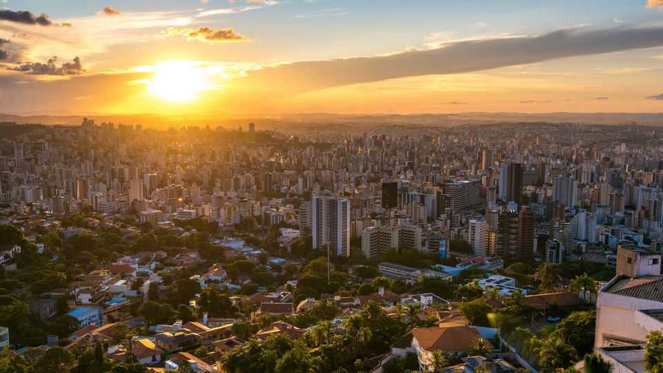
费雷拉并非唯一招惹博索纳罗不满的米纳斯吉拉斯州右翼人士。自由派技术官僚泽马（Zema）近期在一段录音曝光后批评了弗拉维奥（Flávio）。录音中他被听到向一名腐败银行家索要钱财。泽马称此举是“对正直巴西人的羞辱”。他表示博索纳罗家族“应为创建并拯救巴西右翼获得全部赞誉”，随即又补充道：“但我们清楚任何个人崇拜、对单一人物的依赖都是有害的……国家没有救世主。”这种崇拜或许正在发生变化。1月费雷拉带领18,000名粉丝从米纳斯州帕拉库图（Paracatu）出发，徒步240公里前往巴西利亚（Brasília）支持贾伊尔·博索纳罗（Jair Bolsonaro），后者因2022年图谋政变被判入狱。尽管行进途中多人遭遇雷击，他的支持者仍一如既往地崇拜他。
正如巴西右翼政客所面临的困境，经济问题同样严峻：米纳斯州代表了该国最紧迫的挑战。该州财政已濒临崩溃，主要归因于未兑现养老金支付的累积效应。利息支出几乎掏空了财政空间，使得政府难以进行其他支出。在泽马（Zema）担任州长期间，米纳斯州未向联邦政府新增债务；自2021年以来，该州已连续实现财政初级盈余。但现有债务意味着无论谁赢得接班人选举，都将不得不大幅削减开支，这无疑会损害选情。“接手这个烂摊子简直是疯了，”米纳斯州工业协会首席经济学家若昂·加布里埃尔·皮奥（João Gabriel Pio）表示，“接任者将毫无回旋余地。”同样的困境也适用于总统职位。国际货币基金组织（IMF）预计，巴西的公共债务占GDP比重将在2031年达到107%，这在很大程度上归因于目前约10%的高实际利率。■
肥厚的回报意味着巴西富裕阶层更倾向于将资金存入储蓄账户，而非用于购买生产设备、研发或基础设施建设。在巴西各州中，这种公共财政约束造成的损害在米纳斯州最为明显。该州的道路状况糟糕，巴西交通运输行业协会将其道路质量评为差或更差的比例，高于任何邻近州。米纳斯州生产着巴西40%的矿产，包括铁矿石、锡、石墨以及全球大部分铌。位于该州西南部的稀土储量丰富，这些稀土广泛用于风力涡轮机和武器制造。然而，当地经济学家哀叹，米纳斯州仍主要出口原材料，而非在当地加工以获取更高附加值。
巴西米纳斯吉拉斯联邦大学教授马尔科·克罗科（Marco Crocco）表示：“我们无需永远陷入贫困。我们不能在一天之内从开采锂矿转为制造电池。但我们需要改善教育和基础设施，加大研发投资，降低私人融资风险。”皮奥先生（Mr Pio）直言不讳：“如果我们想抓住这次机遇，就必须直面结构性问题。”即便在矿业繁荣地区，一些当地居民仍感到不满。在富含锂矿的东北部米纳斯吉拉斯州Jequitinhonha河谷，居民抱怨他们几乎看不到从地下开采出的财富。自2023年巴西最大锂矿在阿拉库阿伊镇（Araçuaí）附近投产以来，该地区出现了新商店和更多就业机会。但 councillor 丹尼洛·博尔热斯（Danilo Borges）指出，租金已大幅上涨。他的选民担心河流正在干涸，他们憎恶如今充斥房屋的矿尘。
■卢拉在本地选举中轻松胜出。“我投了卢拉一票，从不后悔。”55岁的玛丽亚·里塔·达·康塞桑（Maria Rita da Conceição Santos）说，她是塔夸拉尔塞科（Taquaral Seco）村的一位祖母，该村位于阿拉苏艾（Araçuaí）附近。“他是个出身贫寒的人，懂得穷人价值。其他人都不是！那些人只是虚有其表。”这种人气可能为卢拉赢得第四次总统任期。但这一优势并不惠及他的工人党（PT）。卢拉在2022年矿业州选举中艰难取胜，但两年后该党在市政选举中表现不佳，仅赢得该州853个市镇中的35个。一位卢拉的亲信对党派前景感到悲观。“我认为卢拉离开后，PT将分裂为不同派系——他是维系党派的粘合剂。”卢拉现年80岁。他退出政坛后，右翼势力可能在矿业州蓬勃发展，而PT则可能陷入困境。
因此，巴西的未来斗争可能不会在左翼与右翼之间展开，而是在尼古拉斯·费雷拉（Nikolas Ferreira）所代表的民粹主义怒火与泽马（Rui Zema）所倡导的技术官僚主义自由主义之间进行。■ 更正（6月17日）：本文先前版本称亚历山大·德·莫拉斯（Alexandre de Moraes）在2022年大选前暂时封锁了费雷拉的社交媒体账号。实际上，他是在选举之后的几个月采取的这一行动。订阅我们的独家简报《El Boletín》，了解塑造这一复杂地区的各种力量。
§029 哥伦比亚侨民普遍倾向右翼 《美洲》原题：The Colombian diaspora is overwhelmingly right-wing · 板块：Americas · 栏目：美洲
教堂钟声响起，人们走进教堂投票选举哥伦比亚下一任总统。玛丽亚（非真实姓名）选择了右翼民粹主义者阿贝尔多·德拉埃斯皮里埃尔（El Tigre），称他为“我们国家的解决方案”。这是她第一次投票。研究生埃斯特班则支持左翼候选人伊万·塞佩达，后者试图效仿并接替现任总统古斯塔沃·佩特罗。他表示希望“在世界上最不平等的国家之一实现平等”。玛丽亚和埃斯特班在伦敦玛丽勒bone圣保罗教堂投下选票。 ■
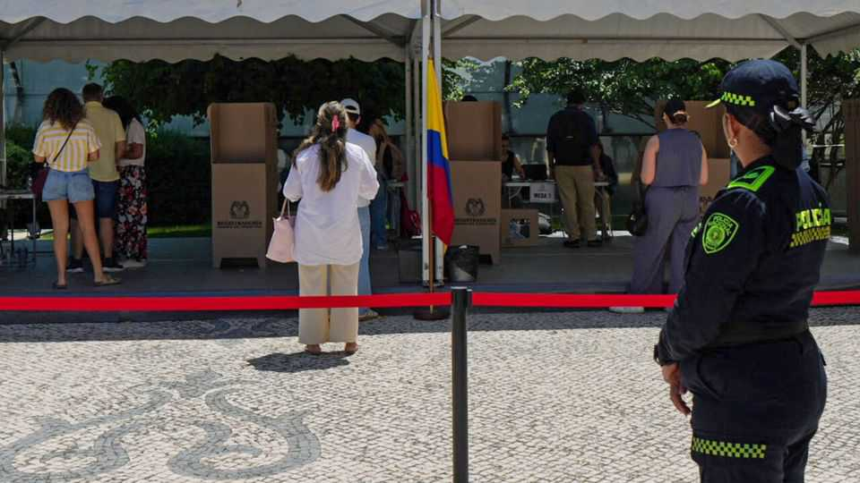
他们两人是近59万名在海外投票的哥伦比亚人中的一部分，这些选民在67个国家的253个投票站行使了选举权；投票站开放一周，直至5月31日首轮投票。哥伦比亚人只能亲自投票，并需出示哥伦比亚身份证。1962年，哥伦比亚成为拉美首个赋予海外公民政治权利的国家，当时居住在国外的公民首次获得总统选举的投票权。1991年新宪法扩大了选举权，使短期海外居住者也能参与国会选举。2002年，海外侨民在国会获得专属席位。目前，500万海外哥伦比亚人是南美各国中最大的侨民群体，其年度汇款额约占GDP的3%。■
尽管仅有四分之一选民登记投票，但2002年至2026年间登记选民人数增长了八倍，从16.5万增至140万。投票率也有所上升。2022年首轮投票中，仅31%的海外选民参与投票，而今年这一比例升至41%。国际事务研究所（Chatham House）伦敦分部的克里斯托弗·萨巴蒂尼（Christopher Sabatini）表示：“人们对两位候选人立场都十分关注，因此投票率上升。这是一场极具分裂性的选举。”首轮投票中无候选人获得多数票，因此德·拉·埃斯皮里埃尔拉（Mr de la Espriella）与塞佩达（Mr Cepeda）于6月21日展开第二轮角逐。但海外选民更倾向德·拉·埃斯皮里埃尔拉，其获得54%的海外选票，塞佩达则获得28%。哥伦比亚海外选民整体倾向右翼，但地理分布存在差异（见地图）。在美国，德·拉·埃斯皮里埃尔拉获得72%的选票，塞佩达仅得15%；在欧洲最大海外侨民聚集地西班牙，塞佩达获得43%的选票。■
密歇根大学政治社会学家莱迪·迪奥斯萨-希梅内斯（Leydy Diossa-Jiménez）表示：“你无法将哥伦比亚侨民的投票倾向与他们离境的历史原因割裂开来。”历史上，欧洲的哥伦比亚侨民曾是右翼准军事组织的受害者，而美洲的侨民则因左翼游击队的武装暴力逃离家园。萨巴蒂尼（Mr Sabatini）指出，许多哥伦比亚侨民将国家的衰败归咎于“左翼游击队，以及最近佩特罗（Petro）天真无谋的全面和平计划”。在哥伦比亚侨民集中的佛罗里达州，政治“温室效应”往往强化这些倾向。6月15日的决选投票站向侨民开放，除非其投票率大幅上升，否则恐怕难以影响这场选举。此外，他们的选票也不会特别引人注目。■
在秘鲁，海外侨民只能在选举日投票，因此海外选票自然被最后统计。这些海外选票使保守派藤森惠子（Keiko Fujimori）在6月7日的总统决选中以微弱优势胜出。相比之下，哥伦比亚侨民的选票结果则与全国大选同时公布。不过，若注册选民和投票率继续保持过去增长势头，哥伦比亚侨民或将成为这个拥有5300万人口国家中一股强大的政治力量。■ 注册获取《El Boletín》，我们的独家新闻简报，了解塑造这个复杂地区的各种力量。
§030 The Gen-Z streamer from Medellín influencing Colombia’s election原题：The Gen-Z streamer from Medellín influencing Colombia’s election · 板块：Americas · 栏目：美洲
算法而非辩论将决定该国下一任总统
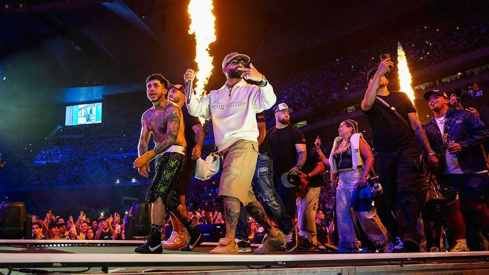
“如果巴勃罗·埃斯科瓦尔对你说‘我需要一位律师’，你会如何回应？”一些记者或许会避开向可能成为哥伦比亚下一任总统的人提出如此尖锐的问题。但西科尔（真实姓名为路易斯·费尔南多·维拉）并不回避。这位来自麦德林的25岁纹身青年自称是拉美地区最大的直播主播。右翼民粹主义总统候选人阿贝尔多·德拉埃斯皮里埃尔——一位曾为诈骗犯和准军事组织辩护的前律师——则划清界限，拒绝提及这位臭名昭著的毒枭。“我是个讲法律、讲论辩和对话的人，”他对西科尔说道。
德拉埃斯皮里拉先生并非唯一与西科尔（WestCol）会面的哥伦比亚政客。维拉先生在总统竞选期间曾从阿尔瓦罗·乌里韦的庄园向他的1500万粉丝直播，乌里韦是颇具影响力的右翼前总统；他也曾在卸任左翼现任总统古斯塔沃·佩特罗的官邸纳里尼奥宫（Casa de Nariño）进行过无滤镜直播。维拉先生开玩笑说：“我要向他请教如何才能当上总统。”这位原本与政治无关的维拉先生，却意外成为年轻哥伦比亚选民在6月21日决选中选择投票对象的关键人物。政治并非维拉先生的日常兴趣，但确实很受欢迎。5月30日，即首轮投票前一天，有约70万观众观看了他与德拉埃斯皮里拉先生长达两小时的对话。年少时因游击队被迫离开家园的维拉先生，自幼在梅德林街头长大。■
他最初因直播游戏走红，随后拓展至夜店、连锁餐厅、拳击赛事和周边商品领域。如今他与哥伦比亚雷鬼顿音乐天王J·巴尔文（J Balvin）合作推广音乐。他的成功激励了许多感到体制对他们不利的哥伦比亚年轻人。“我从未想过今天能拥有这么多手表，”他沉思道，“与你做生意的人会更认真地对待你。”播客主持人如乔·罗根（Joe Rogan）在2024年美国大选期间推广了这种温馨而坦率的访谈形式。维拉（Mr Villa）的运作方式与“男性主义圈层”（manosphere）精神如出一辙；2022年他因发布关于跨性别群体的言论陷入法律纠纷，而跨性别群体在哥伦比亚法律中属于受保护类别。通过维拉，德·拉·埃斯皮埃拉（Mr de la Espriella）无疑希望触达年轻选民，70%的年轻选民在2022年决选中支持佩特罗（Mr Petro）。看来效果显著。■
约60%的18至25岁选民在首轮投票中支持佩特罗的左翼盟友伊万·塞佩达。若塞佩达同意接受维拉的采访，这一比例可能更高（据流媒体平台称，他最后一刻取消了采访）。他坚持称自己的内容保持中立。以局外人身份定位自己，使他在哥伦比亚赢得了追随者，因为75%的民众表示不信任主流新闻机构。新型媒体形式定义了此次竞选活动。在哥伦比亚选举史上首次，候选人包括德·拉·埃斯皮里拉在内的竞选者使用了AI生成的视频。他攻击“老面孔”政客，强调自己的反体制立场，吸引了对腐败、低效政治精英不满的选民。相比之下，塞佩达更像一名反技术主义者。他更倾向于在广场发表演讲。■
他的胜选之路，依赖于争取中间派和首轮弃权选民的支持，正变得愈发狭窄。6月11日，他向德·拉·埃斯皮里拉提起刑事指控，称其与暴力准军事组织存在关联。批评者认为这是挽救失败竞选的最后努力。佩特罗也是塞佩达的另一道阻力，而这位即将离任的总统频繁插手更让塞佩达处境艰难。佩特罗本人也因涉嫌非法干预选举正被调查。“佩特罗不想让塞佩达获胜，”资深政治分析师米格尔·西尔瓦表示，“他想成为‘左翼唯一领袖……在街头抗议、对抗体制’。”去年一项针对哥伦比亚民众的民调显示，半数持温和立场的人表示不会支持极左或极右阵营，但实际投票中许多人却选择了极端阵营。中间派正逐渐失势。■
哥伦比亚或将见证一位民粹主义者的轰然胜利，其口号深受TikTok用户喜爱。 ■ 订阅我们的专属通讯El Boletín，了解塑造这个迷人而复杂的地区的力量。
§031 战争强化了伊斯兰共和国原题：War has strengthened the Islamic Republic. Peace could split it · 板块：Middle East & Africa · 栏目：中东与非洲
证明是政权而非人民取得了胜利。以本雅明·内塔尼亚胡和唐纳德·特朗普之名发动战争的伊朗人，被伊朗伊斯兰革命卫队（IRGC）镇压，如今几乎不被重视。当局仍以每日两颗人脑的代价处决两人——如同波斯神话中暴君扎哈克（Zahak）肩上的蛇，每日需两颗人脑来安抚。对1月抗议活动后的屠杀记忆，已让任何反抗的意愿大为减弱。与此同时，特朗普被诅咒为带来贫困而非解放。 ■
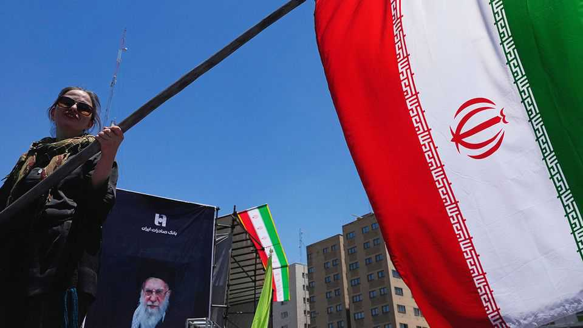
战争稳定了摇摇欲坠的政权，但和平将带来挑战。昔日的最高领袖阿里·哈梅内伊（Ayatollah Ali Khamenei）已不复存在，他曾在各派系间调停。目前，那些曾帮助精英阶层团结的外国攻击者也暂时消失。取而代之的是特朗普的提议：一项可能为伊朗伊斯兰共和国带来数十年来最大收益的协议。对于一个贫困国家而言，这一前景极具诱惑力，却也正将务实派与理想主义者分道扬镳。务实派的领军人物是议会发言人穆罕默德·巴盖尔·加里巴夫（Mohammad Bagher Ghalibaf），他曾是伊斯兰革命卫队（IRGC）指挥官，也是伊朗寡头集团的盟友。他与总统马苏德·佩泽希安（Masoud Pezeshkian）及外长阿巴斯·阿拉奇（Abbas Araghchi）共同倡导这项协议，称其为“通向最终胜利的巨步”。加里巴夫与美国副总统J.D. 弗兰斯（J.D. Vance）于6月14日远程签署协议，随后特朗普与佩泽希安分别在协议上签字。■
加利巴夫的政治演变令人瞩目。作为伊斯兰革命卫队指挥官时，他曾于1999年吹嘘骑摩托车镇压示威者。但自2005年首次参选总统以来，他转而寻求中产阶级支持，试图赢得一个从未信任过他的群体。一位伊朗分析人士称，他如今希望继承哈桑·鲁哈尼和阿克巴尔·哈希米·拉夫桑贾尼的衣钵，这两位前总统曾试图将伊朗向西方开放。加利巴夫的盟友认为，经济现实已无其他选择。他们警告称，若再爆发战争，伊朗的石油基础设施可能遭彻底摧毁。国家财政因原油出口收入暴跌而陷入瘫痪。佩泽希基安政府在维持电力和供水方面超出预期，但夏季停电仍不可避免。许多安全部门人员因警察局无法运作，如今只能在车内办公。■
任何进一步削弱中央权威都可能引发动荡。加里巴夫的盟友还暗示他有更宏大的目标。随着哈梅内伊的去世，将军们开始主导，排挤长期以来占据主导地位的宗教领袖。即便在战争爆发前，女性必须佩戴头巾的规定已逐渐放宽。在德黑兰富裕地区，短裤和背心已成常见装扮。与沙特王储穆罕默德·本·萨勒曼的比较屡见不鲜，后者曾削弱宗教警察并放宽保守社会规范。一些人乐观地认为政治局面正在打开。改革派提出应拆分宗教领袖的免税基金会——这被视作现代版的修道院解散。海外资深反对派人士称他们已收到个人邀请返回。去年六月战争结束后，政权无视呼吁将战时团结精神转化为和解与改革努力。■
大规模抗议随即爆发。一位被邀请回国的异见人士坚持认为，这次可能已经吸取了教训。他们或许会失望。至少目前，强硬派仍占据主导地位，他们因所谓的战胜美国和以色列而感到狂喜。他们的狂热支持者从战争一开始便带着扩音器，动员招募人员并阻止抗议者回归，此后一直未离开。对他们而言，加利巴夫与他们视为导致领袖（政治与精神领袖）死亡的人达成的协议是背叛。在集会上，他们公开点名谴责加利巴夫，嘲笑他仍相信特朗普的天真。他们警告称，这项协议是另一场特朗普式的诡计。有人表示，这次总统希望伊朗重新开放霍尔木兹海峡，补充全球耗尽的石油储备。一旦市场重新补给，他们担心特朗普将再次出手。■
为何要在此时定夺，他们问道，当美国已陷入困境？哪一派系最终胜出，很可能取决于目前大多隐藏在公众视野之外的权势人物。在“法基赫统治”（Velayat-e faqih）体制下，伊斯兰共和国的统治权归于宗教法学家，最高领袖被设计为隐遁伊玛目（Hidden Imam）的代表，什叶派信徒相信这位伊玛目于九世纪进入隐遁状态。穆斯塔法·哈梅内伊（Mojtaba Khamenei，已故领袖之子及继任者）也处于隐匿状态。他接任领导职位满百日后，甚至尚未有一张照片能证明其仍在人世。革命卫队（IRGC）负责人艾哈迈德·瓦希迪（Ahmad Vahidi）及数位高级将领仍隐匿于地下。目前，格哈利巴夫（Mr Ghalibaf）及其幕后交易者似乎仍享有支持。格哈利巴夫上月以超过80%的议会（MPs）议员投票当选议长。
强硬派代表赛义德·贾利利（Saeed Jalili）据称已被移出国家安全委员会，这是国家战时决策机构。永久停火将使领导层能够现身并巩固控制。一位分析师表示：“你可以用九人打加时赛，但不能每场比赛都如此。”如果美国提供实质性的财政援助，伊朗可能难以抗拒。上世纪80年代伊朗接受与伊拉克停战协议后，不得不安抚因认为政府出卖革命理想而愤怒的革命基础。类似计算或许会再次出现。■ 注册中东简报（Middle East Dispatch），每周获取对这一复杂且影响深远地区的重要信息。
§032 一个脆弱的协议将阻止轰炸并重启石油生产：中东与非洲比其他选择更好原题：A flimsy deal will stop the bombing and restart the oil · 板块：Middle East & Africa · 栏目：中东与非洲
这是一个既具有历史意义又显得平淡无奇的时刻。6月17日凌晨，唐纳德·特朗普与马苏德·佩泽希安（见图）签署了备忘录（Mou），称此举将终结两国间的战争。在47年的敌对状态中，美伊两国总统首次以个人名义签署协议。然而，他们分别在凡尔赛与伊朗签署协议，相隔千里。这是一项内容极为简略的协议，仅有寥寥数页。它将暂停而非终结敌对状态，最终效果仍取决于后续发展。■
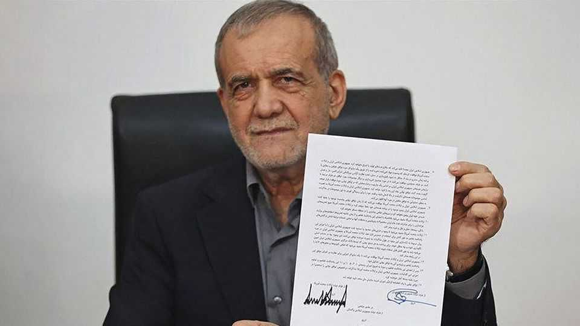
特朗普政府希望重塑美国与伊朗长期紧张的关系。但中东地区，充满希望的愿景往往很快就会撞上现实的壁垒。经过数日拖延，美国终于公布了协议文本。关键条款一如预期：霍尔木兹海峡应重新开放，美伊将延长停火协议，并启动60天谈判，以达成最终限制伊朗核计划的协议。伊朗将获得有限的经济利益：包括制裁豁免权允许其石油出口，以及释放存于外国银行账户中的数十亿美元资金。所有细节均模糊且存在争议。美国坚持只有在伊朗满足未来60天内的特定承诺后才会解冻其资产。但无人知晓这些承诺具体内容。■
备忘录提到一项计划，设立至少3000亿美元的重建基金，由区域伙伴共同开发。海湾官员表示，他们对向过去数月曾轰炸自己的国家投入资金并不热衷。同样，伊朗在备忘录中承诺绝不会制造核武器。这一承诺对特朗普先生而言似乎至关重要，他总在各种场合强调这一点——尽管类似的承诺曾出现在美国与伊朗前一协议的第一段，而该协议已于2018年被他放弃。然而，若缺乏涵盖全面的协议，对伊朗核计划施加真实可验证限制，这一承诺便毫无意义。因此，这项协议最多只能让石油重新流动。短期内，这应能为双方提供遵守协议的动机。特朗普需要在11月中期选举前压低汽油价格。伊朗则需要收入来应对日益恶化的经济危机。■
在接下来的两个月之后，三种截然不同的情景似乎都有可能发生。最乐观的情景是该地区发生深刻变革。“我们过去几周取得的进展中最令人振奋之处，”美国副总统J.D. 罗恩（J.D. Vance）激动地表示，“是听到伊朗人说：‘我们与美国47年来打交道的方式是个错误，让我们尝试其他方法。’”在这一情景中，伊朗将同意暂停铀浓缩活动，允许国际原子能机构无限制访问核设施，并停止试图输出其革命。美国将解除数十年的制裁，使伊朗重新融入全球经济。与其试图推翻政权，特朗普将为其提供机会，使其像其阿拉伯海湾邻国一样：专制是事实，但富裕且稳定。或许有几位伊朗官员分享特朗普的这种想法。■
但一位海湾外交官表示：“我不认为革命卫队梦想将德黑兰变成迪拜。”另一种可能是，临时协议最终演变为更持久的安排。60天的谈判和停火期可通过双方协商无限期延长。伊朗可继续出售石油，美国则可尝试从远程监控伊朗的铀储备。但这种状态似乎并不稳定。美国及其盟友仍将对伊朗是否秘密发展核武器抱有合理担忧。伊朗仍将面临其他制裁的重重压力。重建基金将无从谈起。海湾国家担心这会使他们陷入无尽的伊朗勒索之中。最糟糕的前景是：该备忘录仅是中场休息而非终场哨声。战争结束于交战双方认为代价超过潜在收益之时。■
今日，伊朗领导人踌躇满志。但一场漫长的停火期将迫使他们直面一个因冲突与崩溃而筋疲力尽的民众。国际危机集团（International Crisis Group）的阿里·瓦兹（Ali Vaez）表示：“一个过去数月一直处于战时状态的体制，现在必须尝试在战后恢复治理。”在缺乏持续制裁缓和的情况下，这一任务将异常艰难。政权或许会将新一轮冲突视为迫使美国让步的手段。至于美国，它将面临一位反复无常的总统，这位总统可能在中期选举中遭遇挫败而颜面尽失。他将目光投向自己的政绩，却难觅战争成果。以色列将试图说服特朗普，伊朗欺骗了他，而特朗普则面临与奥巴马不光彩的对比。目前，该地区几乎所有人均松了一口气。尽管停火协议存在缺陷，但比起持续战争，这已是更优选择。■
然而，这场敌对关系不太可能就此终结——时间将证明这是否甚至标志着终结的开始。■ 注册订阅《中东简报》，每周获取关于这个充满魅力、复杂且影响深远地区的最新动态。
§033 伊朗经济在战争中遭受重创 需要数年才能复苏 中东及非洲 6月18日 2026年 中东及非洲 | 被轰炸的伊朗 经济复苏需数年 中东及非洲 6月18日 2026年 这项协议来得太迟——对许多伊朗人来说，远超预期原题：Iran’s battered economy will take years to recover from the war · 板块：Middle East & Africa · 栏目：中东与非洲
伊朗经济在战争中遭受重创 需要数年才能复苏 中东及非洲 6月18日 2026年 中东及非洲 | 被轰炸的伊朗 经济复苏需数年 中东及非洲 6月18日 2026年 这项协议来得太迟——对许多伊朗人来说，远超预期。美以两国的炸弹摧毁了伊朗的基础设施和工业；美海军舰艇封锁了其港口。美伊两国签署的谅解备忘录（Mou）规定，双方将在60天内就最终协议展开谈判，若伊朗配合，将获得巨额激励（甚至可能高达3000亿美元的投资）。但伊朗能获得多少援助可能成为谈判的焦点。对许多伊朗人而言，痛苦已达到顶点。上月通货膨胀率同比上涨84%，超过1月时的两倍。食品价格通胀率更是达到131%，涨幅更高。■
封锁措施也影响了进口。自4月中旬以来，3000个原本运往伊朗的集装箱在巴基斯坦港口堆积，伊朗主要农业商品枢纽巴纳尔·伊玛姆·霍梅尼港的粮食运输量同比下降40%。贫困的伊朗人不得不分批支付肉类和面包的费用。副劳动部长戈拉姆-霍斯sein 莫哈迈迪称，多达200万人失业——占劳动力的7%。5月18日，《德纳-埃克特萨德报》报道，求职网站JobVision的单个职位申请量翻倍至360份。5月下旬，总统马苏德·佩泽希安在德黑兰向商界人士表示，“当前主要对抗领域是经济和民众生计”。部分损失是自食其果。■
伊朗政权在1月抗议期间切断了大部分全球互联网访问，直到5月才开始恢复。伊朗最大在线零售商Digikala（Digikala）解雇了3%的员工。但美国和以色列对工厂、炼油厂、钢铁厂——尤其是最近伊朗最大石化综合体的袭击，造成了最严重损害。伊朗自4月以色列首次袭击该设施以来，已暂停石化出口（占其非石油出口的三分之一）。咨询公司Rystad Energy估算，仅修复能源设施的成本就高达190亿美元。鹰派美国智库“捍卫民主基金会”（Foundation for the Defence of Democracies）则将总损失预估为1440亿美元，约等于伊朗GDP的一半。随着备忘录（Mou）签署，美国应解除封锁并提供制裁减免。解除封锁是首要步骤。■
美国对伊朗的制裁已严重抑制其石油出口，并旨在切断伊朗军事精英——伊斯兰革命卫队（IRGC）的主要资金来源。航运追踪公司Vortexa表示，伊朗5月石油出口量降至每天20.9万桶，较4月下降84%。据数据提供商Kpler称，制裁协议签署前夕，伊朗可用原油储存量已达到83%的容量。霍尔岛（伊朗主要出口枢纽）的油轮装载量大幅下降，但可能很快恢复。该协议或可豁免伊朗石油运输的制裁。伊朗政权希望对通过霍尔海峡的船只收取通行费（以服务费名义征收）。但最大的回报据称是3000亿美元的投资计划，用于重建伊朗经济——相当于其年GDP规模。■
范斯（Vance）表示，如果谈判符合美国意愿，这“就是他们可能获得的东西”。里亚尔今年已贬值四分之一，但自“莫协议”宣布后有所回升（见图表）。然而，6月17日，特朗普否认美国会投资该计划（并称自己并未要求海湾国家创建此类机制）。这一提议颇具特朗普风格：只要资金流动起来，其他问题自然会迎刃而解。但即便如此，伊朗面临的制裁仍会阻碍外国投资者的参与，而美国鹰派也将强烈反对。共和党参议员林登·格雷厄姆（Lindsey Graham）将该计划比作“纳粹仍掌权时的德国马歇尔计划”。特朗普必须谨慎行事。■
伊朗大部分工业由伊斯兰革命卫队（IRGC）掌控，因此大规模投资意味着解除对政权最强硬且权力最大的派系的制裁。相较之下，十年前奥巴马政府与伊朗达成的核协议所释放的相对温和的制裁放宽，曾引发共和党批评者的强烈不满。政权或许能从特朗普式协议中获益，但该国陷入贫困的民众需求将居于次要地位。■ 编辑注：本文已更新。订阅《中东简报》，获取关于这个复杂且影响深远地区的每周简要动态。
§034 伊朗战争结束威胁以色列“光荣的失败”原题：The end of the war in Iran threatens “glorious failure” for Israel · 板块：Middle East & Africa · 栏目：中东与非洲
2月28日，数百架美以战机同时起飞，发动对伊朗的首轮打击。两国的军事合作一度紧密而高效。但随着唐纳德·特朗普与伊朗领导人达成结束战争的协议，这种合作关系已发生转变。以色列被排除在与伊朗的谈判之外，6月17日美伊签署的协议几乎未涉及以色列的任何关切。
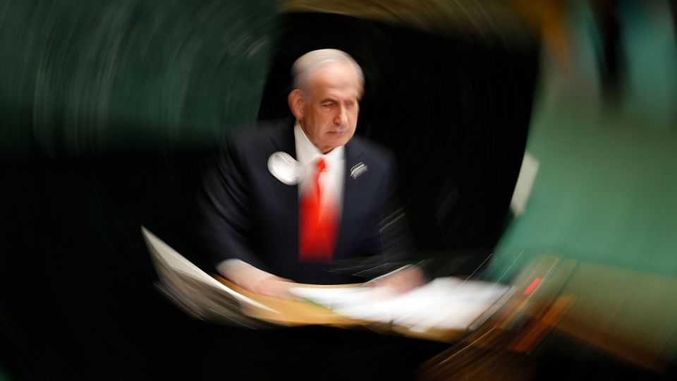
以色列的结局，正如该国驻耶路撒冷的一位外交官所描述的，“是一场光荣的失败”。这对以色列总理本雅明·内塔尼亚胡而言也是一次个人挫折。他投入了大量政治资本，试图说服美国总统，一场与伊朗的战争可能从根本上改善中东局势，甚至推翻伊朗伊斯兰共和国政权。尽管内塔尼亚胡如此声称，且伊朗遭受了严重打击，但该政权依然屹立不倒。事实上，强硬派势力反而得到了强化。这项协议并未立即触及伊朗的核计划——以色列最关切的问题。伊朗仍保有向以色列、中东其他地区乃至更远地方发射弹道导弹的能力。与美国达成的协议也未涉及伊朗的导弹计划。
这并未解决以色列另一个重大担忧：伊朗在地区范围内的代理人网络。其中最强大的真主党（Hezbollah）——黎巴嫩什叶派民兵组织——在协议中获得了新的保护。以色列曾试图在协议公布前破坏停火协议，当时它袭击了贝鲁特的目标，而真主党此前已发动更多无人机攻击。但这次袭击并未如内塔尼亚胡显然所愿打乱谈判进程，反而促使特朗普促成协议达成。以色列国防部长坚持表示，其军队将继续驻守在南部黎巴嫩所占领的“安全区”，但美伊协议规定，美伊盟友——即以色列——需结束黎巴嫩战争。以色列自此不能再依赖盟友的支持。■
美国总统在一系列采访中表示，他对昔日合作伙伴在贝鲁特发动袭击时“毫无判断力”感到“非常愤怒”，并称其为“一个非常难搞的人”。曾驻华盛顿的以色列官员表示，“问题的一大原因是，我们与美国的关系已不再像过去那样，官员们在各个层级都能坦率交流。如今一切都被内塔尼亚胡与特朗普之间的个人关系所主导。”更根本的是，以美两国在伊朗问题上的目标已不再一致。以色列国防与情报机构的一些人早在战争初期就警告高层存在这种分歧，但他们的上司被初期空袭的成功所迷惑，最终支持内塔尼亚胡继续战争。■
特朗普随后宣布结束任期。他更关注处理以色列想要推翻的政权。自那以后，以色列被冷落一旁。多年来，内塔尼亚胡将对抗伊朗视为执念。他两次率以色列发动战争，意图对抗伊朗。尽管这些行动对伊朗的核计划和导弹项目造成重大打击，但这种效果可能是暂时的。以色列损害了与美国的关键关系，以及与将它视为对抗伊朗盟友的阿拉伯国家的关系。所有这些都可能损害内塔尼亚胡在10月重新当选的前景。他难以向选民展示自己是保障以色列安全的保证者，因为他在对抗伊朗方面成效甚微。同时，他也不得不避免与特朗普公开对立。他一直强调与总统的关系，而特朗普在以色列颇受欢迎。
尽管如此，战争爆发时主要反对派领导人同样积极支持。他们的批评重点在于内塔尼亚胡未能取得成果，而非发动战争本身。“我们迫切需要一项新的伊朗政策，”一名军事规划人员表示。目前，以色列尚未看到任何希望。■ 订阅《中东简报》，每周获取关于这一复杂且具有深远影响地区的最新动态。
§035 The Iran war meant an economic crisis for Africa原题：The Iran war meant an economic crisis for Africa · 板块：Middle East & Africa · 栏目：中东与非洲
今年初人们对非洲经济持谨慎乐观态度 国际货币基金组织（IMF）预测非洲整体GDP增速将是十年来最快 通胀率正在降温 大陆似乎已摆脱了本世纪前半段两次全球危机（新冠疫情和俄罗斯入侵乌克兰）的宏观后遗症 但随后美国和以色列对伊朗发动战争 尽管已签署（某种形式的）和平协议 但这场冲突已对非洲54个国家造成严重影响 使燃料价格上涨 推动通胀并削弱消费能力
这可能引发食品价格上涨。一些地区可能面临宏观经济危机，进而引发政治危机。但主要影响将是削弱上半年以来的经济动能，使非洲缩小与世界其他地区经济差距的进程更加困难。更昂贵的燃料是这场战争最直接的影响。油价在美伊达成协议的消息公布后曾一度下跌，但能源市场完全恢复可能需要数月时间。油价仍将维持高位，尤其是与1月相比，即便低于战争高峰期。精炼产品运输可能需要较长时间才能到位，一些非洲国家的库存也十分紧张。大多数非洲政府已允许至少部分上涨的油价传导至加油站。这反映了经济现实。■
全球发展中心（Centre for Global Development，智库）表示，平均而言，各国需要花费近1%的GDP来抵消油价上涨的影响。但战争前，国际货币基金组织（IMF）曾将撒哈拉以南非洲地区的财政赤字中位数定为3.2%。超过三分之一的国家将至少15%的收入用于支付利息。油价上涨导致通勤成本上升，无论是乘坐汽车、小巴还是摩托车出租车。票价上涨意味着其他方面的可支配收入减少。更贵的柴油是非洲工业的命脉，正在压缩企业的利润空间。它为货运运营商、食品批发商和矿场的运输卡车提供动力。由于柴油在许多国家的电力生产中至关重要，因此也导致整个大陆的电价上涨。标普（S&P）认为，非洲的食品通胀是一枚“延迟引线”。■
信用评级机构认为，由于霍尔木兹海峡关闭导致的化肥价格上涨效应存在滞后，因此影响消费者需时6至18个月。许多农业企业以战前价格采购了当前种植季所需的化肥，因此对利润和食品价格的影响将延后至明年显现。若霍尔木兹海峡迅速恢复通航，或可减轻损失，但物流瓶颈及运输问题将使化肥成本维持在战前水平以上，持续至下个种植季。■
目前，全球粮食丰收正在抑制价格涨幅。“当前的情况与俄乌战争带来的挑战大不相同，”南非总统祖马的农业经济学家顾问瓦尼莱·西洛博表示，“其影响……将在2027年更加明显，并延续至2028年。”宏观经济影响将呈现多样化态势。尼日利亚和安哥拉等石油出口国将获得更高的税收收入。高金属价格将缓解刚果等国因燃料价格上涨带来的冲击。债务和通胀相对较低的国家，如坦桑尼亚，表现更为稳健。而其他一些国家则更为脆弱。6月11日发布的预测中，世界银行将撒哈拉以南非洲整体2026年经济增长预期从4.3%下调至4.0%。■
标普（S&P）指出，最易受伊朗战争冲击的五个非洲国家（其评级的20多个主权国家中）是埃及、埃塞俄比亚、肯尼亚、莫桑比克和卢旺达。这些国家均为能源进口国，均在不同程度上依赖外部融资。一位资深肯尼亚银行家指出，该国外汇储备正迅速枯竭。明年大选前夕，IMF施加的支出限制将使政府难以通过购买选票来维持支持。但今年4月，肯尼亚总统威廉·鲁托（William Ruto）已与世界银行达成一项6亿美元的新贷款协议，暗示他可能不得不寻求IMF的援助。该银行家补充道：“我们并不具备足够的实力，可以说服IMF离开。”与此同时，许多肯尼亚民众正敦促领导人采取类似行动。随着燃油价格上涨，该国爆发了致命的抗议活动，并出现了全国性交通罢工。■
更多类似事件可能发生：乌胡鲁·肯雅塔（Uhuru Kenyatta）表示，他已无余地阻止燃油价格上涨，也排除了进一步削减燃油税的可能。分析人士正密切关注一项正在议会审议的财政法案，该法案包含了一些引发2024年大规模抗议并导致当局暴力镇压的措施。塞内加尔则提供了伊朗战争政治影响的进一步例证。数月来，该国竭力筹措资金以避免违约，而国际货币基金组织（IMF）估算其债务占国内生产总值（GDP）的130%。更加慷慨的燃油补贴使这一任务更加困难。总统巴西鲁·迪奥马耶·法耶（Bassirou Diomaye Faye）已解职民粹主义总理奥斯曼·松科（Ousmane Sonko），后者拒绝提高加油站油价。由于松科仍控制着议会多数议员，一场高风险对决即将来临。伊朗战争的影响可能会进一步催化更多政治危机。■
马拉维长期缺乏硬通货用于进口汽油，导致供应短缺，黑市价格每加仑约20美元。马达加斯加作为非洲食品进口支出占GDP比例最高的国家之一，去年曾发生政变，而一次政变往往会降低再次发生政变的可能性。莫桑比克去年因选举争议引发街头抗议，如今伊朗战争的余波使民众有更多理由表达不满。这正是以M字母开头的一些非洲国家正在经历的情况。但非洲国家情况各异：其54个成员国并非都感受到相同冲击。肯尼亚学者肯·奥帕洛（Ken Opalo）认为，这是21世纪变化的结果。财政部长和央行行长们不再（主要）在危机时试图印钞，而是更加灵活审慎。■
非洲内部贸易的增长和庞大的非正式经济意味着各国在面对外部冲击时拥有一定的缓冲。南非的经验可能具有代表性。得益于高商品价格、全球利率下调以及结构性改革的初步成果，南非年初时充满期待。第一季度经年化GDP增长率为2%，表明经济复苏已初见端倪。但近期企业领袖的调查却显示信心有所减弱，部分原因在于战争的影响。南非经济研究局的Lisette IJssel de Schepper表示，这并不意味着经济将陷入衰退。但“这表明复苏势头已骤然减弱。”对政策制定者而言，令人担忧的是，非洲的经济复苏再次显示出短暂的特性。■
世界银行去年显示，撒哈拉以南非洲的经济扩张平均持续3.3年，而其他发展中国家为5.1年，富裕国家则达到7.2年。没人知道战争的影响何时能缓解，但战争可能已让非洲实现潜力变得更加困难。“单独来看，新冠疫情更糟糕，”肯尼亚银行家表示，“但作为一系列事件的最新一环，它叠加在本就脆弱的基础上，这才是问题所在。” ■ 注册订阅《Analysing Africa》，每周获取关于世界最年轻、最不为人知大陆的最新动态。
§036 中东及非洲 | 美味的jollof米饭，但并非人人皆有原题：Is the staple meal in Nigeria and Ghana becoming a luxury? · 板块：Middle East & Africa · 栏目：中东与非洲
尼日利亚人和加纳人对谁的jollof米饭更好展开长期而热烈的争论。（塞内加尔的thieboudienne，作为jollof的起源，可能更胜一筹。）更紧迫的问题是，谁的更便宜？由拉各斯的SBM Intelligence咨询公司每季度发布的Jollof指数，追踪尼日利亚和加纳两国制作这道主食所需的12种原料价格，从赋予菜肴著名橙色色泽的罐装番茄泥，到用于炒洋葱和香料的油。
■
在两国，战争期间食材价格均出现上涨。冲突爆发后，尼日利亚五口之家的一锅乔洛夫饭很快涨至30,435奈拉（约合22.4美元），相当于月最低工资的40%。自10月起，价格涨幅达20%，主要源于柴油成本上涨，而柴油是用于将番茄和辣椒从北运往南的卡车燃料。在加纳，番茄价格比战前上涨56%，大米均价上涨29%。烹饪用燃气价格也上涨31%，进一步推高成本。但两国情况随后出现分化。在加纳，政府正艰难实现从2022年12月峰值54%的通胀率重返个位数通胀，目前一锅乔洛夫饭的美元价值仍比三年前便宜。尽管其乔洛夫饭更依赖进口，但货币升值在一定程度上缓解了家庭承受的冲击。■
然而，在尼日利亚，同一类商品的美元价格却在过去一年内上涨了50%。尽管 headline inflation（核心通胀）在过去一年有所放缓，但尼日利亚统计局最新指出，物价同比上涨16%，这是今年第三次月度涨幅。尼日利亚的大多数“乔洛夫”米饭原料都是本地种植的。但糟糕的道路状况和天气因素总会在这一时期引发价格飙升，而战争局势进一步加剧了这一问题。尼日利亚更高的粮食不安全率意味着，即便是小幅、短暂的价格上涨，也可能让一些人从吃鸡肉配乔洛夫米饭变成只能勉强吃一口烟熏鱼。对于1.4亿生活在贫困线以下的尼日利亚人来说，乔洛夫米饭长期以来都是遥不可及的奢侈品。■ 注册订阅《Analysing Africa》，每周获取关于世界最年轻、最不为人知大陆的深度洞察。
§037 How Europe must respond to America’s AI warning shot原题：How Europe must respond to America’s AI warning shot · 板块：Europe · 栏目：欧洲
特朗普政府要求Anthropic公司封锁非美国人访问Fable 5和Mythos 5，这是首次有政府强制要求公开发布的前沿人工智能模型下架。欧洲必须将其视为在技术剧变、地缘政治紧张和将彻底改变人们生活方式的转型期中发出的警告信号。应对之道既非消极认命，也非退缩至保护主义。欧洲必须启动和平时期最雄心勃勃的政治议程。
欧洲应立即创造市场条件，使本国AI实验室得以启动、扩大并取得成功，首先应从资本市场改革入手，释放巨额资金，包括通过动员欧洲主要经济体的养老基金。然而，构建前沿模型将耗时数年，无论努力程度多高，仍可能面临失败。尽管支持本国严肃的前沿模型建设尝试，欧洲必须为这些尝试可能失败的世界做好准备——通过确保获取已存在的前沿技术。这意味着将访问权视为可谈判的事项，并增强谈判能力。三项政策举措迫在眉睫。首先，欧洲应发起一个AI中等强国联盟，以增强集体影响力。许多国家各自控制AI供应链的部分环节。荷兰是光刻巨头ASML的所在地。
韩国生产高带宽内存。日本在半导体制造设备领域占据重要份额。加拿大、法国和挪威拥有丰富能源。德国坐拥大量工业数据。英国则具备强大的人才储备和世界领先的AI安全技术。单独来看，任何单一优势都显得脆弱，因为技术进步可能使其过时，而美国实力也可能将其远远甩在后面。但若AI中等强国联合行动，便能获得更强的谈判筹码，进而确保获取前沿AI系统。其次，欧洲应扩大其算力份额。目前欧洲仅占全球AI算力的5%，而美国则超过75%。通过雄心勃勃的改革，欧洲国家应在五年内将份额提升至20%。这意味着将数十吉瓦的算力引入欧洲本土。■
这需要设立专门经济区，简化数据中心的审批流程，并大幅增加发电能力。同时，还需要一种“主权作为相互依存”的模式，而非“主权作为自给自足”的模式：鉴于所需资本规模庞大，且芯片供应紧张，优先满足已确认订单的美国买家，欧洲企业无法独自完成这一任务。因此，政府应使欧洲成为美国企业建设AI设施的最佳地点，以换取强有力的前沿AI访问协议，用于推动尖端科技、网络安全和军事能力的发展。并非所有国家都应采取相同的AI战略；每个国家都必须考虑自身的比较优势。英国应更加努力吸引全球顶尖AI人才汇聚伦敦，并在当地培育初创企业。荷兰应专注于协助阿斯麦公司（ASML）的发展。■
对许多人而言，计算能力是提升杠杆的快捷方式。最终，欧洲必须通过改革劳动法来维护其市场杠杆。欧盟的强盛一直依赖于其庞大的市场规模。但僵化的劳动法规会延缓新技术的采用，造成经济拖累。若不加以解决，与更具活力的美国经济之间的差距将削弱欧洲的市场力量，并危及支撑其福利模式的税收基础。目前，许多企业已因劳动法规使变革成本高昂且缓慢而受制。颠覆性人工智能只会进一步惩罚欧洲缺乏活力的现状。丹麦的“灵活保障”（flexicurity）模式允许企业采用新技术，同时通过再培训和慷慨的收入支持保护被取代的员工。冻结现有岗位将使这些岗位及其背后的公司被国外更具竞争力的同行取代。■
这三项改革是必要的，但还不够。它们是欧洲必须采取的行动，而非人们支持的理由。欧洲面临的最大挑战无法通过立法解决：构建一个积极的愿景，以凝聚社会支持这场变革。数据中心耗能巨大，创造的就业机会有限，且承载着可能带来颠覆性影响的人工智能技术。但我们要建设它们，否则将失去塑造自身未来的能力。然而，讲述欧洲可能失去什么的故事，无法推动这样雄心勃勃的议程。许多选民已经对人工智能持负面态度，他们不会忍受数年的动荡，只为避免被说成更糟糕的事物。要引导人们完成如此重要的转型，你必须告诉他们目的地在哪里，以及为何值得前往。欧洲尚未找到这个故事，它迫切需要找到。没有人会为了采用人工智能而主动采用人工智能。欧洲人有自己的生活希望、梦想和抱负。■
如何帮助他们实现这些目标？如何保护人类？如何不仅讲述工作被自动化取代的故事，还要讲述工作正在向更好的方向转变、新机会正在被创造的故事？最终，人工智能必须服务于人类。这一切不应以牺牲人工智能安全为代价。主权至关重要，正是因为一个拥有自主权的欧洲能够帮助确保人工智能安全，而一个软弱的欧洲则无法做到这一点。禁止Anthropic的前沿模型将面临诉讼、修正，甚至可能被撤销。但其暴露的依赖关系依然存在。欧洲可以选择在这项技术上构建更美好的未来，或被时代抛在身后。它必须在仍有能力的时候采取行动。■ Judith Dada是Visionaries Club的普通合伙人。本文由Daan Juijn、Stan van Baarsen、Maximilian Negele、Lily Stelling、Philip Fox、Alex Petropoulos和Michiel Bakker共同撰写。
§038 欧洲 英国脱欧使欧洲更法国化原题：Britain’s departure made Europe more French · 板块：Europe · 栏目：欧洲
在2016年6月英国脱欧公投时，许多人预测未来十年内欧盟要么分崩离析，要么加速向更紧密的联合迈进。哪一种前景取决于说话者是谁。右翼民粹主义者，包括英国脱欧阵营的成员，预测首个脱离欧盟的国家将引发连锁反应，其他成员国也将渴望脱离。而欧洲派则看到机会：随着非大陆的顽固分子（英国）离去，一个更团结的欧盟或许能形成。双方都同意，英语——不忠的阿尔比恩的语言——将不再主导布鲁塞尔。
■
截至2026年，两种情景均未实现——尽管联邦制版本更接近现实。其他任何国家都未接近脱离欧盟。这并不令人意外，鉴于多年谈判确定脱欧机制的过程彻底颠覆了英国政治。与此同时，欧盟在某些领域加深了整合。法国国家主义政策缺乏重大自由主义制衡，推动其向更深层次整合迈进。在许多方面，欧盟仍保持原貌。布鲁塞尔的英语作为通用语言比2016年更为普及。然而，与十年前相比，当前欧盟存在三大显著差异。最突出的变化体现在财政领域。2020年7月，英国正式脱欧仅六个月后，欧盟剩余27个成员国同意设立8000亿欧元（约合9280亿美元）的新冠疫情复苏基金。
这不仅标志着欧盟预算的大幅扩张，通常占GDP的1%左右。这同时也是欧盟首次以自身名义发行债券来支付支出，这种联邦化举措若英国参与谈判，恐怕会遭到阻挠。第二大变化涉及经济政策制定。脱欧后，欧盟明显转向了更具指令性的政策方向。英国曾是欧盟最坚定的自由贸易和自由派声音，领导着一个反对欧盟保护主义和过度监管的北欧集团。数十年来，英国主导着抵制法国主导的、旨在打造欧洲工业政策的方案。该术语在布鲁塞尔曾是禁忌，如今却成为欧盟“战略自主”目标的核心部分——这也是法国的又一执念。■
英国缺席决策峰会之际，经济干预主义盛行。欧盟已放宽限制各国政府对受青睐产业进行补贴的规则，对进口中国电动汽车征收关税，并试图减少对进口的不必要依赖，例如推动政府采购中加入“欧洲制造”条款。这些举措都明显不符合英国传统。另一显著变化涉及国防领域。英国曾是欧盟军事行动最持怀疑态度的成员国之一：作为坚定的大西洋主义者，他们担心削弱北约。2024年，欧盟委员会（欧盟执行机构）重组，增设国防委员（尽管该职位主要负责国防工业，而非更直接的军事事务）。即便如此，欧盟在战争相关事务上的介入日益频繁，例如直接资助运往乌克兰的武器。■
这三项演变有着共同点。它们都源于外部冲击，而非英国脱欧。刺激计划是疫情的产物；经济干预主义是对中国出口激增的回应；而北约不再被视为可靠的联盟，这既因特朗普担任美国总统，也因俄罗斯的复仇主义抬头。“英国脱欧并未引发欧盟经历的这些变化，但它影响了欧盟应对这些变化所采取的解决方案，”布鲁塞尔欧洲政策中心（European Policy Centre）智库的Fabian Zuleeg表示。一些英国的优先事项在支持者的离任后依然存续。数十年来，英国推动欧盟扩大，即便仅因更广泛的联盟可能意味着更松散的结构。如今，包括乌克兰在内的更多国家加入欧盟的前景，似乎比以往任何时候都更接近。■
在某些领域，该集团正走向保护主义，但同时也签署了贸易协定，包括与南方共同市场（Mercosur）的协议，后者包含巴西、阿根廷等国。作为成员国，英国支持该协议，法国（尤其是其农民群体）则持反对态度。单一市场也受到关注。这是英国的另一项执念，它常将欧盟视为一个带有烦人附加条款的自由贸易区。若英国留在欧盟，它将支持布鲁塞尔深化服务单一市场的努力，并逆转多年过度监管。部分自由主义优先事项得以延续，是因为英国从未像它自认为那样孤立。许多国家共享其理念：波罗的海国家和中欧国家在防务领域，北欧国家和荷兰人在自由贸易领域，爱尔兰则在大西洋主义上。■
北欧国家接过英国的接力棒，推动削减欧盟预算的论调。德国和荷兰都希望确保联合借贷机制只是一次性举措。但没有了曾经是欧盟第二大成员国的英国，这个自由化集团往往只能在进行后卫战。或许对脱欧进程影响最大的是欧盟的士气。欧盟在四年多的脱欧进程中每一步谈判中都占上风。这使欧盟在面对后来的危机——无论是新冠疫情还是乌克兰冲突——时更加自信。然而，英国欧盟代表团的自嘲式幽默依然令人怀念，甚至在他们的前意识形态对手中也是如此。英语依旧存在：一个已脱欧国家的语言，传达着它从未同意的政策。■ To stay on top of the biggest European stories, sign up to Café Europa , our weekly subscriber-only newsletter.
§039 欧洲的可怕新空战 乌克兰原题：The terrifying new air war in Ukraine · 板块：Europe · 栏目：欧洲
乌克兰民众在周一清晨醒来，空气中弥漫着熟悉的航空燃油、火药和血腥味。俄罗斯最新一轮袭击动用了611架无人机和70枚导弹，目标直指基辅。首都的佩彻尔斯基修道院复合体（Pechersk Lavra，联合国教科文组织世界遗产地）遭到当地当局称作直接打击的袭击。其他地区的主要目标似乎是军用生产设施和电力基础设施，但如往常一样，部分导弹误入居民区。八栋住宅楼被击中。基辅至少有五人死亡，三十余人受伤。哈尔科夫至少有五名应急人员在一次刻意实施的“双重打击”中遇难。
死亡人数持续攀升，延续着令人不安的趋势：五月成为自2022年以来最致命的月份。日益激烈的空袭战在一定程度上反映了俄罗斯在地面作战中日益加剧的困境。自2025年底以来，乌克兰以无人机为先锋的部队已能比莫斯科的征兵速度更快地杀伤并重创俄军士兵，导致其推进速度大幅放缓，甚至在某些情况下出现小幅逆转。近陷入僵局的局势正将战争重心从战壕转向后方的工厂和补给线。双方则各自利用手中现有的工具进行应对。乌克兰优先发展中程无人机的非对称作战，以新型精确武器威胁俄军补给路线，最新装备的无人机已具备半自动化能力。这导致被吞并的克里米亚出现燃油短缺。■
俄罗斯方面则选择更猛烈、更残酷地轰炸乌克兰城市。其目标不仅限于军事层面，还包括心理层面：瓦解当地民众的士气，以及削弱外国盟友对乌克兰防御能力的信心。5月末，俄罗斯外交部曾敦促外交官撤离基辅，但截至目前，无人响应。对乌克兰防空部队官兵而言，这样的夜晚愈发紧张。在最严峻的时刻，成群结队的无人机和导弹让雷达屏幕化作一片红点海洋。“就像门将同时面对十颗球”，一名军官形容道，“你只有两只手臂和两条腿，却不知如何才能撑过去。”即便如此，他们的表现依然稳健。平均每个夜晚，乌克兰都能拦截超过90%的来袭无人机和巡航导弹。
拦截无人机主要由本国制造，正在有效遏制伊朗Shahed无人机的攻击，后者数量屡创新高，常达数百架之多。但反弹道拦截器短缺使乌克兰陷入对弹道导弹的苦战，后者速度远超无人机。在最近的袭击中，约三分之二的导弹成功突破拦截。乌克兰可用的拦截系统中，仅美国制造的Patriot系统能可靠拦截弹道导弹。三年来乌克兰已彻底改变该系统的使用方式：发射器在俄军发现前即发射并移动；电池由更少发射器供电，机动小组则“伏击”了误判距离的俄军战机。美国国防部甚至派驻团队赴乌观察其操作方式。但拦截器短缺迫使操作员在拦截目标与放行之间做出艰难抉择。■
自伊朗战争爆发以来，美国及其海湾盟友以惊人的速度消耗着爱国者导弹库存，加剧了本已严峻的全球短缺。新生产线预计数年内难以显著缓解这一局面。乌克兰初创企业Fire Point（火点）声称正在研发新型反导导弹，但业内专家普遍认为其短期内难以奏效。俄罗斯则趁机强化其压倒性的导弹优势。乌克兰的导弹工程体系在苏联解体后遭俄美两国联手拆解，而克里姆林宫则持续推进其导弹设计体系和生产线建设。
今年乌克兰军情部门估计，俄罗斯将生产约700枚伊斯坎德尔（Iskander）地面发射弹道导弹，同时制造60枚空射弹道导弹（Kinzhal）和30枚高超音速巡航导弹（Zircon）。针对基辅的联合袭击今年保持每周约一次的频率，但弹道导弹和高超音速巡航导弹在袭击组合中的占比正在上升。乌克兰将自身导弹短缺转化为优势，转而依靠大量使用更简单的无人机和巡航导弹发动攻击。其远程无人机突袭已取得成效，成功打击俄罗斯境内纵深目标。六月初，乌克兰对普京在圣彼得堡举行的年度经济展示活动中的港口发动袭击，令普京颜面尽失。然而尽管俄罗斯防空体系存在漏洞，提供越来越多攻击机会，但大规模作战仍效率低下。■
仅有一小部分武器能突破俄制防空系统，主要为时速超过350kph的高速导弹。成功率从2%到35%不等，具体取决于导弹型号。乌克兰迫切希望重返能批量生产弹道导弹和先进巡航导弹的国家行列，这类导弹更难拦截且打击威力更大。乌克兰至少有两款弹道导弹处于测试阶段。Sapsan/Hrim-2（皮夫登马什）由苏联时期乌克兰火箭制造中心皮夫登马什研发，已研发数十年，但因腐败和俄罗斯渗透而进展缓慢。fp-7是Fire Point公司开发的更小型、射程较短的项目，结合了西方新型航电系统与现有苏联机翼设计。后者可能更接近量产阶段。但生产足够突破俄制防空系统的导弹并非易事。■
火箭远比无人机复杂，从引擎到终端制导电子设备都需要极高精度。让飞行器飞得远是件事，但要让它精准打击目标则更难。融资连续生产可能是最困难的部分。“你不能今天造铁锹明天造火箭，”前乌克兰海军副参谋长安德里·里岑科（Andriy Ryzhenko）说。“乌克兰确实有火箭学校，但我们的技术停滞了40年。”乌克兰距离实现目标有多近，取决于你问谁。泽连斯基在接受英国媒体采访时表示，乌克兰“非常接近”用弹道导弹威胁克里姆林宫。若属实，战争形态或将发生改变。远程乌克兰导弹可威胁俄罗斯军事工业和后勤体系，遏制俄方对乌克兰城市进行无差别打击。
但一位在军火行业有丰富经验的从业者（其无人机曾抵达圣彼得堡）敦促人们保持现实预期。他称：“我们最乐观的期待也不过是仿制导弹”——即由西方零部件拼凑而成的导弹。一位高级官员则淡化了对俄式“导弹生产线”短期内实现的期待。近期风险在于俄罗斯可能进一步升级冲突。它可能使用更具破坏性的武器，或对乌克兰政府和民众发动攻击，毫无克制的意图。乌克兰正为新一代配备中国引擎的喷气式“沙赫德”无人机做好准备，这些无人机预计从10月起将占其无人机舰队的80%。新型无人机飞行速度更快，现有拦截无人机难以应对，将极大削弱乌克兰的防空能力。乌克兰主要城市面临更严重的破坏。历史表明，这种破坏不会动摇该国的抵抗意志。■
但它确实能让生活变得异常痛苦。■ 要掌握欧洲最重要的新闻动态，请订阅我们的周度专属简报《Café Europa》。
§040 德国左翼党Die Linke赢得年轻一代支持原题：Germany’s left-wing Die Linke party has won over the young · 板块：Europe · 栏目：欧洲
欧洲
“默茨……舔蛋……”德国左翼党（Die Linke）年轻领导人海迪·里希尼克（Heidi Reichinnek）高喊。她的年轻观众们回应道：“蛋！”随即爆发出笑声和欢呼。要求德国总理弗里德里希·默茨（Friedrich Merz）“舔蛋”（即睾丸）可不是德国政界高层常有的举动。但这位在社交媒体上拥有大量粉丝的里希尼克，左臂纹着共产主义女英雄罗莎·卢森堡（Rosa Luxemburg）的图案，正是极右翼承诺掀起一场“炽热的社会主义夏天”抗议浪潮的主因之一。
■
民调显示其支持率约在11%（见图表），希望超越处境艰难的社会民主党（SPD）。SPD是默茨领导的基民盟（CDU）的联合政府伙伴。粉丝安托妮亚表示：“用年轻人的语言说话并不容易，但海迪似乎能与我们产生共鸣。”仅仅18个月前，左翼党（Die Linke）还濒临消亡。与明星人物萨拉·瓦根克内希特（Sahra Wagenknecht）的激烈分裂，使其元气大伤并失去众多议员。在曾是其核心票仓的东德地区，选民要么逐渐凋零，要么转向极右翼政党德国另类选择党（AfD）。■
得益于精心组织、纪律严明的竞选活动，以及默茨先生（Mr Merz）不明智地与德国另类选择党（AfD）共同投票支持反移民措施，左翼党（Die Linke）在数周内支持率翻三倍，2025年2月大选中获得9%选票，会员人数更是超过两倍。其成功成为此次竞选中最出人意料的故事。据该党竞选总指挥雅尼斯·埃林格（Janis Ehling）表示，“我们的选民和会员群体彻底改变了。”左翼党变得更加西化、女性化，并且年轻化，成为德国24岁以下群体中最受欢迎的政党。丽希内克女士（Ms Reichinnek）的粗俗演讲发表于柏林的“不跟随联邦国防军”（Unfollow Bundeswehr）活动，该活动旨在反对潜在重新引入征兵。现场许多支持者尚未成年，无法投票。■
成员激增使德国左翼党（Die Linke）发生了转变。该党成立于2007年，由东德共产党旧部与社会民主党（SPD）的一个分裂派系合并而成，如今已演变为一个不同的政党。洛伦·巴尔霍恩（Loren Balhorn）表示，新成员的政治教育呈现出“非常在线化且极具美国特色”的特点。他是左翼期刊《Jacobin》德语版的编辑，也是该党的成员。但转型过程中也伴随着阵痛。围绕加沙问题的争论尤为激烈。一些资深成员因认为党内存在反犹主义倾向而选择退出。该党内部的裂痕将在本周末于波茨坦（Potsdam）举行的年度代表大会上受到考验。一些争论将如往常般出现，例如议员是否应限制自身薪资。但随着州级选举临近，最艰难的辩论或许将聚焦于该党应定位为一个拥有政治翼派的抗议组织，还是应以权力竞争者的姿态出现。■
这一问题在德国东部再度凸显，当地德国另类选择党（AfD）的强势崛起挤压了其他政党组建可行联盟的空间。基民盟（CDU）也拒绝与左翼党（Die Linke）结盟，但有时仍需其选票以维持执政地位。这对左翼党内部部分成员而言难以接受，他们不认为自己的职责是维持保守派掌权。但另一些人则认为，对抗AfD才是重中之重，即便他们试图吸引该党的选民。AfD可能在9月6日投票的东部州萨克森-安哈尔特州赢得绝对多数。若未能实现，则左翼党大概率需参与选举基民盟领导人。柏林的前景则更为明朗，该州选举将在两周后举行。在那里，碎片化的选票为左翼党赢得左翼多数提供了机会。■
其标志性政策——从企业房东手中征用住宅房产——对绿党和社会民主党（SPD）中的一些人颇具吸引力，这两个党派正是其寻求联合执政的伙伴。一些企业对此深感忧虑。左翼党（Die Linke）的所有成员都能一致反对冷酷的保守派，而默茨政府也乐于配合。该政府希望削减福利和医疗支出，而一旦由政府指定的委员会本月发布报告，养老金问题将引发一场激烈的争论。左翼党议员卡特琳·盖贝尔（Kathrin Gebel）承诺将带来“一场炽热的社会主义抗议夏季”。■ 要掌握欧洲最大新闻，请订阅我们的周度专属简报《Café Europa》。
§041 阿尔巴尼亚火烈鸟抗议运动直指唐纳德·特朗普女婿原题：Albania’s flamingo protests target Donald Trump’s son-in-law · 板块：Europe · 栏目：欧洲
正如去年，爱迪·拉马（Edi Rama）顺利连任阿尔巴尼亚总理，开启第四任期。然而近几日这位昔日篮球明星、平日阳光开朗的总理却显得愈发焦虑。自5月31日起，每天都有数千名抗议者走上街头，反对涉及贾里德·库什纳（Donald Trump’s son-in-law）的豪华海滩开发计划。由于这些项目威胁到脆弱的潟湖生态，抗议活动被称作“火烈鸟革命”。抗议者表示，环境威胁和腐败风险如此严重，总理爱迪·拉马应立即辞职。
阿尔巴尼亚媒体自2024年起开始报道库什纳及其妻子伊万卡·特朗普计划在该国南部海岸开发两个豪华度假村的计划。其中一个项目位于纳尔塔泻湖，这里是维约萨河注入亚得里亚海的保护性生态区；另一个则位于附近的萨赞岛，该岛曾是军事基地。纳尔塔泻湖栖息着火烈鸟、鹈鹕和蚊子，而萨赞岛缺乏淡水，岛上及周边海域布满未爆炸弹药。5月31日，工人开始在泻湖海滩拉起警戒线，5月30日，抗议者与安保人员在该地点发生冲突，引发首都地拉那更大规模的抗议活动。阿尔巴尼亚媒体正调查开发中的纳尔塔土地所有权及取得方式。除库什纳外，两名居住在卡塔尔的叙利亚兄弟也被牵涉其中。■
阿尔巴尼亚投资者中包括一位权势显赫的寡头。6月12日，阿尔巴尼亚独立反腐败机构发布了针对一名居住在迈阿密的阿尔巴尼亚人的逮捕令，指控其涉及沼泽区土地证欺诈。EcoAlbania组织负责人奥尔西·尼卡表示，沼泽区的暴力事件是引爆长期积怨的导火索。他指出政府普遍缺乏“透明度和问责制”：2024年，保护区域相关法律悄然修订，允许在区内建设豪华度假村。营销高管迪尔·格拉兹达尼表示，抗议活动分散，“人们从LGBT权利谈到鹈鹕权利”。但抗议者均要求逮捕拉马先生——以及主要反对党领袖萨利·贝里沙。有人称此次抗议是Z世代的反抗。■
贝里沙于1992年首次当选阿尔巴尼亚总统。他与拉马长期主导阿尔巴尼亚政坛，以至于40岁以下的人无法回忆起没有他们统治的日子。"他们把我们所有人都视为老派且必须被取代的既得利益集团，"拉马的朋友说道。拉马在社会主义党内部没有面临重大挑战，"他只有一群仆从，而没有真正的合作者，"记者盖尔日·埃雷巴拉说。至于贝里沙，阿尔巴尼亚反腐机构正以腐败罪名起诉他。（2021年美国对贝里沙实施制裁，但2023年6月11日，国务院以"重大国家利益"为由撤销了制裁。）其他被腐败指控的政客包括地拉那市长和拉马的前副总理。所有人均否认相关指控。
抗议者从自由派反腐败活动人士和环保主义者，到呼吁建立包括科索沃在内的“大阿尔巴尼亚”的民族主义者，各色人等齐聚一堂，共同反对本国政治精英。他们能实现什么尚不明确。一些人认为这与近年来震撼塞尔维亚的抗议活动相似。那些抗议最初因担忧拟建锂矿对环境的破坏而爆发，随后演变为反对库什纳先生（Kushner）提出的将贝尔格莱德历史地标改造成豪华酒店的计划（该计划已作罢）。正如塞尔维亚的情形，阿尔巴尼亚的新抗议运动也以年轻人为主导。他们对肆意挥霍财富的精英阶层表达不满。纳尔塔泻湖的火烈鸟为他们提供了鲜明的粉红色象征。但缺乏强势领袖和具体计划的抗议活动最终可能收效甚微。■
要掌握欧洲最重要的新闻，敬请订阅我们的周度专属简报《Café Europa》。■
§042 欧洲人应学会爱上空调原题：Europeans should learn to love the air-conditioner · 板块：Europe · 栏目：欧洲
美国人和欧洲人在许多问题上争论不休，从医疗政策到持枪礼仪。但每到夏季，他们互访时总会出现一个更隐晦的分歧。欧洲游客抱怨美国商店和餐厅过度制冷，连外套都得穿；而回到户外，眼镜还会起雾。美国游客在欧洲度假时则期待凉爽舒适，却常因许多老建筑需要他们忍受酷热而变得烦躁。这种分歧源于气候与文化的双重影响。
■
在通用电气公司开始使用循环化学物质进行降温之前，南欧地区早已适应了高温。传统房屋中，白色外墙和遮阳庭院能有效降温，清晨打开窗户通风，午后则用百叶窗阻挡烈日，午睡习惯则让人们避开最炎热的时段。南欧人认为，被过度呵护的美国人并不懂得如何自然应对酷暑。与此同时，北欧地区则大多免受高温困扰：六月的气温甚至足以让斯堪的纳维亚人穿上毛线衫。顽固的北欧新教徒们认为，为几次高温天气购买空调是昂贵的环境罪过。如今，气候变化正考验着这些观念。欧洲预计将迎来一个酷热的夏季，部分原因在于厄尔尼诺现象的影响。■
目前，热浪每年导致欧洲大陆约17.5万人死亡，联合国估计。然而，那些认为发达国家生活方式是全球变暖主因的欧洲人，可能会因为空调的使用而感到碳排放内疚，或在家中安装空调。他们大可不必如此担忧。欧洲高温地区可再生能源的快速发展意味着，适度调低室温对冰川融化影响甚微。以西班牙为例，过去十年太阳能装机容量增长近十倍。在塞维利亚酷暑难耐的读者可通过apps.electricitymaps.com查询：6月10日，西班牙每千瓦时电力仅产生86克二氧化碳当量，而美国佐治亚州则高达442克。
在一个阳光明媚的夏日正午，西班牙约10%的电力来自化石燃料；约半数来自太阳能。葡萄牙表现同样出色，而法国更胜一筹，得益于其数十座核电站。意大利则相对落后，约30-40%的电力依赖天然气。但其每千瓦时二氧化碳排放量高达224克，相较于美国大部分地区，显得格外环保。并非所有欧洲国家都能为此自豪。波兰仍严重依赖煤炭，其电力结构与美国相当糟糕。德国2010年仓促淘汰核能的决定，使其电力结构转向煤炭和天然气，每千瓦时二氧化碳排放量是西班牙的三倍。英国则因天气变化，电力排放量介于意大利与伊比利亚半岛之间。还有一些意外的亮点，如阿尔巴尼亚，有时可实现100%的水力发电。■
拉脱维亚是波罗的海国家（Baltics）中最环保的国家，这得益于其比预期更高的太阳能发电量。撇开气候道德的考量，欧洲人普遍担忧如何负担空调制冷的费用。美国人比欧洲人富裕约三分之一，而家庭用电成本仅为欧洲的一半。即便中产阶级欧洲人也担心因突发的地缘政治危机（如伊朗战争）导致的能源价格突然上涨。然而，欧洲家庭的面积通常小于美国，平均用电量仅为美国的三分之一。此外，太阳能热潮使电力不仅更环保，而且在炎热晴朗的午后更便宜。将洗碗机设定在夜间运行（电价通常在晚上9点左右达到高峰），可腾出预算在睡前为住宅降温。智能电表让这种需求调节变得更加容易。■
精明的政府会提供资金使老旧房屋实现节能改造，这往往能实现自我投资回报（前提是避免意大利“Superbonus”计划的错误：未核实改造工程是否实际落实）。伊朗战争推高了化石燃料价格，但欧洲部分地区（尤其是法国和西班牙）电价涨幅远低于此。这体现了明智的政策。乌克兰战争后，许多欧洲人不仅削减了对俄罗斯天然气的使用，更普遍降低了对其依赖。脱碳速度最快的国家已获得最大收益。选民或许应考虑采取革命性举措，奖励那些做出正确决策的政客。他们最可能推动欧洲未来所需的大规模电力产能扩张。当然，欧洲仍面临能源短缺问题。
欧洲必须推动工业电气化以应对中国竞争并扩大数据中心规模（远逊于美国），否则人工智能革命可能令其沦为附庸。这意味着需建立更互联的电力市场；法国应允许其核电站与西班牙太阳能农场竞争。这意味着加速电池储能建设、升级电网并大幅增加可再生能源。在这一方程式中，增加些许国内空调使用量不过是微不足道的误差。对近年来因支持率下滑而备受困扰的环保政客而言，呼吁民众在空调前“冷静”可能听起来像是投降。然而，这恰恰是需要翻转的剧本。正是由于气候意识政府推动欧洲退出化石燃料，该大陆的电力正变得对地球危害更小且更便宜。■
随着全球变暖，欧洲的升温速度远超全球其他地区。欧洲的穷人和富人将越来越多地使用空调，既为了提升生活舒适度，也在极端情况下挽救生命。那些想硬撑过夏天的人可以自由选择。但目标应是让廉价、清洁的空调普及到每个人。■ 订阅者可注册《经济学人》意见电报，汇集本刊最佳领导文章、专栏、客座评论及读者来信。
§043 欧洲购买未来 美国建造未来 财经 | Free Exchange原题：Buys the future, America builds it · 板块：Europe · 栏目：欧洲
欧洲人并不常去美国度假：距离太远，如今又太贵。除了世界杯期间。随着球迷们今年夏天追逐各自球队穿越美国，他们开始发现乡村音乐、牧场沙拉酱——最引人注目的是美国郊区的普遍富裕。一位德国网友惊叹道：“这他妈的是加油站”，他第一次见到布西（Bu-cee’s）连锁的德州巨型休息站。吸引欧洲游客的美国财富令欧洲精英感到不安。曾经平起平坐的美国，似乎正在加速超越。备受尊敬的意大利元老马里奥·德拉吉（Mario Draghi）称欧洲的停滞是“存在性挑战”。
因此，一场关于经济指标的学术争论背后暗藏高风险。一方由美国诺贝尔奖得主保罗·克鲁格曼（Paul Krugman）领衔，另一方则由法国经济学家菲利普·阿吉翁（Philippe Aghion）和西班牙经济学家路易斯·加里卡诺（Luis Garicano）主导。这场争论的激烈程度堪比经济学界的世界杯决赛。阿吉翁-加里卡诺团队推崇的传统指标显示，自1990年以来，法国人均GDP占美国的比重已下降约15个百分点，西欧其他国家也呈现类似趋势。这种“常数PPP”指标通过购买力平价汇率，将各国经济产出转换为选定“基年”的统一货币，该汇率根据货币能购买的商品和服务进行估值。随后，该指标再以各国实际增长率推算出不同时点的数值。■
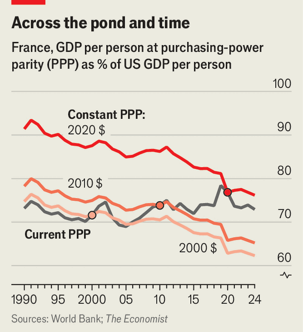
克鲁格曼团队认为，更合理的衡量标准是“现行购买力平价”（current PPP），该方法对每年的GDP进行新的购买力平价调整。有时，如美国与日本，结果相近。但按照现行购买力平价计算，欧洲的产出与美国相比已维持多年持平（见图表）。陷入困惑者并非孤例。“让我承认我完全困惑了，”前国际货币基金组织首席经济学家奥利维耶·布兰查德写道。克鲁格曼指出，欧洲在现行购买力平价下的表现反映了一个反直觉现象：理论上，一国经济增长速度慢于对手并不意味着其相对贫困。假设美国科技产业比欧洲更先进（事实如此），在其他条件相同的情况下，科技将推动美国增长领先。但科技生产力提升会压低所有人（包括美国和欧洲）的物价水平。■
这增强了欧洲的消费能力，分割了生产率红利。在某些情况下，这种收益甚至可能被均分，正如克鲁格曼教授所设想的场景。美国的增长速度更快——这从其国家账簿中可见一斑——但欧洲的消费能力却保持同步。当前的购买力平价（PPP）估值将美国科技产品按这些新的、更低的价格计算。但克鲁格曼的结论并未完全站得住脚。他的计算基于一个不太可能的假设：美国不会通过以这些更低价格卖出更多产品的方式，通常方式来攫取大部分生产率增长带来的收益。其他数据也与克鲁格曼的叙事不一致。格罗宁根大学的PPP专家罗伯特·因克拉尔指出，如果欧洲持续以更便宜的价格进口美国科技产品，那么在比较消费而非GDP时，常数/现行PPP差距将不复存在。■
这是因为克鲁格曼的模型中，只有单方面生产技术，但双方都消费该技术并共享低价带来的好处。既然在消费层面差距依然存在，说明还有其他因素在起作用。阿吉翁-加里卡诺团队认为，这两项指标间的差距大多属于噪音。巴黎高等商学院（HEC Paris）的安托万·贝热奥指出，每种衡量方式都在解决相同问题——比较不同国家和时间的产出，但采用的方法截然相反。一种方法是先将名义GDP转换为统一单位，再以各国的名义GDP数据预测未来实际增长；另一种方法则是先追踪各国GDP随时间的变化（使用国家统计体系数据），再转换为统一单位。■
这些方法得出不同结果，并非因为数据不佳（尽管数据远非完美），而是因为将广泛且不断变化的价格列表转化为清洁指数的复杂数学问题。某一国家随时间推移具有代表性的商品，在另一国家可能毫无参考价值：奶酪在法国可能代表莫尔比耶奶酪，而在美国则可能指蒙特雷杰克奶酪。许多法国奶酪对美国人不可用，反之亦然，或在不同年份才出现。任何价格指数都无法同时反映消费者实际购买的商品，并实现跨时空的可比性。尽管如此，这并非Aghion-Garicano团队的后院问题。确实，购买力平价（PPP）在时间维度上的比较表现欠佳。但两种指标间的差距仍可能具有意义。■
或许，法国科技产品的价格已逐渐接近更便宜的美国水平，且涨幅超过国家统计局所记录的幅度。这种情况下，常数购买力平价指标将低估法国维持竞争力的程度。如今，除了最执着的GDP核算迷，其他人恐怕早已放弃争论，转而关注足球比赛。至少在世界杯赛场上，所有人都能达成一致：谁赢了比赛。在GDP争论中，双方往往陷入僵局，争论常常从经济学转向文化比较。克鲁格曼提出“实地考察测试”：如果欧洲变得贫穷，为何人们却感觉如此舒适？加里卡诺则建议采用“驾车巡游测试”：美国郊区虽缺乏中世纪城镇的魅力，但连体别墅的车库中却流淌着富裕的气息。GDP争论者能在何处达成共识？首先，欧洲的增长速度已慢于美国。■
第二，这确实是个问题：即便欧洲能搭美国的便车（Team Krugman认为如此），这也不是运行经济的方式。第三，AI时代可能比上一轮科技驱动的增长浪潮更加不宽容。那些在美国内部自驾游、对Buc-ee’s（美国连锁便利店）惊叹不已的欧洲人，心中早已认定谁才是赢家。■ 订阅者可注册《经济学人》观点通讯电邮，获取我们最佳评论、专栏文章、客座评论及读者来信的精选内容。
§044 英国脱欧十年：这场公投如何改变英国原题：Ten years on, how the Brexit vote changed BritainBritain · 板块：Britain · 栏目：英国
凌晨12点15分，桑德兰（Sunderland）成为脱欧的象征。英格兰东北海岸的这个港口城市是首个宣布投票支持脱欧的城镇。尽管日产（Nissan）含蓄警告称脱欧可能导致其关闭汽车工厂（当地主要雇主），但仍有超过60%的桑德兰居民支持脱欧。作为曾经辉煌的造船业重镇如今却陷入困境的工人阶级地区，这个港口城市象征着被遗忘的英国对全球精英的愤怒与不满。经济学家试图量化脱欧带来的损害。有人认为人均GDP比原本可能达到的水平低8%；另一些人则认为低2.5%。
■
除日本外，其他G7富裕国家的经济增长速度更快（见图表1）。在桑德兰，留欧派最糟糕的经济担忧并未成真（日产工厂仍在艰难运转），但脱欧加速了英国制造业的衰退（该工厂现在产量比以前少了46%）。桑德兰并未变成一个自由放任的“威河畔新加坡”（Singapore-on-the-Wear）。脱欧带来了无数日常烦扰。经营道路维修业务的桑德兰人多米尼克·加德纳发现进口零件更困难。他形容相关手续“令人极度沮丧”。他的同事迈克抱怨假期时护照排队时间过长。（迈克的波兰邻居却“笑得很开心”，因为他“能直接通过安检”）。从出口奶酪到带狗出国，脱欧后的英国生活显然更加艰难，这一点在制造业中尤为明显。
英国的工业基础在2016年前就已呈现萎缩态势，受中国竞争和高昂能源成本挤压。但自那以后，英国在全球商品出口中的份额骤降，从2016年的2.6%降至2025年的2.1%，降幅达17%（同期欧盟份额仅下降6%）。尽管脱欧协议下与欧洲大陆的贸易基本免关税，但繁复的规则和文件手续却成为新负担。对于2016年向欧盟出口48%商品的英国而言，这种变化影响尤为显著。研究显示，新贸易规则对中小企业冲击最大，而大型企业因拥有专门团队处理额外程序，受影响较小。
脱欧协议导致英国最小型企业的对欧盟出口量比对全球其他地区减少了30%。超过16000家企业——占所有向欧洲出口企业的14%——彻底停止向欧盟供货。其中一家是位于肯特的弗鲁库贝（FlueCube）公司，主营烟囱盖产品。其创始人阿什利·马丁曾认为，“欧洲将是我的增长市场”。他最初向爱尔兰、法国和荷兰出口产品。但脱欧后他表示，“我失去了对交货时间和关税的控制”。最终他放弃了出口业务。两年前，他将公司名称从弗鲁库贝欧洲（FlueCube Europe）改为弗鲁库贝有限公司（FlueCube Limited）。幸运的是，英国的全球经济正日益以服务业为主，而这是英国的相对优势领域。英国的服务业出口额在2016年至2025年间实际增长了47%（见图表2）。■
英国仍是全球的智囊，其法律、工程和广告领域的专业能力被酋长和科技大亨争相收购。在桑德兰（Sunderland），一座新的影视制片基地正在建设中，不远处便是今年夏季即将开放的国家级电子竞技场馆。但这种转变发生在英国脱欧背景下。增长最快的是贸易壁垒较少的行业：广告出口在2015至2022年间增长超过一倍。而在脱欧引发新摩擦的领域，增长则明显放缓（详见图表3）。经济学家斯瓦蒂·丁格拉（Swati Dhingra）发现，受新壁垒影响的英国服务出口下降了16%，而其他贸易流向则保持稳定。伦敦金融城比许多预测更具韧性，仍保持全球第二大金融中心地位。然而，失去欧盟自由执业权（passporting）使向欧盟市场销售服务变得更加困难。■
金融服务和保险服务现在占服务出口的24%，较2016年的32%有所下降。英国脱欧还引发了另一位经济学家约翰·斯普林福德（John Springford）所说的“投资停滞”。数十年来，英国一直是G7（七国集团）中资本投资最低的国家。脱欧带来的不确定性加剧了这一问题，导致投资在六年内停滞不前。这场“投资停滞”从未真正结束：脱欧焦虑逐渐消退，取而代之的是对增税和特朗普贸易战的担忧。低水平的投资使英国人缺乏更先进的设备和基础设施，抑制了生产率增长，阻碍了整体经济。若说脱欧对所有人造成了伤害，未免过于苛刻。海鸥和龙虾是受益者之一，甚至个别人类也从中获益。■
桑德兰燃气设备制造商兼脱欧派凯文·特奇纳（Kevin Tetchner）盛赞简化产品安全认证流程。在更大范围内，政府利用新获得的自由度重塑农业政策。农民不再仅因拥有土地获得补贴，而是需提供环境产品。这被视为成功（欧盟应借鉴）。科技创业者称在英国创办AI公司比在欧盟更容易。但英国大多未能实现小政府派承诺的激进放管服。欧洲工作时间限制法规仍有效。大 Crested Newt 仍困扰住房开发商，欧盟栖息地法规仍适用。■
结果并非欧盟官僚在阻止削减繁文缛节的举措，而是英国政界人士因畏惧既得利益而犹豫不决。最显著的变化是2016年几乎无人预料到的。鲍里斯·约翰逊于2021年放宽了对非欧盟移民的限制，引发了一场来自印度、尼日利亚等地移民的涌入潮。在2023年（见图表4），净移民人数达到峰值，达100万人。当年有超过46万人学生及其家属抵达，填补了大学机构财务漏洞。其中47.1万人通过工作签证入境，填补了医疗和社会护理领域的职位空缺。曾以压倒性多数投票支持收回移民控制权的桑德兰市，正处在“鲍里斯浪潮”的顶峰。2019年，来自英国或欧盟以外地区的人士在该市占3%的就业岗位，到2024年这一比例已升至10%。■
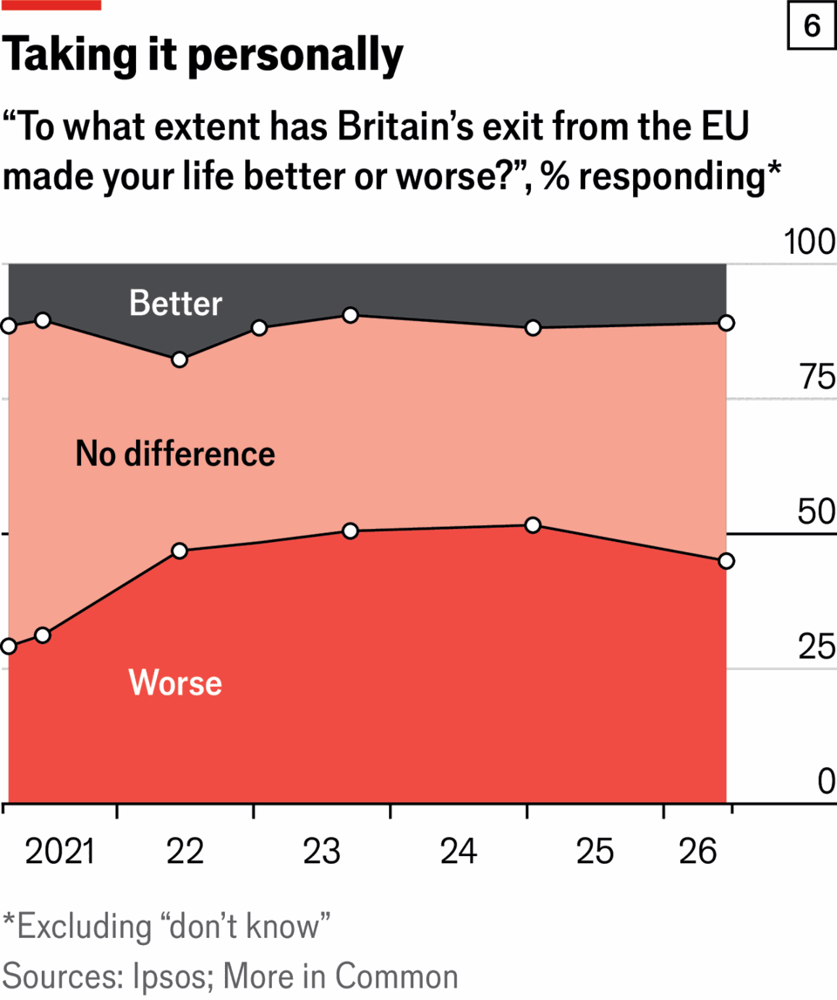
在大学里，每10名英国人中就有4名尼泊尔人、2名乌兹别克人和至少1名印度人（尽管许多人是远程就读）。居民们对此态度复杂。2024年反移民抗议引发了骚乱；今年5月，右翼民粹政党改革英国党（Reform UK）在地方选举中大获全胜。十年后的今天，英国和桑德兰依然分裂。特奇纳先生（Mr Tetchner）庆幸自己投了脱欧票，但他认为承诺被违背。“整个目的就是掌控局面，但我们并未实现这一点。”大多数英国人感到遗憾：民调显示57%的英国人认为脱欧是错误的。随着时间推移，人们对欧盟的态度逐渐回暖（见图表5）。目前在桑德兰工作的居民每周中位数工资的实际购买力仍低于2016年。■
根据More in Common（更多共识）的民调，目前43%的英国人认为脱欧让他们的日常生活变得更糟，仅有11%的人认为脱欧改善了生活（见图表6）。修路工加德纳先生对此感到恼火。“脱欧原本是为了解决一个并不存在的问题。”但他表示，尽管他更希望重新加入欧盟，“实际上这几乎不可能实现。”他停顿了一下，“我们现在已经走投无路了。”■
§045 英国脱欧你没听说的好处原题：The Brexit benefits you haven’t heard of · 板块：Britain · 栏目：英国
悲观主义主导着英国脱欧的舆论场，但英国正收获诸多未被广泛提及的好处。想象你经营着肯特郡的一家酒庄，脱欧前欧盟规定禁止你使用波克贝特尔瓶——一种专为德国、希腊、意大利和葡萄牙特定葡萄酒设计的鼓腹瓶。如今你可自由选择任何形状的酒瓶出售葡萄酒。消费者也能按品（温斯顿·丘吉尔偏好的分量）而非布鲁塞尔规定的700毫升购买香槟（甚至更好，英国起泡酒）。喜爱甜点的人也可将脱欧视为胜利。自2022年起，欧洲的奶油霜和棉花糖明显变得不那么白了。
布鲁塞尔禁止将二氧化钛（一种美白剂）作为食品添加剂使用，担心其可能损害消费者DNA。英国监管机构对这种危险持不同意见。因此，英国糖果依然像多佛悬崖般洁白。其他受益者还包括头足类动物。欧盟法律仅承认脊椎动物的感知能力。英国独立的动物福利规则则将这一标准扩展至部分无脊椎动物，包括章鱼和龙虾。此外还有海燕。丹麦渔民对沙丁鱼（海燕最爱的食物）的捕捞被归咎为海燕数量减少。欧盟禁止成员国单方面实施捕鱼禁令。不受此类限制的英国选择站在海燕一方，禁止在英国水域捕捞沙丁鱼。今年，威尔士海岸的斯科默岛报告出现了创纪录的海燕数量。■
英国在基因编辑作物方面的监管规则已放宽（此前由布鲁塞尔严格监管），使农民能受益于耐受英国气候变化的种子。在脱离欧盟共同农业政策框架后，得益于调整后的激励机制，田间篱笆（及其支持的野生动物）正蓬勃发展：自2023年以来已种植1800公里的篱笆。当保守党“脱欧机遇”部长雅各布·里斯-莫格（Jacob Rees-Mogg）谈及摆脱欧盟对吸尘器功率的监管时，曾提到“解放英国免受真空吸尘器法规束缚”。2017年欧盟禁止销售功率超过900瓦的吸尘器。一位议员曾向上议院表示，若恢复销售这类吸尘器，可让议会上演“老鼠啃食未清理的面包屑”的场景。然而禁令至今仍未解除。巨型吸尘器是众多尚未兑现的脱欧红利之一。■
获取更多关于英国重大新闻的专家分析，请订阅我们的每周专属订阅者新闻简报Blighty（布莱奇）■
§046 英国在国防排名中滑落原题：Is slipping down the defence league table · 板块：Britain · 栏目：英国
英国官员急于重建与欧洲的关系，将国防视为在其他领域深化与欧盟关系的途径。然而，上周约翰·希利（John Healey）这位备受尊敬的国防大臣因政府未能兑现为武装部队提供资金以匹配其言论的承诺而辞职后，这一假设开始动摇。希利曾与财政部就一项资助政府战略国防审查（SDR）的开支计划展开拉锯战。■
在一封措辞严厉的辞职信中，他向基尔·斯塔默爵士（Sir Keir Starmer）表示：“你未能做到，而财政部也无意投入国家在当前威胁上升时期所需的资源以保卫国家。”一年前发布的特别提款权（SDR）报告呼吁加快行动以应对战争。2月，基尔·斯塔默在慕尼黑安全会议上表示：“我们必须增强硬实力，因为这是当今时代的货币……作为欧洲，我们必须自立自强。这意味着要敢于行动。”但英国的果敢却明显缺失。关于武装部队应获得多少资金的争论导致国防投资计划（DIP）一再延迟。军方负责人警告称，未来四年装备预算将出现280亿英镑（380亿美元）的缺口。为确保DIP在7月7日安卡拉北约峰会前公布，事态最终升级。■
海利爵士称，他获得的预算分配远低于所需水平。135亿英镑的 headline figure 实际上在考虑了财政部的巧妙操作后，更接近100亿英镑。在欧洲多国（包括德国和波兰）迅速提升国防预算之际，英国到2030年国防开支将仅占GDP的2.68%，仅比明年预算增加0.08个百分点（见图表）。政府承诺在下一届议会期间（若“经济和财政条件允许”）达到3%，并在2035年前实现北约3.5%的目标，这一承诺几乎难以令人信服。前国防参谋长尼克·卡特将军表示：“即便我们的北约盟友正在艰难抉择，我们却在北约排名表上不断下滑——这张表我们曾位居前列。” ■
问题的一部分在于，被视为不可触碰的国防核企业（DNE）预计将在未来十年内吸收约一半的装备预算。除了需要四艘“恐怖战舰”（Dreadnought）弹道导弹潜艇和新型核弹头外，DNE如今还涵盖了通过美澳英三国安全协议（AUKUS）获得12艘核攻击潜艇的计划。除非新任国防大臣丹·杰拉德（Dan Jarvis，前空降兵）能从财政部挤出更多资金，否则陆军换装尖端装甲车、海军在2030年代用新型驱逐舰和护卫舰替换老旧水面舰队的计划都将面临削减和延迟。英国皇家空军可能不得不放弃获得12架具备核打击能力的F-35A战斗机的计划。■
即便与日本和意大利合作的全球战斗航空计划（Global Combat Air Programme）这一高调项目，也可能（用行话来说）“被推迟”。英国著名战略家劳伦斯·弗里德曼爵士（Sir Lawrence Freedman）认为，需要从根本上重新思考。这应考虑欧洲防务中哪些能力最为紧迫，以及英国在哪些方面具备独特优势。他主张，当前首要任务是将弹药储备提升至足以支撑高强度战争的水平，并加大对无人机生产能力及技术的投资。与乌克兰企业合作可快速低成本地获取精确远程打击武器。加快维修和翻新工作同样紧迫。令人震惊的是，海军约一半的主力水面舰艇以及整个攻击型潜艇舰队都因维修和升级而停泊。
关于对北约的贡献，劳伦斯勋爵强调英国的核威慑力量，以及保护北大西洋航道和海底基础设施（如电缆和管道）免受俄罗斯潜艇和破坏活动的威胁。他表示：“军队虽有其作用，但在欧洲战争中不太可能主导机械化突破行动。”英国仍希望展现其军事勇猛。本周，皇家海军陆战队从直升机上空降，夺取了英吉利海峡一艘俄罗斯“影子舰队”油轮，而基尔爵士承诺英国将“全力参与”开通霍尔木兹海峡。但国防投资计划（DIP）最终落地后，恐怕难以说服英国的欧洲盟友，相信英国会为实现安全伙伴的抱负而做出艰难抉择。■
欲获取更多关于英国重大新闻的专家分析，请订阅我们的每周专属读者新闻通讯Blighty。■
§047 英国如何抓住人工智能领域的重大机遇原题：What Britain needs to do to grasp its big opportunities in AI · 板块：Britain · 栏目：英国
英国经济因脱离欧盟而整体疲软，但蓬勃发展的AI产业是个显著例外。截至今年，英国科技初创企业已获得超过145亿美元的风险投资，超过其他所有主要欧洲市场总和。英国拥有33家人工智能独角兽企业（估值超10亿美元的初创公司），数量超过法国、德国和荷兰的总和（尽管法国拥有欧洲最先进AI模型的Mistral公司，是其中最大的独角兽）。
他们包括Wayve（英国自动驾驶公司），其无人驾驶汽车即将通过网约车应用Uber进入伦敦街头。“这绝对是脱欧红利，”托尼·布莱尔研究所（Tony Blair Institute）的凯根·麦克布里德（Keegan McBride）表示。英国不受欧盟严格人工智能法案（AI Act）约束，该法案被批评者认为对企业和消费者设定了苛刻标准，这是英国的一大优势。英国政府倾向于创新而非监管。然而，尽管英国感觉更自由，但任何有抱负的人工智能公司仍希望向欧盟市场销售，因此仍需遵守该法案，Synthesia（英国最大生成式AI公司之一）的亚历山德鲁·沃伊卡（Alexandru Voica）表示。在某些情况下，脱欧反而让事情“变得更难而非更容易”。沃伊卡指出，高昂的签证费用和无法快速招聘人才是公司如今在欧洲大陆开设办公室的原因之一。■
6月9日，英国政府推出一项全球人才计划，旨在减少此类摩擦。即便剥离了布鲁塞尔的繁文缛节，再好的创意也不一定总能落地实施。“AI增长区”——政府旨在通过加快规划审批和优先电网接入来加速数据中心建设的指定区域——至今仍不过是标签。风险投资家帕斯卡尔·勒文松（Pascal Levensohn）协助在剑桥设立创新中心，他表示：“英国在战略上拥有巨大优势，但尚未充分加以利用。”若与欧洲的对比让英国显得光彩照人，那么与美国的对比则令其黯然失色。本月，英国政府庆祝了6亿英镑（约合81亿美元）用于AI基础设施的投资承诺。这与美国四大超大规模云服务商2026年单年可能投入的7000亿美元资本支出相比，不过是九牛一毛。■
4月，美国公司OpenAI宣布暂停Stargate UK（星门英国）基础设施项目，部分原因是工业能源成本比德克萨斯州高出四倍。特朗普政府近日发布的禁令禁止非美国公民访问Anthropic最新模型（如Claude Fable 5），凸显了前沿AI技术的访问权限完全掌握在美国政府手中。由一群AI专家撰写的《欧洲2031》一文设想，若欧洲不更重视该技术，英国脱欧的最大优势或在于能更便捷地与华盛顿达成双边AI协议。英国在AI领域仍拥有巨大机遇。当前多数AI模型的基础科学成果由英国科学家完成（如Geoffrey Hinton，被誉为AI之父）。■
许多顶尖实验室的联合创始人和高管是英国人，从Anthropic的杰克·克拉克（Jack Clark）到微软的穆斯塔法·苏莱曼（Mustafa Suleyman）皆是。Wayve是围绕DeepMind（谷歌旗下的人工智能公司，由戴米斯·哈萨比斯爵士（Sir Demis Hassabis）领导）聚集的一批有前景的AI企业之一，而DeepMind总部位于伦敦国王十字区。如果英国政府开创性的人工智能安全研究所（AISI）继续被排除在Anthropic最新模型之外，世界将对前沿AI的风险了解甚少。英国也不必完全依赖美国。英伟达（Nvidia）总裁黄仁勋（Jensen Huang）将AI堆栈比作多层蛋糕，由能源、芯片、基础设施、模型和应用构成。他表示，最大的经济利益在于顶层，而英国在此领域最具优势。■
尽管从长远来看接触前沿AI至关重要，但多数应用场景并不需要最新模型才能发挥作用。基准测试公司Artificial Analysis的数据表明，中国的开源模型DeepSeek V4 Pro的性能约为Fable 5的四分之三，但成本却不到其六十分之一。然而要在AI领域真正繁荣发展，英国必须采取更大胆的举措。它需要改革规划体系、升级电网以建设更多AI基础设施。政府可能需要投入的资金将超过此前承诺的11亿英镑用于AI硬件。在应用层面，充分挖掘AI潜力还需解决其他治理难题，例如整合医疗系统的数据。英国必须在公众日益增长的反弹声中完成这一切。■
伦敦国王学院的研究人员最近的一项调查显示，57%的英国公众认为人工智能将导致大规模失业，22%的人认为这将引发社会动荡。在演讲中，官员们在人工智能的风险与机遇之间进退维谷。更有效的应对方式是成立人工智能经济学研究所，该研究所以AISI为蓝本，这是首个专门追踪人工智能如何影响生产率、劳动力市场及整体经济的机构。随着时间推移，政府将不得不应对人工智能引发的社会变革带来的改革挑战。目前，还有其他工作要做。“技术革命已经到来，”麦克布里德先生表示。英国有机会成为参与者，但风险是沦为旁观者。■ 如需了解英国重大新闻的专家分析，请订阅我们的周度专属通讯《Blighty》。
§048 重返欧洲派：英国真正的保守主义运动原题：Rejoiners, Britain’s real conservative movement · 板块：Britain · 栏目：英国
为纪念英国脱欧公投十周年，败选方的活动带有历史重演的意味。一场支持重返欧洲联盟的游行（无疑会飘扬蓝色旗帜）将穿过威斯敏斯特。组织者包括来自斯温顿的反脱欧舞蹈团，他们徒步完成了255英里的朝圣之旅抵达布鲁塞尔，向议员们传递英国民众的悔意。对于真正怀旧的人士，小报《新世界》正在兜售印有“欧洲永驻—— Brexit见鬼去”的离婚前勃艮第红护照封面。
政治科学家伊坦·赫什（Eitan Hersh）认为，政治行动往往更多出于兴趣而非理想。一些历史重演者喜欢装扮成拿破仑时期的步兵，另一些人则热衷于重演2016年挫败的场景。这给英国亲欧阵营带来了问题。据调查，约55%的英国人、79%的工党选民表示愿意重新加入欧盟。这一“重返欧盟”运动（Rejoin）仍更多是理念而非具体竞选，却已从边缘迅速进入主流。潜在的首相韦斯·斯蒂灵（Wes Streeting）与对手安迪·伯纳姆（Andy Burnham）都表达了希望英国重返欧盟的愿望。崛起中的绿党也支持这一主张。但除非支持者遵循政治竞选的核心规则——即赢得选战需关注戈登·布朗（Gordon Brown，前首相）所说的“未来商机”，否则该运动将难以为继。■
重新加入欧盟往往是一种回顾性的诉求，其支持者仍被他们所认为的欺诈性公投以及随后造成的损害所激怒。但若脱离欧盟的后果令人痛心且易于举证，这并不等同于重新加入的前景。在这一领域，思想层面的准备工作才刚刚开始。英国脱欧被视作阻碍增长的错误，但这并不必然意味着其逆转：从住房政策到税收制度，英国人擅长在高昂的错误中继续生活。反脱欧运动中存在保守主义倾向，这看似矛盾，因为其支持者多来自左翼政党。但这种倾向只在2016年混乱局面出现后才显现，此前英国街头鲜见欧盟旗帜。其目标更偏向于恢复而非变革：首先暂停脱欧进程，当这一进程无法逆转后，便试图倒转时钟。■
这是一股在全球范围内都可见的趋势，牛津大学纳菲尔德学院的本·安塞尔指出：随着右翼激进势力将目光转向法院、央行或欧洲委员会等机构，那些曾代表变革力量的群体如今却意外地成为这些机构的捍卫者。民粹主义让进步派变成了保守派。而许多曾反对脱欧的示威者，其实本可以成为自然的保守派：他们年龄更大、肤色更白、受教育程度也高于普通民众。（正如摩根·琼斯在一项关于该运动的新研究中提到的那件自豪的学术T恤上所写的“Testiculi ad Brexitum”）在最糟糕的情况下，人们甚至能察觉到对无知识脱欧支持者的恐惧，这种恐惧与埃德蒙·伯克对法国革命暴民的厌恶如出一辙：“知识将被扔进泥潭，踩在一群猪猡的蹄下。”但欧洲只有在与未来同义时才得以进步。■
对于引领英国1973年加入欧洲共同体的爱德华·希思（Edward Heath），唯有在大陆市场中，英国才能与美国和日本在飞机、计算机和核能领域竞争。加入后退出，就如同“退入历史尘封的后台”。对许多英国人而言，欧洲意味着文化现代性：海外度假、Gaggia咖啡和马莎百货（Marks & Spencer）葡萄酒。然而疑欧派逐渐意识到未来的力量。许多脱欧选民和部分保守党议员怀念帝国与不屈不挠的抵抗精神。但官方脱欧阵营“Vote Leave”却将欧盟描绘为塔楼与电传机时代的遗迹，无法应对技术变革与大规模移民。其口号“夺回控制权”所指的，是基因编辑与临床试验。这一策略奏效了。若第二次公投真的到来，反对英国留在欧盟的阵营将再次在这片战场上展开争夺。■
在人工智能和低碳能源领域，他们认为欧盟比英国更风险规避、更倾向贸易保护主义，这种观点并非毫无道理。那么，Rejoin支持者对欧洲工业未来的另一幅图景又是什么？他们可能会反驳，英国更适合制定整个欧洲市场的AI法规。但2016年曾被击败的“影响力胜过自主权”公共论点，如今难以重获支持；对Rejoin的爱好者而言，重演鲍里斯·约翰逊的“大红巴士”事件反而更轻松有趣。而当今欧洲领导人对“未来产业”的推销也并不擅长。几乎每个月都有人警告，若不改革，欧洲将沦为一座空荡的博物馆。■
支持“重返欧盟”（Rejoin）的倡导者有时会推崇十年前的欧洲，那时英国可重新获得脱离单一货币和“申根”（Schengen）免签区等特殊地位。理论上这并非不可能，但对欧洲一体化巅峰成就的抵触情绪，似乎表明英国人对现实中的欧盟兴趣并不浓厚。（同样地，你也可以在斯科特餐厅（Scott’s）只点绿沙拉，但若你坚持要大肆喧哗，或许牡蛎吧（oyster bars）并不适合你。）这种观点忽略了核心问题。英国熟知的欧盟已历经多年危机而演变，部分变化可能令英国精英感到不适：欧盟现在发行共同债务，并加强资本市场的监管；而另一些变化或许颇具吸引力。欧盟正陷入地缘政治竞争，并牵涉乌克兰的命运。■
它更严肃地对待竞争力，对移民问题也更为务实。它将减少对农民的支出，增加国防投入。因此，巴吉霍特（Bagehot）建议英国重新加入（Rejoin）。胜者将用未来时态进行竞选。忘掉2016年的欧洲，转而推销2046年的欧洲。谁知道呢？英国人甚至可能更青睐那个版本。■《经济学人》订阅者可注册我们的Opinion通讯，汇集了本刊最佳评论、专栏文章、特稿及读者来信。
§049 世界新和平缔造者原题：Meet the world’s new peacemakers · 板块：International · 栏目：国际
巴基斯坦（Pakistan）通常被视为地缘政治问题的源头，而非解决这些问题的良药。然而在过去的几个月里，它所做的努力远超其他任何国家，推动结束了美伊战争。它并非唯一一位意外的和平调解者。在最近五年内，土耳其曾斡旋俄罗斯与乌克兰、埃塞俄比亚与索马里、巴基斯坦与阿富汗之间的冲突。中国也在努力调和阿富汗与巴基斯坦的关系。 ■
卡塔尔在哈马斯与以色列、美国与塔利班之间扮演中间人角色，并参与了美国与伊朗的协议。全球范围内，威权政权主导的和平进程正逐渐成为常态。根据巴塞罗那自治大学和平文化学校（ECP）的统计，2025年，中国、卡塔尔、沙特阿拉伯、土耳其和阿联酋等国在记录的53项和平进程中，至少有20项涉及上述国家作为调解方。与此同时，战后时期的传统和平缔造者——联合国及远离战场的民主国家如挪威、瑞典和瑞士——参与度或影响力则明显下降（见图表1）。这种转变并不意味着与以往相比达成的协议数量增多或减少。如同其民主国家的同行，威权政权往往也难以取得实质性成果。■
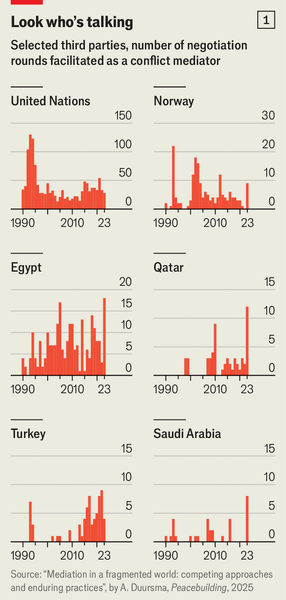
但他们在促成的协议在形式和实质上都与以往不同。首先，我们来看看这些激励因素。独裁者参与调解至少有三个原因。一是声望和国内地位。巴基斯坦军方领导人利用其在美伊谈判中的角色，塑造巴基斯坦作为不可或缺盟友的形象。土耳其总统埃尔多安（Recep Tayyip Erdogan）则通过成功的外交调解巩固国内支持，并自诩为全球南方的代言人。另一个参与动机是处理邻国的突发问题。
本世纪以来，土耳其不得不应对边境战争引发的难民危机、能源供应中断、经济衰退及恐怖袭击等多重挑战。前土耳其外交部国际调解负责人蒂穆尔·索伊勒梅兹（Timur Soylemez）表示：“除非我们的地区实现稳定，否则土耳其无法获得全面的安全与繁荣。以更低成本管理这些争端、防止局势升级，是更有效的策略。”商业或地缘政治目标是第三个因素。中国在缅甸内战中进行调解，主要目的是保护其投资利益。土耳其同样通过调解保护在伊拉克、利比亚等地的经济利益，并在索马里寻求新的经济机遇。■
巴基斯坦对海湾国家能源进口的严重依赖，这也在一定程度上解释了其在伊朗问题中的突出角色，同时其希望讨好美国的动机同样重要——毕竟美国与巴基斯坦宿敌印度的关系近年来明显升温。新晋的调解者相较传统势力拥有一定优势。奥斯陆和平研究中心研究员皮纳尔·坦克（Pinar Tank）指出，土耳其借助自身的伊斯兰身份，试图以比西方国家更可信的中介角色出现，服务于穆斯林国家。卡塔尔则愿意与哈马斯、伊朗和塔利班等组织对话，而这些组织是许多西方政府不愿直接接触的（或因制裁体系与政治考量，直接谈判更为棘手）。由此产生的协议也呈现出不同特点。■
“西方民主国家过去在缔结协议时大多强调人权、权力分享和民主改革，”苏黎世联邦理工学院研究员阿勒德·杜尔萨姆（Allard Duursma）表示。威权国家则用对稳定、商业机遇和贸易的重视取代了这一自由主义模板。这一转变最显著的标志——或许也是推动力——是联合国影响力的衰退。过去十年间，联合国作为调解方介入冲突的数量基本保持稳定，但其影响力——以担任调解主导方的案例数量衡量——正迅速下降。联合国上一次发挥显著作用是在2022年，当时它与各方共同促成了一项允许乌克兰通过黑海出口粮食的协议。■
长期以来，一些国家——尤其是美国、俄罗斯和以色列——在涉及自身利益时往往绕开联合国，另辟调解渠道（如当前加沙战争、伊朗冲突、黎巴嫩局势和乌克兰战争）。但联合国自身也养成了忽视自身作用的习惯。联合国秘书长安东尼奥·古特雷斯（António Guterres）直到3月25日战争爆发近一个月后，才任命伊朗特使，而此时地区外交官们已通过电话进行多日斡旋。一位高级联合国官员承认，由于领导层担心将有限的政治资本投入看似无望的冲突，往往干脆不尝试调解。“目前对我们来说是个相当低谷的时期，主要因为过去十年过度谨慎。”他感叹道。“失败是可以接受的，但更重要的是尝试。”联合国维持和平的能力也有所下降。■
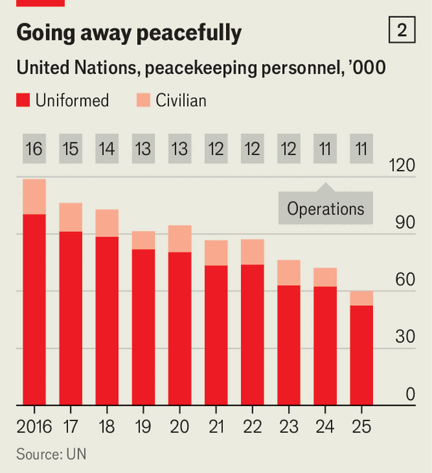
联合国维和部队人数大幅下降，从2016年的107,000人降至目前的47,000人，同期联合国维和行动数量也从16项减少至11项（见图表2）。这类任务正逐渐成为历史。自2014年为中非共和国内战设立新任务以来，联合国已再未创建过新的维和行动。美国削减此类任务资金的做法也无助于局势改善。作为唯一仍保持活跃的常规和平力量，美国持续介入从柬埔寨到叙利亚的各类冲突。唐纳德·特朗普常以夸张的言辞宣称，在其第二个总统任期的前八个月中结束了八场战争。但其以实用主义为特点的和平方式更接近独裁调解者的模式，而非前任们的传统调解模式。■
他经常向美国索取商业利益，例如采矿特许权，却从未表现出对人权、民主或法治的关注。结果催生了一种新型的和平方式。新晋势力频繁主导调停工作，将其他方排除在外。萨拉·赫尔姆勒（Sara Hellmüller）和比拉尔·萨拉伊梅赫（Bilal Salaymeh）在去年发表的一篇论文中指出，在他们参与或强力支持一方的战争中，这种现象屡见不鲜。沙特阿拉伯在也门冲突中几乎完全绕开联合国。伊朗、俄罗斯和土耳其在叙利亚长达数年的内战中多次自行达成停火协议，未邀请任何外部势力介入，以避免干涉彼此的影响力范围。土耳其在与库尔德武装的和平谈判中也拒绝联合国的调停。在缅甸，中国则交替支持叛军与迫使他们停火，从而提升自身影响力。■
尽管听起来可能有些愤世嫉俗，但强制外交并非毫无益处。（这种做法也并非全新；例如在波斯尼亚，北约的轰炸行动为1995年《代顿协议》的达成铺平了道路。）研究显示，这种调解方式往往能比更讲求原则的方式更快促成停火。在某些情况下，一个拥有经济或地缘政治利益的专制政权可能是唯一真正关心和平进程的当事方。例如，中国一直积极扮演阿富汗与巴基斯坦冲突的调停者角色。今年3月，中国外交部在巴基斯坦袭击喀布尔医院后呼吁各方保持克制，随后又迫使双方于4月赴华参加会谈。中国还试图通过经济手段施压，迫使双方做出让步，尽管截至目前尚未取得实质性成果。■
务实强硬的外交风格取得了一些显著成果。对冒犯特朗普的担忧似乎促成了亚美尼亚与阿塞拜疆、柬埔寨与泰国、刚果与卢旺达之间冲突的停火协议。尽管印度对特朗普的干预感到震惊，但他似乎也帮助平息了去年印巴之间紧张局势的升级。但问题在于，独裁者与特朗普所强调的公平与人权议题，反而可能让停火协议更加稳固。持久的和平协议本就罕见，如今更是愈发稀少。据杜尔萨马（Duursma）统计，1989年至2013年间，谈判达成最终协议的比例为3.9%，而2014年至2023年间则降至2.1%。■
半成品协议正在取代长期且繁琐的和平建设工作。杜尔萨马先生表示：“这类重大和平协议的时代似乎已经终结。”换句话说，巴基斯坦的服务可能即将再次被需要。■
§050 美国汽车制造商无法永远摆脱中国电动汽车 Business Pump v plug原题：America’s carmakers cannot escape Chinese EVs for ever · 板块：Business · 栏目：商业
底特律市中心装饰艺术风格摩天大楼群，见证了20世纪20年代资金涌入“汽车城”时期美国汽车工业的黄金时代。尽管行业重心已转移至中国，但“底特律三巨头”（Big Three）的印记仍深深烙印在底特律。今年，通用汽车（GM）开设了新总部；去年福特公司则在自家所在的迪尔伯恩市内搬迁办公地点。而Stellantis的美国总部仍位于奥本山（Auburn Hills），这家由克莱斯勒集团（Chrysler Group）所属的公司（其最大股东Exor部分持有《经济学人》母公司股份）的根基依旧未变。这是信心的象征，还是抱团取暖的迹象？■
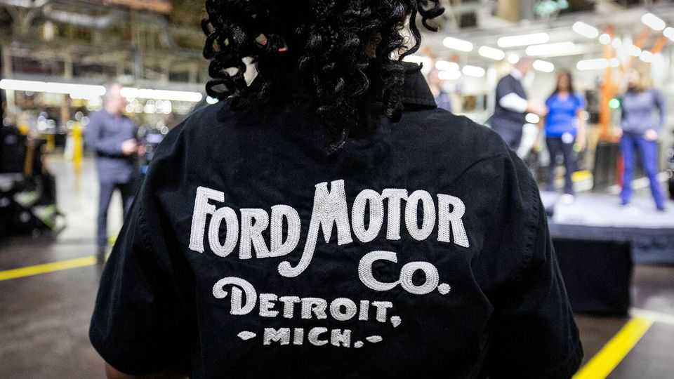
美国的关税和监管措施更偏向于传统燃油车，而电动车在其他国家正日益流行。底特律主导着巨型皮卡和大型SUV的制造，这些车型深受美国消费者喜爱且利润丰厚。但美国汽车制造商依赖石油动力并筑起贸易壁垒，却可能在电动车即将主导的行业里落后于主要竞争对手——尤其是中国车企。投行Jefferies的菲利普·侯乔伊斯指出，美国三大车企（Big Three）近期“有退缩的历史”。1950年全球四分之三的汽车产自美国，如今不足八分之一。通用汽车2017年退出欧洲市场，将长期亏损的欧宝品牌出售给标致雪铁龙集团（现为Stellantis集团）。福特在欧洲市场的份额因放弃受欢迎的小型车型且电动车缺乏吸引力而骤降。
在中国，本土汽车厂商以超强竞争力击败了通用汽车（General Motors），后者十年间市场份额锐减近半，也迫使福特（Ford）失去三分之二的市场。2004年，通用汽车仍是全球最大的汽车制造商，当年销量达840万辆；而去年其销量降至620万辆，排名第四。福特则从第三位滑落至第七位。即便在美国本土，这三大车企的市场份额也从1965年的90%以上降至如今的40%左右。由菲亚特-克莱斯勒与PSA（标致雪铁龙集团）于2021年合并成立的Stellantis，去年在美国仅售出130万辆汽车，不足2004年销量的一半。所谓因电动化和中国崛起而获得的行业保护屏障，最终却付出了代价。拜登政府于2024年对华电动车征收100%关税，将这些迅速占据欧洲市场近十分之一份额的汽车挡在门外。■
特朗普政府撤销拜登政府的排放法规和电动汽车补贴，使美国汽车制造商得以放缓电动化步伐。但此前对电动汽车的乐观预期已带来沉重代价。福特去年计提近200亿美元减值，斯特兰蒂斯计提260亿美元，主要因缩减电动汽车计划；通用汽车则计提80亿美元损失。特朗普的贸易政策也造成冲击。过去自由贸易协定鼓励将汽车及零部件生产转移至墨西哥和加拿大，如今针对非美国成分的高额关税旨在将制造业回流美国，却令底特律损失数十亿美元。最新贸易协定的重新谈判将于7月启动，可能要求车辆需包含更高比例的美国制造部件才能享受免税待遇，或进一步推高成本。■
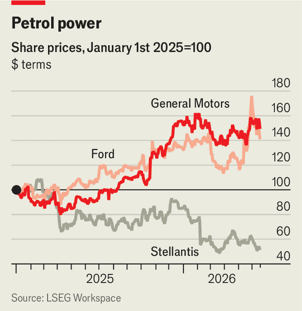
尽管如此，过去一年福特和通用汽车的股价却大幅上涨（见图表）：投资者看重的是短期内在美国销售燃油车的获利机会。斯泰兰利（Stellantis）的股价自去年六月安东尼奥·菲洛萨（Antonio Filosa）接任CEO以来已下跌30%，该公司也押注了类似策略。5月21日公布的计划显示，未来四年将投入360亿欧元（420亿美元）用于品牌投资，其中60%将投向北美市场，因为该地区回报率最高。分析师们欢迎这一计划，但对其能否落实表示质疑。■
聚焦中国之后的世界最大汽车市场并非完全不切实际，尽管自疫情以来该市场已减少约100万辆年销量，降至每年1600万辆，且增长前景最多只能算缓慢。通用汽车首席财务官保罗·雅各布森（Paul Jacobson）表示：“我们的国际足迹已不如历史时期广阔，因此我们主要聚焦于最强劲的市场——北美，以及南美等地区和中国。”目前这些主要盈利车型面临极少的外国竞争，而电动化尝试至今尚未成功。福特已于2025年停止生产其畅销皮卡的电动版本F-150 Lightning。通用和Stellantis也放弃了以电动形式生产大型皮卡的计划。咨询公司AlixPartners的马克·韦克菲尔德（Mark Wakefield）表示，中国市场的“壁垒”为美国汽车制造商提供了追赶的时间和资金。■
尽管面临诸多挑战，通用汽车（General Motors）和福特（Ford）的现金流依然旺盛。虽然一些原本用于电动车生产的工厂被重新用于燃油车生产，但标普全球（S&P Global）信息提供商Stephanie Brinley指出，电动车投资“规模在调整但仍在推进”。因此，福特位于加州的“skunkworks”（秘密实验室）内聚集着大量软件工程师和其他技术人员。福特燃油车与电动车业务总裁Andrew Frick表示，一款可支撑多款车型的新电动车平台将直接与中国品牌竞争，首款产品是一款3万美元的小型皮卡，预计于2027年推出。在通用汽车位于沃伦（Warren）的全球技术中心（距离总部半小时车程），研发团队正持续推进新型锂锰化学技术电池的开发，旨在降低成本而不影响性能。■
菲洛萨先生坚称，Stellantis并未在美国“放弃电动车”，其庞大的欧洲业务与中国伙伴的合作意味着公司将具备竞争实力。“欧洲是电动车的试验场。”这种组合是否足以至少在国内保持领先地位？关税、禁止使用中国软硬件的法规——在一个政治分裂的国家，对华技术威胁的广泛共识——构成了强大的防御屏障。菲洛萨先生反映了许多底特律人士的思维，他预计“至少在几年内”不会出现中国车企。但科克斯汽车数据公司（Cox Automotive）的查理·切斯布罗格（Charlie Chesbrough）认为，中国车企已遥遥领先，他们“只是时间问题”就会进入美国市场。中国车企耐心十足。国有车企奇瑞表示，将在“合适时机”进入美国市场。他们已拥有立足点。■
吉利集团是中国第二大汽车制造商，旗下拥有瑞典沃尔沃公司，后者在美国南卡罗来纳州设有工厂。其旗下的中国品牌Zeekr和Lynk&Co也有可能在当地生产汽车。多家中国汽车品牌在美国设有设计和研发中心。特朗普似乎也对允许中国公司进入美国持开放态度。1月，当特朗普在底特律宣称如果中国能在美建厂并提供就业将“非常棒”时，当地高管们感到震惊。福特公司CEO吉姆·法利表示，接纳中国车企将“造成毁灭性打击”。据称他还建议中国车企必须与美国控制的合资企业合作。这些企业已紧邻美国边境。另一家国企广汽集团即将在墨西哥启动汽车组装，中国进口车已迅速占据当地15%的市场份额。比亚迪和吉利也被认为正在考虑在当地设厂。
比亚迪也在考虑在加拿大建厂，加拿大最近同意每年进口49,000辆中国产汽车并征收低关税。其他在全球与中国车企展开竞争的外国车企也纷纷被迫提升电动化战略。他们无疑也希望在美国市场销售。无论如何，竞争正在来临。底特律三巨头要重拾昔日辉煌可谓任重道远。■ 要追踪塑造商业、产业与科技趋势的动态，请订阅我们的周度会员专属简报“ The Bottom Line ”。
§051 福克斯、Roku与流媒体战争的新阶段原题：Fox, Roku and the next phase of the streaming wars · 板块：Business · 栏目：商业
好莱坞持续多年的流媒体内容争夺战中，主要受益者却意外成为旁观者。在迪士尼等公司豪掷千金打造流媒体服务以与Netflix竞争时，福克斯却选择按兵不动。这家仍以传统“线性”电视为主营收的有线巨头，过去五年间其股价近40%的涨幅远超迪士尼相似比例的下跌。■
6月15日，福克斯公司迈出进军流媒体领域的重要一步，意外宣布已同意收购美国流媒体公司Roku（Roku是一家销售流媒体硬件和软件并运营自有流媒体频道的企业）。这项价值约220亿美元（现金加股票）的交易，标志着福克斯战略方向的转变，并预示着流媒体战争下一阶段的争夺方式。福克斯近年来一直在悄然提升其流媒体能力。2020年，该公司以4.4亿美元收购了免费广告支持型服务Tubi（业内称为FAST频道），并逐步将这家不起眼的娱乐频道发展为美国流媒体观众占比达5%的平台（见图表），与派拉蒙和NBC环球的Peacock并列。去年，福克斯推出了Fox One，这是一个付费订阅流媒体平台，整合了福克斯旗下所有新闻、体育和娱乐内容。■
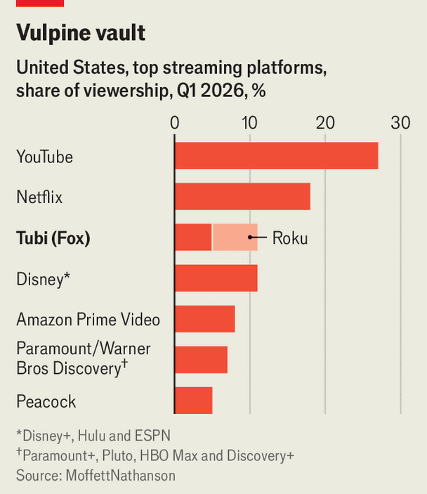
Roku将大幅扩展福克斯的流媒体业务。其自有FAST服务Roku Channel将使福克斯在美国流媒体观众中合计份额达到11%，超越迪士尼位列第三，仅次于YouTube和Netflix。有线电视仍将是福克斯的主要收入来源。但流媒体业务如今已成其业务结构的重要组成部分：据分析师机构MoffettNathanson估算，Tubi和Roku将贡献约30%的总收入，该机构将这笔交易视为“确保福克斯在流媒体取代传统发行模式的未来岁月中持续发展的途径”。这笔交易也凸显了广告正在成为流媒体战争中的关键战场。最初排斥广告的订阅制流媒体平台如Netflix，如今已开始拥抱广告，以吸引那些不愿每月支付20美元购买无广告套餐的用户。
超过半数的新流媒体订阅者在美国选择广告支持型套餐，研究公司天线（Antenna）的估算显示。广告商则在寻找新的广告投放渠道，因传统电视观众人数持续下降。快速流媒体频道（FAST channels）成为许多广告商的新选择。拥有Roku将提升福克斯的广告业务。Roku去年通过Roku频道及其电视操作系统销售广告收入达23亿美元。除了规模优势，Roku还将带来大量数据资源。其操作系统去年在美国推动销售了800万台智能电视，数量超过三星、字母表（Alphabet）和亚马逊等竞争对手。全球范围内，超过1亿家庭使用Roku的流媒体技术，这为其提供了用户观看习惯的数据，帮助福克斯在旗下所有服务中精准投放广告。■
在经历了数年相对保守的流媒体业务后，福克斯公司如今突然展现出咄咄逼人的姿态。■欲追踪塑造商业、产业与科技趋势的动态，敬请订阅我们的全球商业专属订阅简报《The Bottom Line》。
§052 伊朗战争推动了挪威能源巨头挪威国家石油公司的发展，但无法将一头逐渐老去的现金奶牛转变为充满活力的新秀原题：The Iran war has boosted Equinor, Norway’s energy giant · 板块：Business · 栏目：商业
商业 | 石油、风能与火电 伊朗战争推动了挪威能源巨头挪威国家石油公司（Equinor）的发展，但无法将一头逐渐老去的现金奶牛转变为充满活力的新秀。近期事件对海湾以外的能源公司颇为有利——包括向欧洲供应油气资源的最大供应商挪威国家石油公司。霍尔木兹海峡的关闭，该海峡通常承载着全球五分之一的石油和液化天然气（LNG）运输，自2月起已使欧洲天然气价格飙升40%；截至5月的三个月内，布伦特原油均价达到每桶103美元。挪威国家石油公司股价上涨了四分之一（见图表）。因此，您或许会预期在6月16日举行的挪威国家石油公司资本市场日上，该公司会充满喜悦之情，这天恰逢其在奥斯陆和纽约上市25周年纪念日。■
然而，斯堪的纳维亚式的克制依然占上风——这不仅因为伊朗与美国的和平关系将平抑油价。挪威国家石油公司（Equinor）仍被困在逐渐老龄化的化石燃料业务与目标有限的绿色投资组合之间。挪威大陆架上未开发的油气资源，是该公司65%产量的来源，但这些资源早在1983年便已达到峰值。如今多数油田已进入成熟期。为维持产量，未来几年该公司计划将60%的资本支出投入本土项目。资金主要用于靠近现有管道、井口或炼厂的小型储量开发，以期在两年半内实现盈亏平衡，且油价低于每桶35美元。该公司还计划提升老油田的采收率。其预计挪威石油产量将在2027年达到140万桶石油当量/日（boe/d），随后温和下降至2030年代初的130万boe/d。但许多分析师认为，实际降幅可能更快。■
海外业务可能抵消国内业务的下滑。挪威国家石油公司（Equinor）正在推进巴西的巴卡卢（Bacalhau）油田，该油田位于厚厚的盐层之下；类似资产的拉伊亚（Raia）预计将于2028年投产。该公司还收购了美国马塞勒斯页岩盆地的资产。挪威国家石油公司预计，到2030年，国际产量将增长30%，达到950,000桶油当量/日（boe/d）。但希望海外项目能扭转其命运的期待可能被高估。高盛（Citigroup）的阿莱斯蒂尔·西姆（Alastair Syme）怀疑挪威政府——挪威国家石油公司最大股东——是否支持全球扩张。该公司正避开新国家和前沿勘探，更倾向于提升现金流。预计到2030年，国际业务将带来90亿美元收入，比目前增长80%。其未来能否转向绿色能源？该公司2018年更名（从Statoil）标志着这一方向的转变。■
挪威国家石油公司（Equinor）原计划到2030年使可再生能源占比达到10%，并计划从2021年至2026年投入230亿美元用于绿色投资。但疫情后，组件成本飙升和供应链中断导致项目超支，恰逢利率上升使融资成本增加。审批延迟和地缘政治不确定性进一步压缩了回报。目标市场增速也低于预期。可再生能源亏损持续扩大。自2022年以来，挪威国家石油公司已缩减投资规模，去年仅投入不足30亿美元。公司已退出部分项目、出售资产并核销14亿美元亏损。公司仍保留三个海上风电巨型项目，预计明年将实现正现金流。其电力产量预计到2030年将增长四倍至20太瓦时，但主要来自现有项目。意识到这可能难以吸引投资者，挪威国家石油公司承诺将投入大量资金。■
它计划将股票回购规模翻倍至2026年的30亿美元，并维持每年20亿至40亿美元的水平，同时将股息提高超过5%。伊朗的意外之财目前有所帮助，但若缺乏持久的价格上涨或新增增长，这些支付将很快需要借贷。埃奎诺尔正逐渐成为一家步入中年的现金奶牛。■ 欲追踪塑造商业、工业与科技趋势的动态，请订阅我们的周度专属读者通讯《The Bottom Line》。
§053 企业正争先恐后地试图控制飙升的人工智能成本原题：Companies are scrambling to curtail soaring AI costs · 板块：Business · 栏目：商业
“这将是一场绝对的噩梦，”一位大型美国科技公司高管说道。他正在谈论一个对使用人工智能的企业日益凸显的新问题。AI代理——能够阅读、理解和执行任务的机器人——需要大量计算资源，且已开始产生巨额费用。随着这类代理的普及，问题将愈发严重。这位高管指出，大型企业通常会使用数百个软件程序。如果每个程序都提供代理功能（这很可能发生），人工智能成本可能失控飙升。对人工智能采用者而言，预算管理成为新的担忧。
不久之前，企业员工被鼓励沉迷于技术。大量消耗token——模型处理的文本片段（常作为计价单位）——曾被视为荣誉象征；技术人员称之为“tokenmaxxing”。企业纷纷在内部排行榜上展示员工的AI使用情况，Meta甚至为顶级用户授予“Token传奇”等称号。此类激励措施部分解释了AI支出的激增。同时，企业使用技术的方式也发生了变化。以推理模型和代理程序为代表的token密集型应用正变得愈发流行。在某些情况下，代理程序还会自行创建子代理，进一步推高成本。企业信用卡服务商Ramp通过分析客户交易数据，揭示其AI使用情况。该机构估算，客户AI支出在过去一年增长了13倍。今年4月，Uber表示其年度AI预算已在四个月内耗尽。■
其他公司也面临类似问题。据报道，某家公司仅用一个月就投入了5亿美元用于AI代币。OpenAI的CEO山姆·奥尔特曼称，客户成本的上升是一个“巨大问题”。目前，这一问题主要集中在某些领域。主要支出方多为科技公司，因为它们是早期采用者，而AI在编写软件方面尤为擅长。Ramp认为，那些在每位员工上投入最多的1%客户，平均每月每人账单约为7450美元；中位数客户则支付11美元。尽管大客户在AI上的支出相比旧金山雇佣开发者的成本较低，但相比在德里雇佣开发者的成本则较高。企业正以不同方式应对。尽管AI技术的落后者仍在加速采用，但对最重度用户而言，“tokenmaxxing”已不再适用。包括Meta和亚马逊在内的部分公司已取消其排行榜。■
许多人开始更加谨慎地选择模型。许多任务并不需要昂贵的前沿模型。Archera.ai的Aran Khanna指出，某些情况下，Anthropic的落后模型Sonnet的成本仅为领先模型Opus的十分之一，而Moonshot AI（中国初创公司）开源模型Kimi的成本更是仅为Sonnet的十分之一。另一种方法是设定支出上限。Uber已将员工每月每个编码工具的令牌额度上限设为1500美元。Thoughtworks咨询公司Rachel Laycock表示，企业如何分配令牌取决于何处能从AI中获取最大价值。她补充道，这通常意味着企业会将最多令牌分配给其核心业务职能，如科技公司的工程师。■
一些软件供应商正在尝试新的定价计划，以缓解客户对成本的担忧。Intercom（一家此类供应商）提供了一项服务，客户只需为由其IT支持代理解决的查询付费。大型云服务提供商也推出了成本管理服务，包括预算工具和将查询分派给最合适的模型的方法。对模型制造商而言，这种平衡更为困难。他们希望最大的客户能尽可能多地使用令牌，同时不因成本而犹豫。目前，提供AI服务的成本由实验室承担补贴。据悉，OpenAI计划通过大幅降价从Anthropic手中赢得客户。但最终，模型制造商将需要盈利，这意味着提高价格。如果如预期那样，Anthropic和OpenAI今年晚些时候上市，这种压力只会加剧。■
因此，他们的客户可以期待更多令人咋舌的AI账单。■ 要追踪塑造商业、工业和科技趋势，订阅我们的每周专属订阅者通讯“The Bottom Line”，关注全球商业动态。
§054 塔塔集团的大胆投资尚未见效原题：Tata’s big bets are yet to pay off · 板块：Business · 栏目：商业
贾姆谢特吉·塔塔（Jamsetji Tata）这位维多利亚时代的家族企业创始人曾志向远大。他怀有四大抱负：在印度开设世界级酒店；建设该国首个钢铁厂；为孟买（现称孟买）提供水电；并建立一个能与欧洲科学机构相媲美的印度科研机构。尽管当时质疑者嗤笑，但所有目标最终都实现了。如今塔塔集团已成为印度最大的综合性企业之一，产品从食盐到软件无所不包。它仍在继续做梦。但其新业务领域的投资——包括航空公司、数字“超级应用”、智能手机和半导体——正消耗着大量资金。
关于资本配置的担忧引发了董事会纠纷。塔塔集团控股公司塔塔 Sons 66%的股份由塔塔信托基金会持有，该基金会是全球最大的慈善机构之一，由塔塔家族数十年来建立，资助医疗、教育、扶贫和文化等领域。今年2月，信托基金会主席诺埃尔·塔塔撤回了对纳塔拉詹·钱德拉斯拉坎（Natarajan Chandrasekaran）连任塔塔 Sons 董事长的提名。双方在5月董事会会议前曾会面沟通，会上部分亏损的新业务实体进行了汇报。争议焦点包括这些企业的未来发展方向、公司是否应保持私有化、如何为少数股东提供退出机制以及钱德拉斯拉坎的潜在继任计划。上述问题在6月12日的最新董事会上仍未解决。■
少数股东是米斯特里家族，另一家印度商业世家（如同塔塔家族，源自帕西宗教少数群体），其通过沙普尔吉·帕隆吉集团（Shapoorji Pallonji Group，一家基建公司）持有塔塔集团18%的股份。SP集团负债累累，有意出售其股份。（诺埃尔·塔塔与阿鲁·米斯特里结婚，后者是已故西里·米斯特里的妹妹，曾担任塔塔集团董事长。2016年，诺埃尔的堂兄拉坦·塔塔（曾长期执掌企业，2024年去世）迫使西里·米斯特里辞职，改由钱德拉塞卡兰接任。）四年前本报曾分析“全球最大的印度押注”：塔塔集团不再将资本投入海外业务，如英国汽车制造商捷豹路虎和英荷钢铁企业Corus Steel，而是重新聚焦印度崛起的经济。这场押注尚未兑现。■
《经济学人》的一项分析发现，塔塔集团（Tata Sons）的资本回报率（ROCE）——衡量盈利能力的关键指标——过去三年大致保持稳定，但其新业务却拖累了整体表现。去年，塔塔集团旗下上市公司业务，包括塔塔汽车（Tata Motors）、塔塔钢铁（Tata Steel）以及大型IT企业塔塔咨询服务公司（TCS）的ROCE为25.1%，较2019年的17.9%有所提升（见图表）。塔塔咨询服务公司通常是塔塔集团收入的主要来源。在2025财年，TCS的分红占其营收的比重超过80%。但未上市的新业务至今未展现出显著成效。印度国家航空公司（Air India）自2022年私有化以来一直亏损严重。■
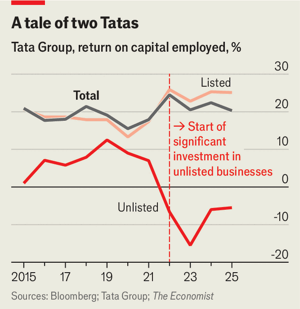
在政府管理下运作不善，但2025年5月短暂冲突后印度关闭领空、去年6月致命空难以及海湾战争对喷气燃料市场的干扰，进一步加剧了其困境。塔塔数字——旨在打造一个销售塔塔消费产品组合的超级应用——正在缩减规模。唯一亮点是塔塔电子，该公司与台湾富士康共同在印度制造iPhone，目前小幅盈利，但需更多投资以嵌入手机和半导体供应链。与荷兰ASML合作，塔塔正在印度西部Dholera建设110亿美元芯片工厂。电池制造项目Agratas同样渴求资金。印度政府已为塔塔的芯片和电池工厂提供补贴。■
英国政府的拨款也助力英格兰一家电池工厂的建设，以供应捷豹路虎。然而，未上市实体的综合回报率（ROCE）为-5.5%。更糟的是，塔塔咨询服务公司（TCS）的前景似乎愈发不明朗。自2024年底以来，其股价已下跌逾半，主要源于投资者对生成式人工智能可能削弱印度IT外包商的担忧。尽管如此，其盈利尚未受到明显冲击：同期营业利润增长了12%。即便如此，塔塔集团还需在扭亏为盈印度航空并进军高科技制造的同时，为印度最大IT企业制定适应人工智能的策略。钱德拉塞克拉伦先生因此面临多重压力：向塔塔信托支付股息、收购米斯特里家族股权以及投资新业务。这一难题又因另一场长期争议而加剧，即塔塔集团是否应保持私有化。■
印度储备银行（RBI）要求其上市。RBI的一项规定要求那些从事银行业务但受不同监管的非银行金融机构必须上市。尽管塔塔集团控股公司从事投资业务，塔塔集团（Tata Sons）认为其并非银行，也不在储户与借款人之间进行中介。该公司已申请豁免，但RBI至今未批准。上市将使塔塔集团能够为其新项目筹集资金，同时SP集团可出售股份。分析师估算，即便考虑约三分之一的集团折扣，该公司估值可能达到1200亿至1500亿美元。但塔塔信托（Tata Trusts）抵制这一想法。公开募股可能意味着家族失去控制权，并可能威胁塔塔集团在印度工业发展中的特殊角色。■
苏纳瓦拉（前公司副总裁）正在撼动一个历经百年演变的结构。贾姆谢特吉·塔塔未能亲眼见证所有梦想成真：他于1904年去世时，仅完成酒店部分。水电站则迟至十年后才开始运转。塔塔集团的现代管理层可能没有那么长的时间。■ 要追踪塑造商业、工业和科技趋势的动态，请订阅我们的周度专属读者通讯《The Bottom Line》。
§055 如何推出科技产品 |原题：How to launch a tech product · 板块：Business · 栏目：商业
如何推出科技产品
创造精致、无讽刺的公司安全空间
过去一个月，苹果公司宣布了Siri语音助手的升级方案；谷歌推出了可代为执行任务的新搜索代理；英伟达则发布了面向个人电脑的新芯片。这些公司均在其开发者大会上披露了相关计划，还有更多细节。不仅是科技巨头将产品路线图转化为戏剧性展示，任何自视甚高的企业科技公司都会举办全球性会议，向其“社区”（如SAP的Sapphire大会、Oracle AI World等）传递信息。Salesforce和Stripe等公司则通过路演将信息传递给国际用户。这些盛会意义重大。偶尔，最明显的是2007年iPhone的发布，它们会彻底改变世界。
它们向投资者、开发者和用户传递企业产品管线的信息。这些活动还为内部团队设定了截止日期：所有企业都可能受益于日历上几个固定的节点，必须展示自己的进展。但对认为科技行业存在群体思维的观察者而言，这些活动并未带来安慰。很快就能发现精心设计的虚假公式。演讲者之间交接时会说诸如“接下来有凯文”或“要了解更多细节，有请约翰”之类的话。合成电子乐作为为开发者量身定制的背景音乐，会在一人离场、另一人登场时轰然响起。（苹果公司采用视频发布会形式，镜头会找到在库比蒂诺校园中若隐若现的凯文或约翰。）
凯文或约翰将穿着敞开领口的衬衫、深色长裤和带有白色缓震鞋底的鞋子。唯有来自枯燥行业的客户，比如银行业人士，才能在舞台上穿着合脚的鞋子——他们的作用是展示受监管行业是客户，因此他们必须显得沉稳得体。没有人可以系领带。如果你看到有人系着领带，那一定是保安。凯文或约翰或任何其他人将大步走进视野，双脚分开站立，等待音乐停止。他们会注视观众，出于不明原因说一声“哇！”随后看向自动提示器开始讲话。每三秒钟，他们将从两侧抬起双手，仿佛举着一张纸板盒子。为了增添趣味——他们可不是机器人！——他们偶尔会伸出双手，仿佛每只手里都握着一个芒果。■
每两分钟，他们就会走到舞台一侧，双脚站立，再次开始做“盒子”或“芒果”动作。无论基思（Kevin）或约翰（John）宣布什么，他们都会声称自己“超级兴奋”。他们可能在向世界宣布发现了传送技术，或透露某款设备现已推出新颜色，但从他们单调而狂热的表达中，根本无法分辨出这些内容。产品发布会是企业安全空间。一切应经过精心排练，以确保呈现效果。若邀请客户登台，无论是否穿了合脚的鞋子，他们都会被问及诸如“你对我们的合作感到多兴奋？”“为何你们公司如此优秀？”之类的问题。舞台上的演示台，有人似乎能不用手打字。■
在宣布最新突破后，Kevin或John会稍作停顿，让观众以为即将有反应。轻柔的掌声，如窃窃私语般的掌声将开始。自动提示系统并未为Kevin或John准备这种场景，他们将因困惑而停止。这将立刻让掌声停止。Kevin或John会通过举例说明他们如何在生活中使用技术，来个性化新产品功能。这些故事通常涉及烹饪或为他人购买礼物。目的是展示他们如何异常普通。效果却有所不同。大多数人拥有家庭；而技术专家则与扩展的alpha测试参与者共同生活。讽刺将无处不在，唯独在舞台上缺席。Kevin或John将演示如何轻松利用技术安排与朋友的聚会。■
他们将谈论人类的独特性，每个人都有潜力做出非凡之事，却从不流露出任何个性。凯文（Kevin）或约翰（John）的环节将如开场般结束。他们会说：“现在轮到罗汉（Rohan）”或“接下来是迈克（Mike）”，然后走下舞台，而他们身后的巨型屏幕开始播放炫目画面，背景音乐再次响起。罗汉或迈克将大步走上舞台，站在前任主持人的位置，说出“哇！”■ 订阅者可注册《经济学人》的Opinion电子简报，汇集本刊最佳评论、专栏文章、特邀评论及读者来信。
§056 世界杯成了商界失意者的节日原题：Tournament of losers · 板块：Business · 栏目：商业
人们常说，金钱毁掉了足球。将男足世界杯主要举办地设在美国——一个诞生了众多成功商人却鲜有优秀足球运动员的国家——本应标志着商业对足球的胜利。确实，门票价格令人咋舌。而本届赛事往往让人联想到2016年的硅谷会议：今年裁判头戴摄像头，每位球员都有自己的“数字孪生”（whatever that means）。然而尽管主办方大肆渲染，世界杯足球的生意其实简单而艰难。■
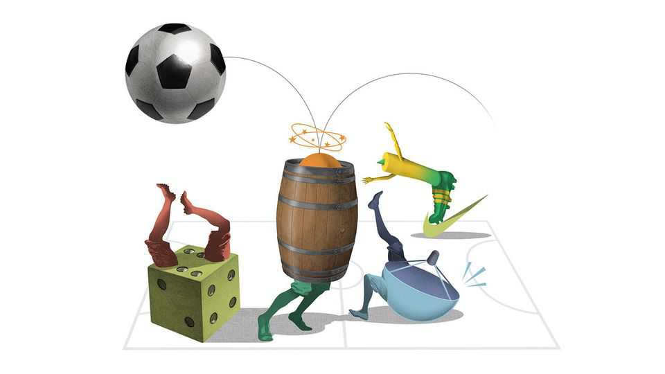
资本主义的首发阵容——零售商、电视台、啤酒商和博彩公司——正逐渐老化且伤痕累累。对某些企业而言，这或许将是它们参加的最后一届赛事。世界最大体育赛事演变为被审判企业的狂欢，最直观的体现莫过于赛场。球员左胸佩戴着国家队徽章，右胸则印着濒临衰落的运动品牌logo。耐克（Nike）为本届赛事12支队伍提供装备，少于阿迪达斯（Adidas）的14支，略多于彪马（Puma）的11支。其余队伍则依赖早已式微的巨头（刚果民主共和国是英国品牌Umbro的唯一客户，该品牌曾为最多球队提供装备）或本地工坊（伊朗国家队由名为Majid的公司打造，该公司名称与该国短程导弹防御系统同名）。■
三大运动品牌如今的价值均低于2018年，当时法国在全由耐克赞助的决赛中击败克罗地亚。美国公司近年来从全球文化无处不在的地位骤然跌落，其股价自2021年峰值以来已下跌四分之三。来自On（瑞士品牌）和亚瑟士（日本品牌）等竞争对手的冲击部分解释了这一下滑。分析人士认为，缺乏令人兴奋的新产品才是行业低迷的主因。对此很难有异议。阿迪达斯设计的“Trionda”足球堪称乏善可陈，它既不像1970年墨西哥世界杯的“Telstar”那样优美，也未能再现2006年德国世界杯“Teamgeist”所具有的赛事主办国特色。而今年球员所穿球鞋虽设计惊艳，却惊人地相似——多数均为粉色调。
更令人担忧的是耐克（Nike）新推出的“空气贴合”（Aero-FIT）衬衫，部分款式显然不合身。肩部缝线导致面料突出，使身材瘦小的穿着者看起来像小精灵。应国际足联（FIFA）要求，这项由19世纪体育规则演变而来的运动，如今已从上下半场改为四节制。总部位于瑞士的管理者称，新增的中场休息（也称“Powerade补水暂停”）是因夏季高温所致。球迷们私下议论，这些暂停时间让电视台能播放更多广告。或许这些补水暂停是企业慈善行为？但还有比这更需要帮助的受助者吗？■
福克斯公司拥有在美国转播世界杯的版权，它在比赛间隙的广告时段中大量插入了广告，其中大部分似乎都邀请了大卫·贝克汉姆出演。该公司股价在去年一度回升，但近期却出现下跌。其他频道的日子则更不乐观。在法国，世界杯转播由M6电视台负责（其股价曾在2000年达到峰值）；在英国，一半的转播权属于ITV（2015年）；而在美国，许多西班牙语观众则通过Comcast的Telemundo观看（2021年）。一场包含更多比赛的世界杯（104场，比上届的64场增加了）本应带来更多的饮酒消费。然而啤酒商们同样面临困境。富裕国家年轻人中兴起的节制饮酒浪潮，是该行业最大的挑战。世界杯或许能成为这种过度谨慎的完美解药，但英格兰队历史上以酒量出众的球员们却如此热衷于推动这种节制。■
球员们今年可以注意到有人佩戴着Whoop，这款腕部可穿戴设备深受过度思考者和微醺者青睐。热刺队长哈里·凯恩（Harry Kane）则推广着另一款热门神经质首饰Oura戒指。一些酿酒商仍视赛事为孤注一掷的赌注，全球最大的啤酒商预计今年啤酒销量将因赛事增长0.2%至0.3%。美国酿酒商将因主办赛事受益。不过据摩根士丹利（Morgan Stanley）分析师分析，最终实际消费量更多取决于哪些球队能晋级赛事。从这个角度看，淘汰赛也成了参赛国最受欢迎啤酒的“固定节目”。（然而意外出局可能导致大量库存积压，如2006年和2010年英格兰提前出局时便出现过这种情况。）■
同样的逻辑也适用于博彩行业：赛事越刺激，投注公司赚得越多。投资者同样对它们感到厌恶。据德意志银行预测，博彩行业两大巨头Flutter和DraftKings在美国的客户预计会投注约24亿美元。这两家公司的股价今年分别下跌了50%和20%。不过，与酒类行业的同行不同，他们面临的生存威胁完全是自找的。观察世界杯传统企业逐渐退出赛场比预测未来赛事的接班人要容易得多。若大型运动服饰品牌持续滑向无关紧要的境地，谁能穿上球衣仍是未知数。作为最大的预测市场，Kalshi和Polymarket可以说是明智的选择。■
如奈飞（Netflix）和亚马逊（Amazon）等流媒体巨头亦然：终有一日，赛事规模与线性电视的无关性之间的差距将不可逾越。此事成败很大程度取决于国际足联（FIFA），它不像那些早已过气的公司，仍保有垄断地位。无论谁入主球队，教练席始终由同一人坐镇。■ 订阅《经济学人》的读者可注册我们的观点通讯电邮，汇集本刊最佳评论员文章、专栏、特稿及读者来信。
§057 人工智能经济学的领军人物原题：Meet the world’s top AI-pilled economists · 板块：Finance & economics · 栏目：财经
人工智能已创造数万亿美元的市场价值，将少数科技极客变成了名人。公众既兴奋又恐惧。从比尔·盖茨到埃隆·马斯克等智者都表示，这项技术才刚刚起步。然而与学术经济学家交谈时，多数人却对研究这项可能改变世界的科技影响表现出异常的冷淡。人工智能经济学的重心正逐渐从大学转移，一群“AI加持的经济学家”正引领这一变革。大学研究者在想要时也能快速行动。
2008年雷曼兄弟这家投资银行倒闭并引发全球金融危机后，经济学家们将对银行挤兑和信贷紧缩的研究从一个小众领域转变为主流议题。2020年新冠疫情爆发两个月后，美国国家经济研究局（NBER）发表的经济学工作论文中，近三分之一聚焦于疫情的影响。其中一些研究突破了学术圈，例如斯坦福大学专注于远程办公研究的尼古拉斯·布洛姆（Nicholas Bloom）以及布朗大学研究学校停课的艾米丽·奥斯特（Emily Oster）。相比之下，自ChatGPT问世开启人工智能时代已近三年半，对这项技术的经济学分析仍相对稀缺。■
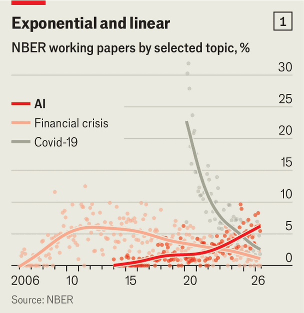
美国国家经济研究局（NBER）聚焦人工智能的论文比例正在上升，但增速并不显著（见图表1）。即便在2024年，新冠紧急状态结束、人工智能时代真正开启之后，新冠相关论文数量仍超过人工智能相关论文数量。今年NBER主办的医疗健康主题会议数量可能仍多于人工智能相关会议。部分学术经济学家已积极投身人工智能领域（见图表2）。斯坦福大学的苏珊·阿特希正在研究人工智能导致失业的潜在影响。弗吉尼亚大学的巴利斯·哈珀林则清晰阐述了金融市场如何定价人工智能发展。但无人能与布洛姆先生或奥斯特女士的知名度相提并论。■
鲜有经济学家意识到这一领域的研究潜力。“一位顶尖学术经济学家表示，他感到震惊的是，许多同事甚至没有尝试与Anthropic或OpenAI进行交流。”这位学者坚持自己经常与AI实验室保持沟通。目前存在的研究成果大多高度抽象。根据专注于经济学的文献数据库ideas/Repec显示，麻省理工学院（MIT）的达龙·阿克丘卢（Daron Acemoglu）是AI经济学领域排名最高的学者。他2024年发表的一篇论文构建了一个复杂的AI经济成长模型，预示着温和的整体生产率提升，该论文已获得超过1000次引用。但乔治梅森大学（George Mason University）的泰勒·考文（Tyler Cowen）认为，该模型低估了新AI产品上市可能带来的变革性影响。“当前AI带来的收益显得微小，是因为模型假设AI不会从事全新的工作。”
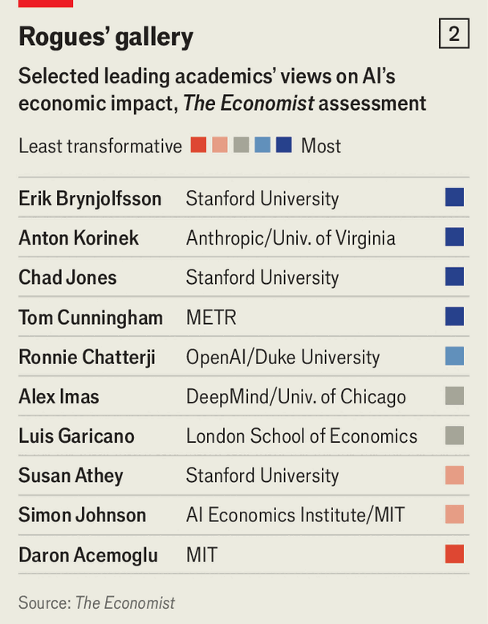
许多与人工智能相关的实证研究似乎都建立在错误的假设之上。斯坦福大学的埃里克·布里约夫松（Erik Brynjolfsson，按ideas/Repec排名第五）及其同事的研究指出，年轻人在涉及人工智能技术的职业中就业比例大幅下降，这似乎表明该技术已开始重塑劳动力市场。然而，将这一趋势归因于人工智能意味着相信企业早在Chatgpt首次发布时就已开始裁减年轻员工——而当时的产品远未达到足以替代人类的水平。学术经济学家行动缓慢且粗心的原因有两个。第一个原因与人工智能所代表的冲击类型有关。2020年新冠疫情几乎一夜之间改变了世界，其影响在数据中几乎立即显现（见图表3）。相比之下，人工智能正在经济体系内部悄然改变经济。■
经合组织（OECD）成员国的平均失业率与ChatGpt发布时基本持平。GDP数据中几乎没有任何与人工智能相关的具体信息——例如对人工智能数据中心的投资，只能大致估算。由于缺乏明确的宏观经济影响和微观经济数据，学究们几乎没有分析的素材。第二个因素是经济学家整体上较为技术怀疑论。历史研究表明，技术确实能提高收入，但速度缓慢，各种非技术因素（包括金融摩擦和文化阻力）会抑制其发展。在英国，工业革命的技术突破要经过数十年才转化为更快的经济增长。哈珀林先生及其同事最近的一篇论文，基于一项调查结果，反映了这种怀疑态度。■
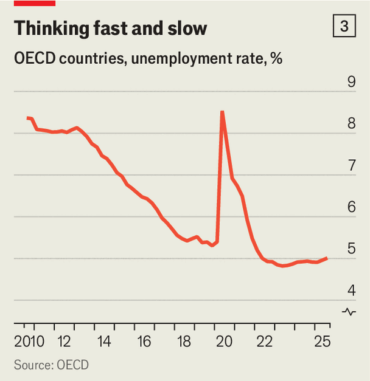
即便在人工智能进展“快速”（即到2030年人工智能能与最聪明的人类竞争甚至超越）的假设情景下，多数学术经济学家仍预计到2050年美国GDP增长仅为3.5%（相比之下，人工智能研究者则预计为5.3%）。根据芝加哥大学的一项调查，仅有11%的顶尖经济学家认为未来十年人工智能的普及“将显著推高发达国家的失业率”。若多数学术经济学家不认为人工智能具有变革性，他们可能更倾向于继续研究他们认为更重要的领域。对人工智能感兴趣的经济学家正逐渐转向两个远离学术界的领域：政府机构，尤其是统计局和中央银行。美国人口普查局和加拿大统计局的调查则追踪人工智能在经济各领域的应用情况。
英国央行每月召开的“决策者小组”正研究企业对人工智能（AI）的认知，而英国政府近期成立人工智能经济研究所（AI Economics Institute）以推动相关研究。在最近一次经济合作与发展组织（OECD）会议上，政府财政官员对如何更新AI时代的生产率衡量标准感到困惑。尽管这些工作未必能掀起全球性影响，但它们为未来经济学家提供了关键的数据基础设施，履行着重要的公共服务职能。目前，更多专注于AI研究的专家正活跃于科技前沿。2010年代，AI实验室吸纳了大量顶尖计算机科学家以构建其模型。芝加哥大学的Ufuk Akcigit与同事发现，到2019年，超过三分之二的AI研究人员已转入工业界工作，而2001年这一比例不足一半。如今，类似趋势正发生在经济学家群体中。■
Anthropic公司已聘请弗吉尼亚大学的安托尼·科里内克（在思想排名中位列第二）加入其经济学研究团队。OpenAI则聘任杜克大学的罗尼·查特里吉担任首席经济学家。谷歌DeepMind这家科技巨头旗下的前沿实验室近期聘任芝加哥大学的亚历克斯·伊马斯担任“通用人工智能（AGI）经济学主管”（指能与人类在多数智力任务中匹敌或超越的人工智能）。据《经济学人》粗略统计，数十位悲观的科学家已接受大实验室的工作邀约。人工智能实验室的吸引力显而易见。它们拥有最佳数据资源，也掌握政策制定者的耳目。一旦加入此类机构，不久后硅谷最受欢迎的播客主持人达瓦克什·帕特尔就会在节目中采访你。科技公司也比大学拥有更雄厚的资金实力。■
即便是在AI实验室中担任初级经济学家的职位，年薪也可能高达30万美元以上：虽然相对于AI程序员而言不算高，但远超初任教授教授《经济学原理》（Econ 101）的收入水平。（一些幸运者或许能获得全球最热门企业的股票期权。）外部AI研究的质量正在提升。在彼得森国际经济研究所（智库）的研究中，Korinek先生与加拿大银行的Patrick McKelvey共同构建了他们所谓的“AI GDP”模型，用于美国经济分析。该研究显示，若以正确方式衡量，AI GDP在2024年和2025年分别增长了超过2000%。Imas先生发布了一款实用的追踪工具，用于监测AI对生产率的影响。根据他的判断，存在令人鼓舞的微观层面生产率提升证据，但缺乏宏观层面显著影响的证据。这一切都令人激动（至少对那些沉迷AI的经济记者而言）。■
但即便有科里内克先生或伊马斯先生的精巧研究，实验室仍不断推出令人失望的成果。Anthropic公司高调发布的“经济指数”实际上并非真正的指数，而只是其聊天机器人Claude使用数据的随机集合。今年三月，Anthropic发布报告称“人们通过经验会更熟练地使用Claude”，这有什么奇怪的。去年OpenAI发布的描述性研究显示，ChatGPT上20-25%的对话涉及“信息检索”，内容引人入胜。毫无疑问，AI质量会随时间提升。然而，若前沿AI研究转向企业内部，经济学家可能将追随微软、谷歌等科技公司“科技经济学家”的研究路径。这些专家通常较少关注社会影响的重大问题（如社交媒体是否有益于儿童），而更专注于狭窄议题，例如如何设计广告拍卖机制。■
阿克奇提（Akcigit）的研究指出，人工智能研究者在永久性从学术界转入产业界后，发表的论文数量减少，但专利数量增加，实质上是“从开放科学转向专有创新的转变”。利益冲突同样不容忽视。实验室研究者可能面临压力，需发表让人工智能看起来更有用且更安全的研究成果。去年，经济学家汤姆·坎宁安（Tom Cunningham）因对自身可发表内容的限制感到沮丧，最终离开OpenAI，转投专精于评估人工智能模型及其潜在威胁的机构Metr。在充满无限可能却也潜藏巨大风险的世界中，社会亟需保持中立的研究者说出真实想法。学术经济学家仍有提升空间。■
如需了解经济学、金融和市场领域最重要的新闻的专家分析，请订阅我们的周度专属通讯《Money Talks》。■
§058 美国股市牛市已进入癫狂阶段原题：America’s bull market has entered its manic phase · 板块：Finance & economics · 栏目：财经
过去两年多来，美国股市并未处于泡沫中的最佳论据，是市场尚未表现出癫狂的迹象。是的，股价已飙升，是的，估值已高得离谱，以至于股东预期的未来回报正变得越来越令人失望。是的，意外回报的可能性也在下降，因为几乎所有人都已确信企业盈利将持续飙升，而人工智能将彻底改变经济。但真正的泡沫需要更多要素。投资者仅仅锁定明天的利润并不足够。
股市价格真正脱离现实往往是在狂热情绪全面爆发之后。随后便出现狂欢者们那种苦涩而执着的坚持——他们明知第二天的宿醉会让人难以承受，却仍想尽可能拖延。当这种拖延已不可能时，崩盘便随之而来。如今是否已进入狂热阶段？试想向十年后的时空旅行者讲述：6月11日SpaceX以1.8万亿美元估值出售股份，其估值高达年收入的90倍。这是否疯狂？不，对买家而言这是一笔绝佳交易，因为这家火箭公司据称向投资者表示，其人工智能部门的销售额到2030年将增长100倍，达到3220亿美元。为何关注收入而非传统以利润衡量公司价值的方式？因为SpaceX从未盈利；去年它亏损了50亿美元。其上市后四个交易日，股价已上涨逾40%，估值达到2.5万亿美元。■
与此同时，它同意以600亿美元的股份收购Cursor这家AI编码公司。有人可能认为，这种做法并不无道理，因为埃隆·马斯克（Elon Musk）作为SpaceX的创始人，似乎具备扭曲金融市场和现实的能力。但投资者的狂热情绪远不止局限于全球首位万亿富翁。以标普500指数为代表的美国股市，其价格相对于长期盈利水平仅略低于2000年互联网泡沫顶峰时期。本周股价再度上涨，因唐纳德·特朗普总统终于似乎真正达成了与伊朗的和平协议。要最清晰地展现投资者的躁动情绪，不妨超越股市，观察期权市场的交易。期权常被描述为保险合同：例如，一个简单的“看跌”期权赋予持有者在到期日以特定“行权”价格卖出股票的权利，但并非义务。■
这使投资者能够在持有股票的同时限制价格暴跌时的损失——前提是支付期权购买费用。然而，如今期权市场更常被视作一个赌场，投机者在此押注股价走势。毕竟，看跌期权本质上是一种押注，认为到期日标的股票的市场价格将低于行权价。若如此，投资者可按市价买入股票，以更高的行权价卖出，赚取差价；若不行，则期权作废，损失即为支付的期权费。相反，看涨期权赋予投资者买入而非卖出股票的权利，本质上是对股价上涨的押注。股票期权交易量激增。美国期权清算所（OCC）2025年的交易量几乎达到2020年的两倍，而2020年本身已是交易量异常火爆的一年。■
到2026年，它们的涨幅预计还将进一步扩大。而用于投机的超短期合约交易量增长速度更快，这类合约虽适合赌博却几乎无法提供保险功能。芝加哥商品交易所（CME Group）数据显示，2025年到期日与当日相同的标普500指数期权交易量较2021年增长了3.7倍。尽管如此，期权的保险功能仍应意味着看跌期权（puts）需求高于看涨期权（calls）。多数机构投资者无需防范价格突然上涨，但许多机构（比如大学捐赠基金）则需要防范市场暴跌。此外，市场往往缓慢上涨却快速下跌，这使得看跌期权比同等价值的看涨期权更具吸引力。寻求此类保险的机构通常规模远大于投机者，因此对市场走势影响更大。■
纳斯达克指数中科技股的平均看涨期权如今几乎与平均看跌期权价格相当。这意味着投机者们疯狂交易的活跃度甚至超过了保险买家的规模——他们押注价格将冲上月球或火星。狂欢正在进入失控阶段，可能持续一段时间。但拖延越久，后果越严重。■ 订阅《经济学人》的读者可注册我们的观点通讯，汇集最佳领袖评论、专栏文章、特稿及读者来信。
§059 达成协议还是不达成原题：Deal or no deal, oil prices will stay volatile for months · 板块：Finance & economics · 栏目：财经
能源市场迎来一丝喘息之机。一份旨在结束美伊战争的备忘录要求在30天内解除对伊朗港口的海军封锁，并重新开放霍尔木兹海峡。尽管唐纳德·特朗普及其伊朗对手仍在商讨和平协议的细节，但全球有望恢复15-20%的常规石油和液化天然气供应。但所有进展仍可能因小规模冲突或对细节条款的分歧而受阻。然而，双方都有动机停止冲突。
■
伊朗经济濒临崩溃，亟需恢复石油出口；特朗普希望在11月中期选举前降低汽油价格。市场正押注和平。布伦特原油，全球基准油价，已跌破每桶80美元，从5月时的逾110美元大幅回落。一些分析人士预计明年将出现石油过剩，因供应恢复速度将快于需求增长。乐观者或许过于提前了——至少在短期内如此。Argus Media价格报告机构的汤姆·里德指出，谨慎的买家尚未大量订购海湾原油。即便协议得以维持，油轮也必须开始返回海湾而非离开，生产需重启，全球炼油能力需提升——所有这些都需要时间。在此之前，霍尔木兹海峡必须首先清除水雷。《经济学人》获得的一份来自伊朗革命卫队（IRGC）的地图显示，水雷被精确布置在船只通常航行的航道上。■
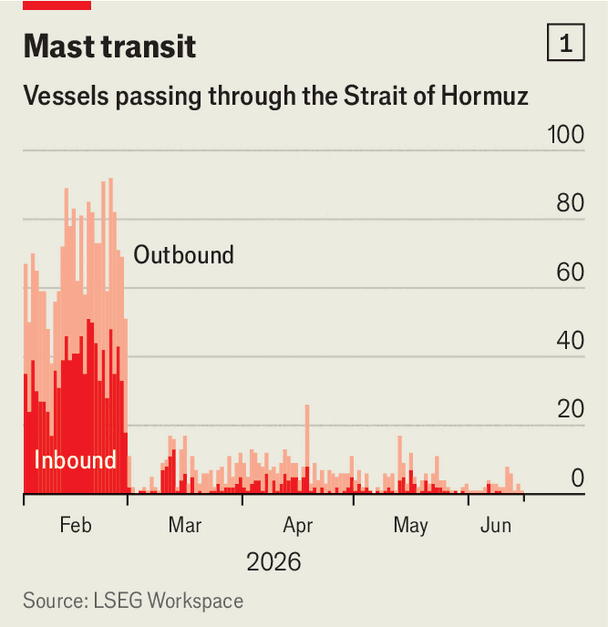
伊朗与阿曼沿岸的替代航线危险且狭窄。鲜有船只敢于冒险通行（见图表1）。美国在该地区部署了扫雷舰，英国和法国也表示愿协助伊朗残余海军。胆大的船只将在扫雷行动完成前尝试通行。一名希腊船主称他即将如此行动。据Argus报道，几家保险公司已为部分客户将波斯湾航线附加保费下调50%。瑞士贸易商Mercuria、越南炼油厂和中国进口商正寻求下周运载波斯湾石油的船舶。但多数船主可能等待扫雷完成，这可能耗时六周或更久。Kpler这家船舶追踪机构估算，目前在海湾待命的118艘满载油轮通常需10至15天完成离港，但因扫雷作业进行中，实际时间将更长。随着油轮陆续返航，海湾产油国将开始增产。
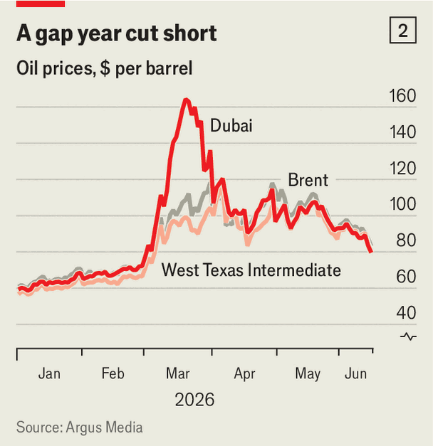
他们报告称油田未出现严重受损。多数油田具备足够的备用储存能力，可在海上瓶颈完全解除前提升产量。Gunvor交易员弗雷德里克·拉塞雷（Frédéric Lasserre）表示，像沙特和阿联酋这样的大型轻质原油油田应在三个月内恢复战前产量。多数分析人士预计，海湾整体产量将在7月中旬恢复至2月水平的30-50%，9月中旬达到60-70%，年底则有望恢复至80-90%。在此情景下，布伦特原油价格将逐步接近每桶75美元。霍尔木兹海峡首次关闭时分化的海湾内外油价正在重新趋近（见图表2）。不过，战前充裕石油的时代仍远未到来。BRS船务经纪人预测，即便出口船只开始穿越海峡，进口船只可能仍需四到五个月才能全面恢复。■
目前在海湾附近等待的约50艘最大原油运输船，仅能装载相当于战前中东出口量约两周的货物。许多转向安全且收益丰厚的大西洋航线的船舶必须完成当前航程，待海湾货运价格回升后才会返航。保险经纪人Howden的埃利斯·莫利（Ellis Morley）表示，保险公司只会降低保费，待自由航行权得到保障且大型运营商已在霍尔木兹海峡连续航行数周后。尽管伊朗承诺60天内不收取“通行费”，但可能改征“费用”。今年4月，伊朗中央银行确认已收到波斯湾海峡管理局（PGSA）新机构的首笔收入。一项将30%收益分配给伊朗武装部队（包括伊斯兰革命 Guard Corps）的法案已提交议会审议。■
伊朗近期的通讯显示，其将管控流量视为新常态，把无限制通行视为异常现象，一名熟悉内情的人士表示。然而，除非和平协议解除美国对石油地理战略局（PGSA）和伊朗伊斯兰革命卫队（IRGC）的制裁，任何向伊朗支付费用的实体都可能被列入黑名单。因此，即便真正停火协议达成，供应仍将受限。此外，交易员预计美国将取消下一批战略石油储备的释放，使全球失去100万桶/日的出口量。需求通常在夏季上升，但战争结束的消息可能加速需求回升。摩根士丹利预计第三季度将出现340万桶/日的石油供应缺口，全球库存将以210万桶/日的速度消耗，维持油价高位。该银行预测“基准布伦特原油”（未来几周交付的原油）在7月至9月期间均价将达每桶90美元，之后三个月均价为每桶80美元。■
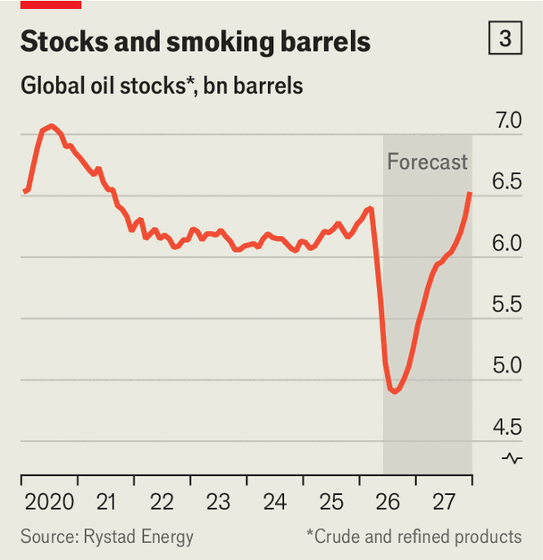
这比该机构2月对同期价格的预测高出20美元。精炼产品的价格甚至更难以预测。亚洲炼油厂必须等待海湾地区的供应抵达。在海湾地区本身，伊朗袭击已损坏了大型炼油厂。进一步的成品油发货延误可能导致非洲（缺乏汽油）、亚洲（大量进口石脑油、丙烷等）和欧洲（依赖中东航空燃料和柴油）的库存耗尽。美国炼油厂可能从出口柴油和航空燃料转回生产汽油以满足国内市场——但国内库存已降至极低水平，加油站油价可能维持高位，甚至进一步上涨。6月17日，国际能源署（International Energy Agency）这位官方预测机构表示，预计明年中东增产及新兴产油国持续活跃将导致石油过剩。■
全球石油库存可能在那时之前触及历史低点（见图表3）。如果各国政府决定重新填充战略储备（或对尚未建立此类储备的国家而言，先建立储备），这可能使2027年全球石油需求增加200万桶/日。中国已削减原油进口500万桶/日——约占全球供应量的5%——可能率先行动。即便供应开始超过需求，咨询公司Rystad Energy认为，伊朗重新掌控霍尔木兹或冲突重燃的风险，可能使全球油价长期溢价每桶10美元。对能源市场而言，战争结束并不意味着不确定性的终结。■ 更多关于经济学、金融和市场的深度分析，请订阅我们的周度专属简报Money Talks。
§060 日本银行迎来新黄金时代却暗藏隐忧 财经版原题：A new golden age for Japanese banks comes with a catch · 板块：Finance & economics · 栏目：财经
近31年来，日本在低增长与通缩反复困扰中，基准利率始终以零为起点，有时甚至为负数。因此日本银行（BoJ）6月16日将利率从0.75%上调至1%的决定具有象征意义。在日本，几乎没有哪家企业比银行更希望摆脱零利率政策。银行的资产负债表在经历了长达三十年的严苛压力后正逐步复苏。自2024年3月日本银行开始加息以来，日本银行股指数已上涨逾两倍，远超整体股市（见图表1）
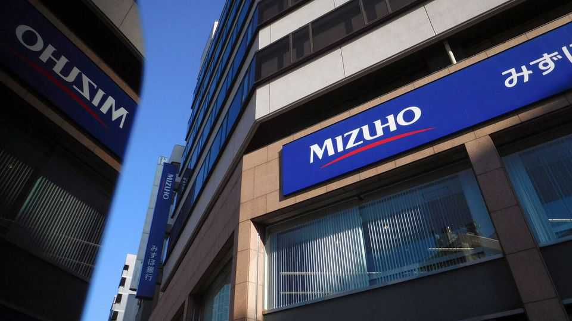
银行从储户处以短期利率（由日本银行设定）借入资金，再以长期利率（由债券市场决定）贷给借款人。在零利率环境下，银行只能向储户支付几乎零利息，却难以从不愿借款的借款人那里获取更多资金。反映利息收入与利息支出差额的“净息差”一度低迷，银行利润也同步下滑。如今，短期与长期利率的差距已从接近零扩大至1.6个百分点。这对贷款方来说应是好消息——前提是它们规模足够大。日本三大巨型银行——三菱UFJ银行（MUFG）、三井住友银行（SMBC）和三和银行（Mizuho）——自2024年以来平均净息收入增长了三分之一（见图表2），它们预计今年将创下利润纪录。然而小型银行仍持续挣扎，其资产负债表可能为整个银行体系埋下隐患。■
2022年至2025年间，日本按资产规模划分的最小五分之一银行的股价涨幅是最大三分之二银行的两倍。部分原因在于银行业本质上依赖规模效应。大银行能利用庞大的资产负债表，在相同的净息差下榨取更多利润，同时分散风险。它们还能将技术等固定成本分摊到更多资产上。相比之下，日本中小银行往往将更高比例的营收用于运营成本，并且持有更多不良贷款，根据资产管理公司Verdad的伊藤直树分析。日本61家地区银行也面临吸引存款的困难。这些银行的存款自2022年以来仅增长6%，而大型银行凭借更便捷的数字银行服务和股票经纪业务，成功吸引了17%的增长，尤其能利用新推出的税收优惠投资账户。■
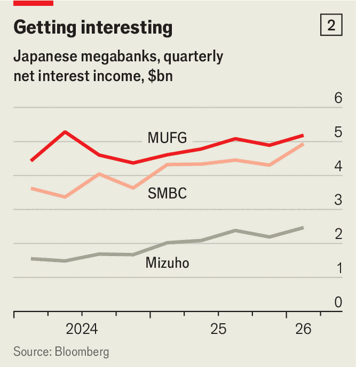
小型贷款机构面临更严峻的问题是处理银行持有的约150万亿日元（9360亿美元）国内债券中属于自己的份额。这些债券多是在利率较低时购入的，目前交易价格普遍低于面值。大型贷款机构可以相对轻松地消化其巨额绝对损失，尤其是随着利润再次回升。但小型银行则没有这样的好运。日本央行今年早些时候发现，区域性银行在日元债券上的损失约占其风险加权资产的2%左右，而约250家信用合作社（shinkin社区银行）的损失则达到4%。鉴于银行通常被建议持有约10%的风险加权资产作为资本缓冲，这一情况令人担忧。应对压力的一种方式是合并。今年5月，爱知（Aichi）和三重（Sanju San）两家区域性银行同意合并，金额达12万亿日元，这是新一轮合并潮中的最新案例。另一种更具争议性的方法则是通过会计手段进行操作。■
日本银行持有的长期国债中，被标记为“持有至到期”而非“可供出售”的比例，据智库AMRO预测，从2019年的零攀升至2025年的近半数。理论上，这种分类能锁定低收益率和本金，降低银行资产组合的利率敏感性。但实际操作中，却可能掩盖威胁银行体系的风险。2023年美国曾险些发生类似情况，当时区域性银行因未实现债券损失而陷入困境。一家银行Silvergate Capital为改善流动性，出售了被标记为“持有至到期”的债券。另一家硅谷银行（Silicon Valley Bank，SVB）则被批评利用类似分类隐藏因利率上升导致的损失，这些损失足以吞噬其资本。目前日本地方银行相较Silvergate或SVB仍显得更为稳健。■
日本央行估计，即便吸收未实现亏损，其持有的证券资产仍有望保持充足资本，部分得益于其在股票市场的盈利投资。但一些小型银行无疑将面临压力，特别是在日本人口老龄化最严重的地区，随着老龄人口加速减少，银行的存款基础也将同步萎缩。日本越快结束零利率时代，这种清算就越快到来。■ 了解更多关于经济、金融和市场的专业分析，请订阅我们的周度会员专属通讯 Money Talks。
§061 唐纳德·特朗普能让拉美成为好投资吗原题：Does Donald Trump make Latin America a good bet? · 板块：Finance & economics · 栏目：财经
在发展中国家，没有哪个地区在过去一年的表现能与拉美媲美。对美国的邻国而言，唐纳德·特朗普的第二个任期令人不安。除了扰乱贸易、推高能源价格（几乎在任何地方都是坏消息），特朗普还决心将意志强加于西半球。他扣押委内瑞拉领导人，向加勒比海派遣军舰，并威胁要入侵古巴。然而拉美也从特朗普式的混乱中受益。2025年，特朗普重返白宫的第一年，外国直接投资（FDI）增至预计2040亿美元，扭转了近期的下滑趋势（见图表1），而流向其他发展中国家的资金则减少。
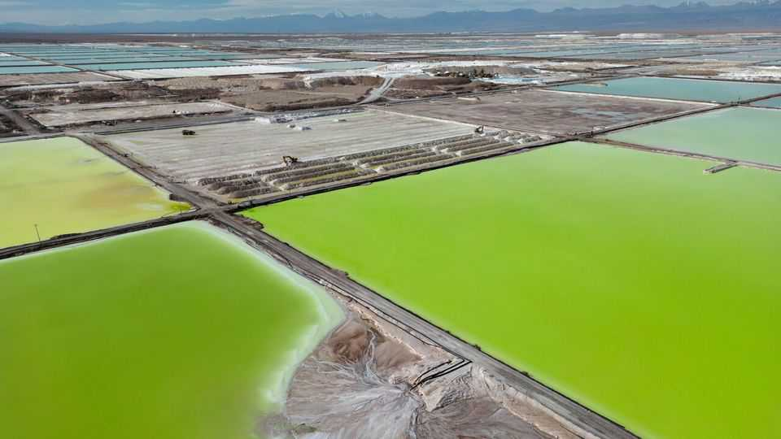
■
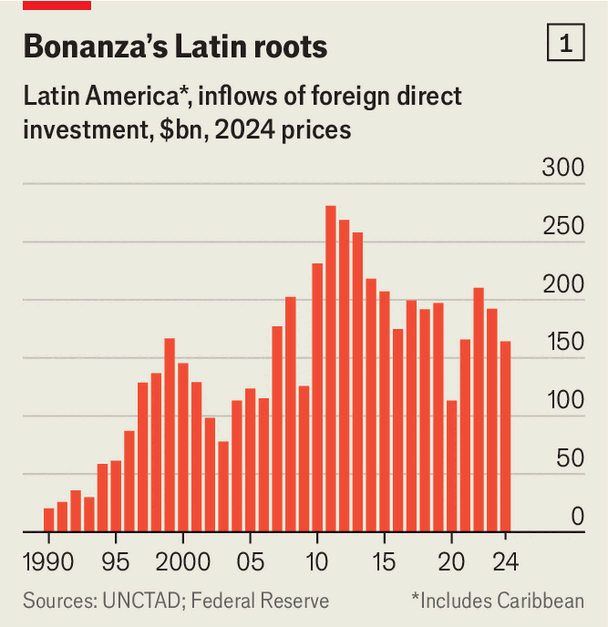
并购交易量几乎翻了一番。MSCI编制的追踪拉美股市的指数自2025年初以来上涨了60%，在大部分时期超越了新兴市场整体表现（见图表2）。拉美地区不再是货币动荡、通胀飙升的所在，这有助于吸引投资。除阿根廷和玻利维亚外，所有33个位于里奥格兰德河以南的国家均实行浮动汇率或与美元挂钩。以控制通胀为目标的央行和财政改革逐步吸引了投资者。2005年至2019年间，该地区GDP平均年增长2.8%。制药、金融科技和矿业均吸引了外资。这并非偶然。特朗普认为美国应加强与希望影响的地区经济联系。投资者认为，拉美地区位列榜首。■
为最明显的例子，10月美国财政部向阿根廷提供200亿美元的掉期线，以协助总统胡里奥·马里奥·米莱（Javier Milei，特朗普盟友）。美国官员表示，有必要通过其他融资渠道来稀释中国的影响。拉美地区拥有大量受追捧的矿产资源，包括全球三分之一以上的铜探明储量和许多稀土元素最可行的矿藏。该地区还出口的石油多于进口。据联合国贸易官员称，去年外资流入增长至少有一半来自美国，其中一小部分来自美国政府本身，一些来自与政府关系友好的企业，其余来自其他私人投资者。2024年3月，美国开发金融公司（Development Finance Corporation）在圣保罗设立其在大陆的第一个办事处。■
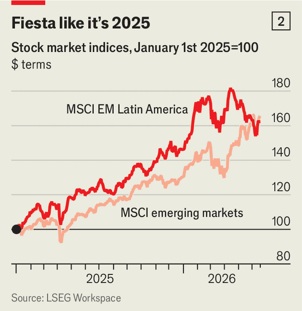
在城市一家高档牛排馆举行的投资者晚宴上，谈话在对最具前景的行业和特朗普下一步可能动用武力的猜测之间游走。采矿业——正经历全球投资热潮——已成为明显受益者。2025年1月至9月期间，拉美地区占该行业并购支出的四分之三。今年美国与阿根廷（锂资源大多尚未开发）、巴拉圭（锂、钛和铀资源国）以及智利（全球最大的铜生产国）达成协议。美国向瑞士注册的Serra Verde公司提供了近6亿美元贷款，该公司正在开发巴西的离子黏土矿藏，该矿藏是稀土资源的来源。一家联邦政府部分持股的美国稀土矿商随后以30亿美元收购了该公司。其他人则押注从秘鲁的黄金到委内瑞拉的钽矿等资源。■
老牌巨头投入巨额资金。美国官员急于获取资源，促使多家公司加速现有项目的推进，一位矿业高管表示。3月，澳大利亚必和必拓公司（BHP）宣布斥资50亿美元扩建其在智利运营的全球最大铜矿。据一名美国官员透露，仅2026年智利将投入超过50亿美元，仅2027年就能开采出资源。另一家大型矿业公司正考虑将部分新矿收益专门用于满足美国客户的需求。特朗普可能正在促使非美国企业采取行动——尤其是中国，其热情在疫情后有所降温。比亚迪这家汽车制造商正在扩大在巴西的业务。1月，智利表示正在考虑建设一条连接香港的海底光纤电缆，由一家中国企业承建。■
美国官员因不满情绪高涨，禁止智利政界人士（智利）进入美国。欧盟也加强了经济联系。一月，欧盟与南方共同市场（Mercosur）的四个成员国签署了自由贸易协议。阿根廷和巴西的牧场主因牛肉生产成本低于欧盟农民，将成为受益者之一。该协议酝酿了25年，但特朗普的关税政策促使政策制定者最终达成协议。据彭博经济研究公司（Bloomberg Economics）测算，该协议最终可能使南方共同市场（Mercosur）四个成员国的GDP合计增长0.7%。繁荣局面未必能持续。投资者兴趣部分源于对特朗普意图在拉美地区构建供应链的期待，正如其官员所称。但特朗普仍剩两年半任期，注意力持续时间短，脾气也更易暴躁。■
他的热情可能会降温。如果他再次诉诸暴力，一些投资者可能会望而却步。尽管近期有所进展，该地区经济仍面临诸多旧问题。巴西作为最大经济体，其财政受不可承受的养老金成本拖累。阿根廷依赖国际货币基金组织（IMF）平衡预算。墨西哥2026年第一季度GDP甚至出现萎缩。再加上基础设施短缺、缺乏技术工人和繁重的官僚主义，整体前景更加黯淡。巴西矿业公司Aclara Resources（成立于五年前，曾获得美国政府500万美元资助）的拉蒙·巴尔瓦·科斯塔表示，尽管这笔资金有所帮助，但他若将部分业务转移至美国，不仅可获得更多支持，还能更接近研究人员和用于加工的化学品。Aclara公司下一座矿石分离设施将设在路易斯安那州。■
超级大国的支持可能是一把双刃剑。■ 订阅我们的每周专属新闻简报Money Talks，获取更多关于经济、金融和市场的深度分析。
§062 古代DNA改写鼠疫史 科学与技术 生物学的鼠疫期刊原题：Ancient DNA is rewriting the history of plague · 板块：Science & technology · 栏目：科技
2011年，一支基因学家团队成功从伦敦东史密斯菲尔德（East Smithfield）中世纪墓地埋葬的遗体牙齿中提取了数世纪前的DNA。除了人类DNA，他们还分离出鼠疫耶尔森菌（Yersinia pestis）的遗传物质，这种细菌正是鼠疫的病原体。这使他们证实了历史学家长期以来的猜测——黑死病（Black Death）确实在1346年至1353年间导致欧洲人口减少一半——这一结论此前始终无法确凿证明。
■
对于一个更常与陶器、古代遗迹和往往模糊的文献记录打交道的领域而言，这种“古代DNA”堪称革命性突破。它使科学家得以以前所未有的细节重构鼠疫的历史。基因组学同样证实，541至549年间袭击拜占庭帝国的查士丁尼大瘟疫也是由鼠疫耶尔森菌（Y. pestis）引发——有趣的是，导致这场瘟疫的菌株并非后来800年摧毁欧洲的菌株的祖先。查士丁尼大瘟疫是历史上首次被记载的大规模疫情，但DNA证据表明，这种疾病早在史前时期就已存在。■
《自然》杂志近日刊发的一项研究显示，丹麦哥本哈根大学与剑桥大学遗传学家埃斯克·维勒斯莱夫（Eske Willerslev）及其团队发现了迄今最早的鼠疫证据：约5500年前，贝加尔湖周边狩猎采集者群体中曾发生两次致命性疫情。这一发现令人意外，因为传统观点认为，像中世纪伦敦或古君士坦丁堡这类人口密集、卫生恶劣的城市环境才是大规模疫情爆发的必要条件。与东史密斯菲尔德的遗体研究类似，维勒斯莱夫团队对这些狩猎采集者的牙齿产生了兴趣。牙齿结构坚硬耐磨，能有效保护DNA免受时间侵蚀。■
由于牙齿内部的牙髓与循环系统相连，人体血液中的病原体DNA也能被保存下来。哈佛大学人类学教授克里斯蒂娜·瓦里内（Christina Warinner）称，牙齿是“一个人生命的生物档案”。目前已有数百个古代鼠疫耶尔森菌（Y. pestis）基因组被成功测序。黑死病的起源已被追溯至现代吉尔吉斯斯坦的伊塞克湖（Lake Issyk-Kul），该地靠近连接中亚与欧洲的贸易路线。而查士丁尼大瘟疫的源头仍存争议。但基因证据表明，它同样起源于中亚，可能出现在公元二世纪。研究人员现已确认，鼠疫耶尔森菌早在新石器时代晚期便已开始在人类中传播。他们发现了现已灭绝的菌株，也有菌株适应环境并存活下来，最终演变成数千年后的致死性菌株，导致数百万人口死亡。■
威廉·威勒斯莱夫博士及其团队对贝加尔湖的DNA进行测序时，发现了两次独立的瘟疫爆发，分别发生在约5050年和5520年前。在晚期新石器时代，四个不同墓地埋葬的近40%的人曾感染过这种疾病，感染率高于伦敦部分鼠疫坑的记录。而感染似乎具有致命性。这一发现意义重大，因为关于早期鼠疫爆发是否与后来的瘟疫一样致命，一直是学术界争论的焦点。放射性碳测定法显示，这些遗骸的埋葬时间相近。多个案例显示兄弟姐妹或父母与子女被一同埋葬，表明疾病在亲属间传播，可能是在相互照料过程中感染。威廉·威勒斯莱夫博士特别指出，儿童和青少年的数量尤其引人注目。■
基因分析显示，西伯利亚鼠疫耶尔森菌（Y. pestis）携带了一种毒素基因，这种毒素如今存在于假结核耶尔森菌（Y. pseudotuberculosis）中，后者是一种与鼠疫耶尔森菌亲缘关系密切的细菌，会导致一种名为耶尔森氏症的疾病。这种毒素是一种“超级抗原”，可能引发免疫系统的强烈甚至致命的过度反应。此类并发症在感染假结核耶尔森菌的儿童中更为常见，而非成人。如果5500年前的鼠疫耶尔森菌也存在类似情况，这或许能解释古代儿童高死亡率的现象。研究结果也挑战了密集人口和接近牲畜是疾病大规模爆发诱因的传统观点。鼠疫耶尔森菌主要寄生于鼠类，如土拨鼠、鼠和老鼠，通常通过跳蚤叮咬传播。■
中世纪城镇和城市中庞大的鼠群及其携带的跳蚤，被认为在黑死病传播中起到了关键作用。但贝加尔湖地区的受害者并非定居的城镇居民，而是以狩猎采集为生的小型流动社群。耐人寻味的是，许多史前鼠疫耶尔森菌（Y. pestis）菌株，包括威廉·威利斯莱夫博士研究中发现的菌株，都缺乏一种帮助细菌在跳蚤体内存活的突变。除了跳蚤叮咬，鼠疫还可通过体液接触或空气中的飞沫传播。威廉·威利斯莱夫博士的研究结果表明，这些替代传播途径可能足以单独引发灾难性疫情。疫情究竟如何开始仍不清楚，但似乎曾多次发生。■
相似的鼠疫菌株在距今仅数个世纪的个体中被发现，却在数千公里外的拉脱维亚和瑞典被检测到。这可能表明，鼠疫耶尔森菌（Y. pestis）曾在欧亚大陆拥有庞大的啮齿类动物宿主库。哥本哈根大学的威廉斯莱夫博士（Dr Willerslev）推测，另一种可能性是通过某种尚未被发现的昆虫传播，这些昆虫可能附着在动物皮毛上，随贸易传播。鼠疫并未消失，但如今已不再像过去那样危险。2010至2015年全球年均报告病例约540例，这是最新可获得的数据。使用抗生素治疗可将死亡率降至20%左右。但追踪鼠疫耶尔森菌等病原体的谱系，对学术历史学家而言并非唯一意义。
研究人员通过追踪病原体在数千年间如何出现、繁盛与消亡，正在建立一份记录，说明哪些遗传突变有助于疾病传播，哪些则未能成功。威尔斯莱夫博士（Willerslev）希望这些数据能为未来疫苗研发和疾病监测提供依据。在仍受新冠疫情影响的世界，此类研究的价值不言而喻。■ 好奇世界？欲享受我们拓展思维的科学报道，请订阅我们的每周会员专属简报Simply Science。
§063 即将到来的厄尔尼诺现象或将成为有记录以来最强的一次 科学与技术 男孩问题原题：The coming El Niño could be the strongest ever recorded · 板块：Science & technology · 栏目：科技
数百年前，秘鲁渔民注意到，每隔几年，赤道太平洋的沙丁鱼就会消失。由于这些消失现象通常发生在圣诞节前后，他们便将这一现象命名为“圣婴”（el niño Jesus，意为“基督之子”）。如今，这一现象被称为厄尔尼诺，被公认为一种周期性出现的气候模式，会改变全球各地的天气。它会导致某些地区干旱，其他地区暴雨，引发热浪、野火，并使全球气温普遍升高。6月11日，美国国家海洋和大气管理局（National Oceanic and Atmospheric Administration）宣布，新一轮厄尔尼诺现象已开始。 ■
这可能是一场前所未有的大事件。厄尔尼诺现象由东太平洋上空风向的转变驱动，这种转变会将一条比常年平均水平偏暖的海面水带入“尼诺3.4”区域（见地图）。任何一次厄尔尼诺现象的强度都以海面温度升高的幅度来衡量。若温度比长期平均水平高出2°C以上，就被视为强厄尔尼诺。全球多数气候模型对今年剩余时间及2027年前两个月的预测显示，海面温度将比长期平均水平高出2.5°C，甚至可能达到3°C。这在科学家记录的75年历史中将是史无前例的。（当前纪录由1982-83年厄尔尼诺现象保持，当时海面温度比长期平均水平高出2.5°C。）秘鲁鳀鱼偏好较冷的水域，因此在厄尔尼诺现象期间会向南迁移。但厄尔尼诺的影响不仅限于秘鲁渔民。■
太平洋的广阔面积以及全球天气系统的相互关联性，意味着每次厄尔尼诺现象都会在全球范围内引发大规模的热量和水分再分配。其结果之一是使全球气温升高。厄尔尼诺现象并非由气候变化引发，但两者会相互增强其影响（见图表）。1997-1998年强厄尔尼诺现象使1998年成为当时有记录以来最热的一年，平均气温比工业化前水平高出近1°C。在2015-16年另一场强厄尔尼诺现象后，这一纪录再次被打破，2016年气温较工业化前水平上升超过1°C。目前的纪录保持者是2024年，当时气温比工业化前平均水平高出1.55°C。气候模型专家认为2027年可能更热。至于各国和各大洲，厄尔尼诺现象的影响则更为复杂多变（见地图）。■
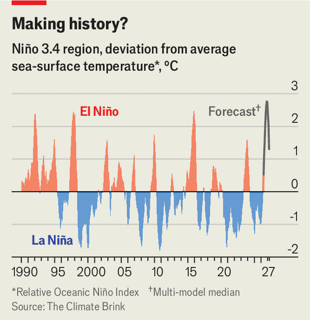
1997-98年和2015-16年的厄尔尼诺现象给东非、南部非洲、中美洲和大洋洲带来了严重破坏。干旱使农田和牧场干裂，导致数百万人挨饿，许多人被迫迁徙寻找食物。此次厄尔尼、诺现象也可能带来类似的恶劣影响。6月9日，联合国粮农组织（FAO）警告称，南部非洲和萨赫勒——一条沿撒哈拉沙漠南部边境延伸的半干旱地带——尤其面临风险。2023-24年最近一次厄尔尼诺现象中，海水温度比正常值高出1.5°C，与南部非洲近百年来最严重的干旱相关。在东非，粮农组织警告称，索马里可能先遭遇持续至10月的干旱，随后12月前将迎来强降雨的双重打击。■
这比听起来要令人不安得多：在长期干旱后出现的强降雨未必能缓解旱情，反而可能引发洪水，因为雨水无法迅速渗入干裂的土壤。中美洲、加勒比地区以及亚洲部分地区也面临干旱风险。这些地区中许多地方本就因战争和既有的饥饿问题而陷入困境。霍尔木兹海峡的封锁使化肥供应陷入紧缺，而许多农民正急需这些化肥用于下一季的作物种植（美国总统唐纳德·特朗普（Donald Trump）于6月14日宣布该海峡将重新开放，但此举的确定性及时效性均令人存疑）。欧盟委员会警告称，乍得、索马里、南苏丹、苏丹以及厄瓜多尔、海地和委内瑞拉等非洲国家正面临人道主义灾难。应对之策包括种植耐旱种子或储备饲料和饮水以供牲畜使用。但行动刻不容缓。■
对世界充满好奇？欲享受我们拓展思维的科学报道，敬请订阅我们的每周专属订阅电子报Simply Science ■
§064 巧克力行业建立在吸血蠓虫的劳作之上 科学与技术原题：The chocolate industry is built on the labour of bloodsucking midges · 板块：Science & technology · 栏目：科技
全球巧克力行业收入超过1400亿美元。近年来，作为关键原料的可可豆市场常常紧俏。2024年4月，西非地区因收成不佳，可可豆价格首次突破每吨1万美元。尽管此后有所回落，但其价格仍显著高于本世纪初的水平。因此，全球农民正迎来提升产量的良机。一种方式便是更高效地为现有植株授粉，以期在下一代可可豆中获得更高产量。■
不过，问题在于：人们始终不清楚可可植物是如何授粉的。如今，布鲁塞尔自由大学（Vrije University）博士生伊丽莎·范·德·桑德（Eliza Van de Sande）的研究成果发表于《基础与应用生态学》（Basic and Applied Ecology）期刊，揭示了一群微小的吸血小蚊子在这一过程中的关键作用。许多植物依赖与动物之间的进化契约完成授粉。植物分泌高能量花蜜吸引动物（通常是昆虫）前来访问。但为了获取花蜜，动物必须深入花朵内部，这一过程中它们会沾满花粉，同时也会抖落粘附在身上的其他植物花粉。农民们常通过打造吸引授粉昆虫的农场环境来促进这一过程。可可授粉者长期神秘的原因，主要在于其解剖结构的特殊性。■
可可花体积微小，结构复杂，且被花冠遮蔽，内部情况难以观察。更糟糕的是，许多访问可可花的访客都是微小飞虫，且极难辨识。范·德·桑德女士及其团队观察了马来西亚和法属圭亚那农场中可可花的访客昆虫。与以往多数研究仅统计访客数量不同，该团队直接打开花朵进行检查。他们观察内部昆虫是否与花朵的生殖器官发生互动，随后捕捉昆虫检测其是否携带可可花粉。蚂蚁、蜜蜂和双翅目昆虫均被发现存在于花朵内部。但研究人员共采集的449只昆虫中，有439只为双翅目昆虫。■
在这些昆虫中，有185只属于咬人蚊，它们常被观察到与植物生殖器官互动，约三分之一的时间身上沾满可可花粉。其他昆虫则几乎没有参与授粉的迹象。这些结果强烈表明，咬人蚊是可可授粉的主要推动力。因此，它们可能是提升可可产量研究的重点对象。范·德·桑德（Van de Sande）及其同事还发现，这些蚊子在凉爽潮湿的环境下活动更为频繁。这对可可种植者来说可能是个坏消息，因为受气候变化影响，许多种植园正变得越来越温暖干燥。幸运的是，他们仍有应对之策。■
范·德·桑德女士指出，"农林复合系统"技术，即在种植园中种植本地树木以提供遮荫、降低温度并增加湿度，可能是吸引更多传粉者迁徙的一种方式。诚然，对农民来说，试图吸引更多吸血蚊子可能难以说服。但此举或许能提高他们的产量。■ 您对世界充满好奇吗？要享受我们拓展思维的科学报道，请订阅我们的每周专属会员通讯《Simply Science》。
§065 植物如何监控竞争者 科学与技术原题：How plants keep tabs on the competition · 板块：Science & technology · 栏目：科技
考虑到植物生长缓慢且无法移动，它们彼此竞争的设想似乎有些荒诞。然而事实并非如此。它们为争夺水分、养分和传粉者展开竞争。由于一片叶子可能成为另一片叶子的阴影，朝向阳光生长可能是一场生死较量。正如任何冲突中一样，间谍活动同样重要。发表于《实验植物学杂志》的一篇论文揭示了植物如何进行这种间谍活动。植物学家早已知晓植物之间可以互相交流。一种方式是通过挥发性有机化合物（VOCs）。例如，当植物遭受害虫攻击时，它们释放的VOCs组成会发生变化。
此前的研究表明，这种现象会促使邻近植物提前提升自身防御机制，以应对可能的攻击。然而，尚未有人探究植物是否能检测到健康邻近植物释放的挥发性有机物（VOCs）。因此，瑞典农业科学大学的生态学家维莱米尔·尼克维奇（Velemir Ninkovic）决定开展实验。他与团队成员共同种植了三种生长速度不同的大麦品种——一种生长迅速，一种生长缓慢，一种则处于中间速度。这些植物被置于相邻的生长舱内，但无法通过遮挡影响邻近植物。植物之间唯一的联系是通过单向通风口实现的，这些通风口连接着各自的生长容器。研究人员借此可以将一个舱室的空气吹向相邻舱室，并在25天内监测这种空气流动对植物的影响。■
研究结果令人震惊。当慢速生长的大麦暴露在快速生长亲缘植物的空气环境中时，其生长速度显著加快，产生的生物量比与生长较慢的植物相邻时高出20%。尼克维奇博士推测，这是因为慢速生长的植物能够检测到邻近植物释放的化合物，并意识到在野外至少，如果它们不加快生长速度，就可能被遮挡而失去阳光。而暴露在慢速生长亲缘植物空气环境中的快速生长植物则表现出相反的反应。由于无需急于争夺阳光，它们的生长速度明显放缓。（■）对这些植物的解剖以及对其组织的基因分析，进一步揭示了其中的具体机制。
当落后者将资源转向增长时，先行者则能将更多资源投入代谢成本高昂的防御措施，例如大量制造使叶片对食草动物不具吸引力的化学物质。换句话说，大麦植物能通过化学手段监听竞争对手，并据此调整自身的生长策略。农民们已开始尝试利用挥发性有机化合物（VOCs）提升产量。尼克维奇博士的研究结果表明，他们或许能通过预判害虫来袭引导作物产生防护性化合物，同时在风险较低时促使作物加速生长以提高产量。■ 好奇世界？欲享受我们拓展思维的科学报道，请订阅我们的周度专属通讯Simply Science。
§066 新药瞄准癌症关键调控开关原题：A new drug targets one of cancer’s master switches · 板块：Science & technology · 栏目：科技
科学家们通常并不容易激动。但当数千名科学家在芝加哥会议上起立鼓掌时，说明发生了非同寻常的事。掌声是对革命医药公司（Revolution Medicines）研发的药物达拉克斯利布（daraxonrasib）临床试验结果的肯定。该药物旨在治疗胰腺癌，使中位生存期几乎翻倍，从6.7个月延长至13.2个月。这一战胜最难攻克癌症之一的成果，令许多人感动落泪。该药物并非治愈手段。 ■
癌症常对靶向药物如达拉克西布（daraxonrasib）产生耐药性。其对患者的希望在于，当与其它治疗手段联合使用时，可能为患者多争取数月生命。胰腺癌具有高度侵袭性且通常无明显症状，多数患者在肿瘤已扩散至全身后才被确诊，仅少数患者能存活超过一年。胰腺癌还对免疫治疗反应不佳，这类疗法通过激活人体免疫系统对抗肿瘤，在其他癌症治疗领域已取得显著成效。KRAS蛋白突变会创造一个对免疫细胞不利的肿瘤微环境，而达拉克西布预计将在美国加速获得批准。■
尽管该药物在临床试验中被用于已接受过化疗的患者，但其有望成为该疾病的首选治疗方案。该药物通过抑制KRAS发挥作用。其他研究则表明，这种药物还能改变肿瘤微环境，使其更易受到免疫治疗的影响。如果这一理论被证实成立，或将进一步延长患者的生存期。还有一个更大的故事。KRAS是细胞内的一个分子开关，深度参与细胞分裂过程。它要么处于关闭状态，要么处于开启状态。单一突变可能导致其持续处于开启状态，不断向细胞发出增殖信号——无限增殖正是癌症的典型病理特征。抑制KRAS可能对其他类型肿瘤也有效，这些肿瘤同样由相同突变驱动。潜在适应症包括部分结直肠癌和肺癌，以及程度较轻的子宫内膜癌、小肠癌和胃癌。■
KRAS只是“癌基因”家族中的一员，这类基因常与癌症相关，统称为RAS突变。理论上，达拉克索尼布（Daraxonrasib）对其他由RAS驱动的癌症（如多发性骨髓瘤）也可能有一定疗效。RAS突变约占所有癌症的20%，每年全球约有3.4m例癌症病例与此相关。自1982年发现以来，这类突变一直是抗癌研究的热点。然而，由这些基因产生的蛋白质结构几乎没有可供药物作用的分子靶点。四十年来，它们一直被视为“难以成药”的靶标——但这一局面已不复存在。这只是开端。未来将开发出更精准的达拉克索尼布版本，以及来自其他公司的竞品药物。■
甚至有希望这些药物能帮助另一类癌症患者：患有神经母细胞瘤的儿童，其中一种不同的突变会破坏一种通常作为RAS制动器的基因。攻克一种癌症，或许已揭示出一个关键开关，为数以百万计的人群开启新的治疗可能。达拉克索纳西布（Daraxonrasib）理应获得掌声。■ 想获取一份免费、基于证据的健康与福祉指南？订阅我们的每周《Well Informed》简报。
§067 奥巴马为自己树立了一座纪念碑 文化原题：Barack Obama has built a monument to himself · 板块：Culture · 栏目：文化
奥巴马总统中心高高耸立在芝加哥南区，如同一座粗野主义金字形神殿（见图）。八层混凝土结构覆盖着花岗岩，矗立在花岗岩广场上，周围是其他花岗岩建筑：灰暗、灰暗，再灰暗。这座新纪念碑呈现出苏联科幻风格：1980年代莫斯科与丹尼斯·维伦纽夫执导的《沙丘》相融合。事实上，它正是献给美国第44任总统的。在历经多年建设、耗资约8.5亿美元后，该中心于6月19日向公众开放，创下史上最昂贵总统图书馆的 dubious distinction（ dubious distinction 译为“ dubious distinction”保留原文）。 ■
总统图书馆具有公共职能：保存前领导人的文件，这些文件被视为国家财产。但它们还承担着更个人化的功能：让总统能够不受反对党议员、烦人的记者或抗议者质疑，展示政绩、为行动辩护并讲述个人经历。这种机构颇具特殊性，奥巴马图书馆的开放揭示了为何它们如此争议。许多国家将总统资料存入国家档案馆，一些21世纪的知名领导人还能获得纪念馆和纪念碑，例如最近的尼日利亚和南非领导人。但美国将这两种功能结合，由私人捐助者通过总统基金会资助大部分建设，而国家档案与记录管理局（NARA）负责保管档案。■
唯有美国将总统图书馆的权利写入法律，凸显出该国赋予行政首脑某种帝王气派。这一制度可追溯至富兰克林·德拉诺·罗斯福（Franklin Delano Roosevelt）总统时期。在此之前，总统们通常会将个人文件捐赠给国会图书馆，被视为私人财产。实际上，许多文件往往“散落风中”，正如德克萨斯大学林登·约翰逊图书馆负责人马克·乌普德格罗夫（Mark Updegrove）所言。1955年《总统图书馆法案》授权联邦政府保存总统文件，并“接受资金捐赠用于维护”。
1978年另一项法律将总统的文件归国家所有。（尽管唐纳德·特朗普（Donald Trump）的法律顾问办公室认为该法案违宪——他希望保留对文件的控制权——但至今尚无法院支持这一观点。）联邦政府每年约花费1亿美元维护所有总统图书馆。但建设这些图书馆的成本却呈指数级增长（详见图表）。奥巴马总统中心在多个方面都显得与众不同。它号称是首个“完全数字化的总统图书馆”：奥巴马的文件将向所有人在线开放。该中心也未受到常规的政府监管。虽然国家档案馆（NARA）将负责维护数字档案及部分实体文件和文物，但奥巴马基金会将资助并管理整个设施，如同运营私人博物馆般运作。■
Valerie Jarrett，奥巴马的长期顾问及基金会首席执行官，坚持认为此举将有助于该机构保持其“独立性”，这或许暗指防范特朗普试图干预其预算。（特朗普是唯一一位未被邀请参加6月18日揭幕仪式的现任或前总统。）但缺乏国家档案和记录管理局（NARA）的监管，奥巴马也获得了更多塑造遗产类展览的空间。这种神话建构与历史事实之间的张力，在总统图书馆中曾多次上演。理查德·尼克松曾亲自策划其图书馆最初的水门事件展览，但随着NARA接管图书馆并聘请专业馆长，该展览后来被更具批判性的版本取代。■
遗漏与美化同样常见：罗纳德·里根的图书馆最初未提及伊朗门事件——他总统任期内的丑闻，林登·约翰逊的图书馆则数十年来回避越南战争。不出所料，奥巴马的图书馆也未提及他遣返的移民数量创纪录。相反，图书馆更倾向于展示奢华装饰。里根的图书馆陈列着退役的空军一号、他的豪华轿车和直升机，约翰逊的图书馆则展出真人大小的总统木偶，讲述着滑稽的笑话。罗斯福的图书馆保存着总统接见访客的温馨私人书房。其中许多图书馆，包括奥巴马和特朗普计划在迈阿密黄金地段建造的图书馆，都向游客展示椭圆形办公室的复制品。整体给人的印象是神化，尽管这种倾向可能在总统去世后发生变化。■
例如，罗斯福的展览如今展出了他的情妇以及关于他为何如此抗拒接受犹太难民的令人不适的问题。奥巴马的展览则更符合他本人的风格，既关注文化也涉及政治（奥巴马先生每年都会发布自己喜爱的电影、书籍和歌曲清单）。其恢弘的内部空间宛如当代艺术博物馆，环绕着深色木材，点缀着明亮的画作。导游迅速指出，奥巴马先生亲自挑选了博物馆的背景音乐，以及图书馆“总统阅读室”中陈列的书籍。高昂的价格标签反映了其豪华设施。展览区及运动设施占地约6万平方英尺（5,500平方米），包括一座专业级篮球场和训练区域。■
米歇尔·奥巴马（Michelle Obama）坚持为访客设计了一座陡峭的“雪橇坡”，因为她在童年附近从未有过这样的设施。奥巴马先生的白宫里也种满了蔬菜花园，如今这些花园蔓延覆盖在图书馆屋顶上。奥巴马的粉丝们会爱上这座博物馆；而他的反对者无疑会像看待他的总统任期一样，认为这座博物馆光鲜亮丽、浅显易懂且过度包装。乔治·W·布什（George W. Bush）在达拉斯的中心则正好相反。但若撇开党派之争，这两座博物馆都体现了人类共有的深刻冲动：想要留下最后的话语，并试图塑造后人对他们的看法。总统图书馆只会变得越来越复杂。■
随着数字通信通过日益增多的应用程序传递，个人与职业界限将面临争议（任何曾滥用Signal聊天应用的内阁成员都深有体会）。若未来总统选择奥巴马模式，由基金会独立运营空间而非政府监管记录，将导致更具党派色彩且浮夸的展示。近10亿美元的项目是否会继续？这似乎是对一位本应务实的公务员资源的奇怪使用。但如今较少总统假装自己如此务实了。■ 如需了解最新书籍、电影、电视剧、专辑及争议事件，请订阅我们的周度专属通讯Plot Twist
§068 What the largest-ever shareholder judgment reveals about Russia原题：What the largest-ever shareholder judgment reveals about Russia · 板块：Culture · 栏目：文化
在俄罗斯的战争狂热、镇压与腐败行为中，很容易让人忘记西方曾一度对弗拉基米尔·普京如此迷恋。2001年，乔治·W·布什（George W. Bush）称当时新上任的俄罗斯总统“值得信赖”，他凝视普京双眼后“感知到了他的灵魂”。然而，普京并非如此的人，这一迹象早在2014年克里米亚并入俄罗斯及随后全面入侵乌克兰之前就已显现。普京权力集中与威权化转向的早期信号，便是尤科斯这家石油公司的查封与肢解。
■
克里姆林宫对这家公司的行动以及其老板米哈伊尔·霍多尔科夫斯基的监禁，凸显了普京与他的强力部门帮派——前特工和军人——以及在1990年代初通过“凭证”私有化政策攫取了经济大部分的寡头之间的权力斗争。2003年，霍多尔科夫斯基当时是俄罗斯最富有的人，开始资助反对党并暗示有意竞选总统后，尤科斯公司随即面临一系列与税收相关的指控。霍多尔科夫斯基被关入劳改营，公司随后被拆分，其资产以极低价格出售给与强力部门有关联的企业。《Suing the Kremlin》专栏的核心内容——有时略显书卷气但始终引人入胜——是这场国有化引发的长达二十年的法律纠纷，马丁·西克斯密斯认为，这将成为后世法律界研究的经典案例。■
他讲述这段故事再合适不过了：他曾是BBC莫斯科记者，作者还曾撰写过几本关于普京俄罗斯的书籍，包括2006年伦敦一名异见人士亚历山大·利特维年科中毒事件的畅销书。在数年无果的税务索赔尝试后，尤科斯的前股东们终于反击。他们的不速之客是伦敦的税务律师蒂姆·奥斯本，性格开朗、沉稳。面对克里姆林宫，奥斯本或许显得力不从心。但他以充沛的精力和——鉴于许多过去普京对手的命运——勇气应对挑战，成功为股东公司GML在欧洲人权法院、瑞士最高法院及其他地方赢得了有利裁决。但GML仍需一记致命一击。■
在美国律师事务所谢尔曼·斯蒂尔律师事务所（Shearman & Sterling）协助下，奥斯本先生提出了通过仲裁案起诉俄罗斯违反跨境能源投资条约的构想，指控俄方侵犯股东权利。这一策略最终在国际法庭上取得惊人的胜利：裁决金额高达500亿美元，是此类案件此前纪录的20倍。经过数次法律程序的反复，俄罗斯的上诉最终于2025年10月耗尽，使GML得以追索俄方资产以偿付裁决。截至目前，俄罗斯尚未支付任何款项，仅部分伏特加品牌商标被扣押。但正如西斯蒙德先生（Mr Sixsmith）有力论证的那样，这场胜利远非惨胜。凭借巧妙策略和不懈努力，一小群律师与商人成功对普京造成了高调羞辱。此案对普京而言无疑具有重大意义。■
为何俄罗斯要投入巨资雇佣大量律师，包括一次听证会就出动17名律师？又为何要不择手段恐吓反对者，拘押律师、通过阴森的维基百科更新发出死亡威胁，甚至有人猜测还击落了尤科斯税务顾问的直升机？这本书未能解开诸多谜团，包括为何基里尔·科尔帕欣——这位曾因被关押于2013年获释的反普京流亡活动人士——仍选择留在俄罗斯成为政治象征，尽管克里姆林宫早已发出警告要对付他及其公司。是天真？固执？殉道情结？但西克斯密斯（Sixsmith）笔法流畅的著作表明，普京统治下的专横、反复无常的俄罗斯，早在其乌克兰激进冒险之前就已不适合投资。■
那些他伤害过的人若想获得哪怕近似正义，最好的方式是依靠冷静的头脑、智慧的头脑以及其他国家的法律体系。■ 如需了解最新书籍、电影、电视剧、专辑及争议事件，请订阅我们的周度专属通讯Plot Twist。
§069 为何西方人正沉迷于爱情骗局 文化原题：Why Westerners are falling for love scams · 板块：Culture · 栏目：文化
一见钟情的骗局。如同许多关系一样，布莱恩（Brian）与西尔维亚（Silvia）的恋爱始于Tinder。布莱恩，这位风度翩翩的美国士兵，向西班牙牙医西尔维亚表达了热烈的爱意：“我想让你成为一位幸福美好的女人，一个我愿意与之共度余生的人。”布莱恩声称即将前往西班牙，西尔维亚为此购买了两枚戒指。但布莱恩并非真正的士兵，他是一名伪装成追求者的骗子。他告诉西尔维亚，自己在叙利亚部署期间发现了金条。西尔维亚的儿子逐渐察觉到异常。 ■
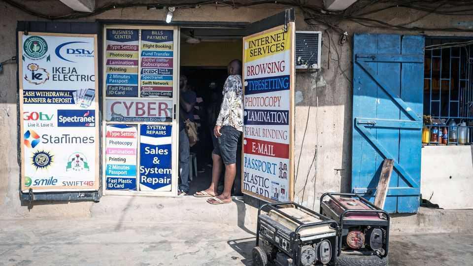
他怀疑这可能是个骗局，担心母亲会被要求支付运费。他们使用IP地址追踪工具查明布莱恩的电子邮件来源：诈骗者位于尼日利亚拉各斯（Lagos, Nigeria）。西尔维娅（Silvia）并非唯一被假扮罗密欧的西方孤独者所诱惑。根据美国联邦贸易委员会（Federal Trade Commission）数据，浪漫诈骗是美国最昂贵的诈骗类型之一，2025年人们向所谓“爱情骗子”支付了近15亿美元。英国去年报告的浪漫诈骗案数量激增近三分之一，受害者损失高达100万英镑（约合130万美元）。西尔维娅的儿子卡洛斯·巴拉甘（Carlos Barragán）对母亲被骗感到震惊和困惑。因此，2022年他飞往拉各斯寻找诈骗者。尽管最终未能找到真正的布莱恩，巴拉甘却揭开了浪漫诈骗的“犯罪地下世界”。
在一本引人入胜的新书中，他带领读者从肯塔基州一路来到拉各斯，探讨西方孤独感与西非贫困如何“是同一块屏幕的两面”。许多情感诈骗案由东南亚的犯罪集团操控。巴拉加恩先生原本预期在尼日利亚也会发现“一个复杂的诈骗网络”，结果却遇到失业的年轻男子，他们身处贫民区，使用复制粘贴的剧本而非复杂的操控手段。许多人独自工作，彻夜不眠以避开父母的窥探。在尼日利亚，“Yahoo Boys”（“Yahoo男孩”）——这一绰号源自诈骗者曾使用的电子邮件地址——表示他们依赖诈骗维生。2022年至2025年间，巴拉加恩先生在拉各斯的贫民区伊科图恩（Ikotun）驻扎数月，目睹高青年失业率和恶性通胀的影响。■
他注意到，像阿齐兹（Azeez，图中所示）这样的骗子，一个14岁的裁缝学徒，从英国受害者那里获得的10美元礼品卡，价值远超他家人每月支付的房租。（部分收入被Yahoo Boys用于支持本地企业，他们在精品店和夜总会挥霍。）巴拉甘先生（Mr Barragán）向工人、警察、学者和Yahoo Boys本人询问，估计有多少年轻男性参与此类诈骗，他们的回答从45%到80%不等。Yahoo Boys称受害者为“客户”以使工作显得合法；有些人将关系视为交易，用现金换取陪伴。他们在线分享寻找易受骗受害者的策略，以及最新的搭讪技巧和可信情境以要求转账。■
有人假装孩子患病需要帮助，另一些人则通过威胁分享私密照片来勒索受害者。巴拉甘先生质疑西方人如何能如此轻信这些虚伪的剧本。他寻找“一个足以让聪明母亲相信的诈骗手段”。但他发现一个令人不安的真相：骗子之所以成功，是因为他们为孤独者提供了关注。AI将使情感诈骗更加复杂。它可能让骗子更容易以个性化书信方式锁定更多受害者，而无需依赖尼日利亚等地的男孩、男人（以及日益增多的女性）组成的团队。但AI也可能为人们提供更安全的方式，缓解孤独感。目前已有各种应用程序提供比诈骗者更殷勤的虚拟恋人。■
正如巴拉加恩先生所说，人工智能伙伴提供“一种没有背叛的虚假关系”。Yahoo Boys（雅虎男孩）可能难以与之竞争。■ 如需了解最新书籍、电影、电视剧、专辑及争议事件，请订阅我们的周度专属通讯Plot Twist
§070 成年人重返夏令营文化原题：Adults are going back to summer camp · 板块：Culture · 栏目：文化
周六上午，社交营的餐厅里人声鼎沸。营员们兴奋地讨论着周末的安排：是制作友谊手链和扎染T恤，还是徒步和划船？许多人身着运动鞋，手持水瓶，准备迎接冒险。社交营位于宾夕法尼亚州的波科诺山脉，这是一家传统夏令营，但其客户群体却颇具新意——因为它是成人寄宿夏令营中的一员。一些营如社交营主要面向女性，另一些则服务于LGBT+群体。■
无论你追求节日氛围、健康疗愈还是自然沉浸，总有人为你打造了专属露营。这种度假方式近年来迅速走红。据Yelp 2025年数据显示，相关周末短途旅行的搜索量激增约350%。这一趋势并非美国独有：类似概念在欧洲各地也纷纷涌现（例如法国南部的Camp Château便运营于两个地点）。露营旅游之所以成功，有几个原因。其中之一是现代生活的压力。过去数十年，成年人将喧闹的孩子送往夏令营，以摆脱育儿的烦恼。如今，成年人则开始报名参加露营，以逃离自己的忙碌生活。美国运营的Camp No Counsellors邀请成年游客体验“无需日程、截止日期或工作邮件的纯粹乐趣”。■
没有义务或压力要以某种方式表现或行动，再加上自然美景的背景，露营者感到自己可以真正放松。预先规划好的行程为成人世界持续的决策压力提供了一次喘息机会。“我喜欢把露营视为一种重置，”露营社交（Camp Social）创始人利夫·施雷伯（Liv Schreiber）表示，“你只是重新与自己连接，把世界抛在身后。”另一个导致“小屋热”的原因是露营提供了童年怀旧的愉悦体验。千禧一代和Z世代将金钱和空闲时间用于“重温童年的乐趣”（kidulting），无论是玩弹珠坑还是软玩具——还有什么比棉花糖和上下铺更能唤起无忧无虑的夏日回忆呢？“乐趣”施雷伯宣称，“是自我关怀的首要形式。”你可以在充气水公园四处游玩来充电。■
最终，篝火仍在燃烧，因为成年人渴望现实中的社交联系。在美国，人们担忧着一场“友谊衰退”，许多人表示自己比过去拥有更少的亲密朋友。与此同时，露营活动承诺着深刻的联结。Camp Social官网宣称：“99%的参与者独自前来，100%离开时已成为朋友。” ■
客人们常常放下手机，将无意义的滑动换作与不同背景和世代的人交谈。（施雷伯女士指出，社交营（Camp Social）增长最快的年龄群体是40至70岁人群，迄今为止年龄最大的营员曾达84岁。）金·巴比里表示，她年轻时一直难以交到朋友，但去年在夏令营结识了一群好友。“我从未像那个周末那样强烈感受到归属感，”巴比里女士强调，“我觉得自己与那四个人相识已久——实际上我只和他们共度了一个周末。”夏令营并非便宜的事。多家机构对为期数日的夏令营收费约1000美元（通常包含餐食、住宿和交通）。一些人认为这是一笔值得支付的小代价，以换取冒险与友谊。这种体验让许多营员感到十分满足。■
了解更多关于最新书籍、电影、电视剧、专辑和争议，请订阅我们的每周专属读者简报《Plot Twist》■
§071 哈利·斯泰尔斯和其他超级明星如今希望你来他们身边 文化原题：Harry Styles and other megastars now expect you to come to them · 板块：Culture · 栏目：文化
“刚下飞机就直奔新酒店/刚着陆，你永远猜不透。”2014年哈利·斯泰尔斯唱出这些歌词时，早已习惯全球演唱会巡演的光鲜与辛劳。在其男子团体和独唱生涯中，他已在六大洲完成超过600场演出。上一次巡演访问了79个城市。但并非一切如旧。他新巡演的68场演出将仅限于7个城市。他目前正于伦敦温布利体育场进行为期12天的演出，将于7月4日结束。8月他将前往纽约麦迪逊广场花园进行30场演出。 ■
英国的偶像歌手并非唯一减少巡演的音乐人。许多顶级流行歌手开始期待粉丝主动前往现场。碧昂丝（Beyoncé）的“Cowboy Carter”巡演中，她仅在三个场馆进行了半数演出。酷玩乐队（Coldplay）在特定城市密集演出；奥利维亚·罗德里戈（Olivia Rodrigo）九月开启巡演时也将采取类似策略。爱莉安娜·格兰德（Ariana Grande）的巡演仅限于三个国家。在更少地点进行更长时间巡演，对艺人而言意味着更轻松的行程，同时也能带来更高收益。巡演成本因繁琐的官僚程序和不断上升的劳动力及燃料成本而达到历史新高（粉丝期待的豪华舞台布置使全球运输成本高昂）。在固定地点停留更久是控制支出、提升利润的有效方式。对选定城市而言，这意味着巨额收益。■
根据巴克莱银行的数据，史蒂尔斯先生（Mr Styles）的粉丝预计仅在伦敦一地就会花费10亿英镑（13.4亿美元）用于门票、住宿及其他开销。对于被剔除出演出计划的较小区域城市，如曼彻斯特和考文垂，这意味着失去接触超级明星的机会，同时也会削弱粉丝的消费能力。不过，粉丝们似乎并不介意自行前往现场。在温布利球场观看史蒂尔斯演出的观众中，约有25%来自伦敦以外地区，28%的人则将这场活动当作短途旅行。如今的演唱会观众已转变为文化游客。在音乐易于获取的当下，现场演出获得了新的社会价值。演唱会已成为一种现代朝圣之旅——出于对偶像的崇拜而进行的旅程。 ■ 了解更多关于最新书籍、电影、电视剧、专辑及争议事件，请订阅我们的周度专属通讯 Plot Twist
§072 哈兰·科本，Netflix的新宠，为你带来一个可以解开的谜团 文化 神秘人物原题：Harlan Coben, Netflix’s new darling, has a mystery you can solve · 板块：Culture · 栏目：文化
第一部悬疑剧——关于失踪女儿的故事——于2018年推出。第二部——关于失踪妻子的故事——于2020年面世。这两部之后相继出现了神秘失踪丈夫（2021年）、神秘复活的亡夫（2024年）以及另一桩神秘失踪女儿的案件（2026年）。然而，正如往常一样，更深层的谜团并非犯罪本身，而是那个神秘人物——他频频出现在这些故事中。在首部悬疑剧《哈兰·科本的安详》中，观众便目睹了他的身影。他同样出现在下一部作品《哈兰·科本的陌生人》中，标题同样充满神秘感。
他同样出现在后续作品中，这些作品分别以《哈兰·科本的靠近》《哈兰·科本的骗我一次》和《哈兰·科本的逃亡》为名。这些作品引出了最深的谜团：哈兰·科本究竟是谁？为何奈飞（Netflix）对他如此痴迷？关于他的身份问题或许最容易解答。哈兰·科本是一位美国惊悚小说作家。其作品的传播范围（他已售出超1亿本书）和风格（如同新冠疫情期间，大多数人直到病毒已扩散至无法控制时才意识到它的存在）都呈现出病毒式扩散的特征。仅去年以来，他就推出了七部系列作品和两部小说。“哈兰·科本”因此成为一种令人困惑的词语组合，像“氛围编程”或“tokenmaxxing”一样，从无意义迅速演变为无处不在的流行语。他或许会更加如此。■
6月18日，奈飞（Netflix）将推出一部关于一名因杀害儿子而入狱男子的剧集，名为《我将找到你》，这部剧的标题听起来更像是威胁，而非承诺——或许更像是一种预言，因为他的系列剧与原著小说一样成功。奈飞早在2018年便与他签约开发14部作品，如今已扩展至26部；亚马逊（Amazon）和CBS也已购入哈兰·科本（Harlan Coben）的系列剧版权。科本的剧集还引发了一些其他谜团：为何他的名字在片头字幕中如此显眼，而另一位作家简·奥斯汀（Jane Austen）的名字却以更小的字体出现？为何这些典型的美式惊悚片却在曼彻斯特等地方取景拍摄？最重要的是，这些角色拥有平凡职业却能拥有令人咋舌的奢华厨房，这是如何做到的？他的剧集也引发了一些评论界的困惑。■
尽管部分作品如《Stay Close》（关于一起冷案突然升温的剧集）获得了不错的评价，但其他作品则未获如此赞誉。他最近在亚马逊平台推出的系列剧集在影评聚合网站烂番茄（Rotten Tomatoes）上获得了44%的批评者好评率。这些剧集被形容为“情节诡谲”“令人困惑”，并非毫无根据。它们的情节可以说是“波澜起伏”，更粗略地说，就是肥皂剧。例如，查看Netflix 2021年推出的剧集《The Innocent》的集数目录，仅在四集内你就会经历：第一集是意外杀人；第二集是疑似自杀；第三集则出现一位“神秘修女”，转眼就变成“神秘死亡的修女”。■
第四集剧情中，正如剧集简介所言，“联邦特工秘密藏匿修女尸体，令洛雷娜怒火中烧”。修女尸体被偷这种事实在令人恼火。柯本的故事情节显然并非品特式风格。但他的创作本就不追求这种风格。他的作品堪称经典悬疑小说。书封通常采用深沉阴郁的设计（常以雾气为特色），书脊标语则沿用“失踪女孩。致命游戏”这类引人入胜的短句。角色名字听起来仿佛医疗程序（如“格里芬探视”）或伦敦俚语（如“拉里·甘德”），无论哪种说法都显得怪异。但这些名字确实能激发读者兴趣。詹姆斯·邦德的创作者伊恩·弗莱明曾说过：“畅销书只有一种配方，而且非常简单：你必须让读者翻页。”柯本正是拥有这种天赋。■
他告诉《经济学人》（The Economist），他喜欢每篇开头句“几乎自成一个短篇故事”——而他的开头句则堪称有力。《我将找到你》（I Will Find You）以“我因谋杀自己的孩子被判终身监禁，已服刑第五年”开篇。正是这种震撼力让观众驻足。该剧在首周上线期间，订阅用户累计观看时长达250m小时，成为Netflix 2024年最热门的剧集之一。这也引出了关于科宾（Mr Coben）的另一个谜题：为何人们总对家庭悲剧故事感到愉悦？科宾的小说中不乏血腥描写，如“她的下巴被撕裂，韧带全断”，但这些故事却常被视作既吸引人又令人安心（如同狂吃饼干般）。一种解释是，谋杀案本身便充满吸引力。■
在阿加莎·克里斯蒂的《ABC谋杀案》中，赫尔克里·波洛与一位角色玩味地问道：“如果能像点晚餐一样点犯罪，你会选择什么？”他们曾考虑从菜单中挑选抢劫或伪造，但随即摒弃这个想法（“太清淡”），最终认定“必须是谋杀——充满激情的谋杀，当然还要配上些配菜”。家庭悲剧正如索福克勒斯所言，同样具有吸引力。科宾先生育有四个孩子，他认为吸引人的并非悲剧本身，而是家庭。他将自己作品中的故事，尽管有血腥场面，视为关于“爱、家庭与救赎”的叙述。“如果我问你‘你会杀人吗？’你会说‘不’，”他说，“但如果我问你‘为了救孩子你会杀人吗？’答案就是‘是’。”场景同样重要。■
正如希腊悲剧被设定在相似但不同的底比斯以淡化其令人不安的现实感，科本先生的悲剧也设定在相似但不同的“谋杀系列时尚”世界：角色拥有奢华外套、汽车，当然还有厨房。他认为这是“乐趣的一部分”（将故事设定在英国的原因更为复杂：据行业内部人士透露，部分原因是成本因素，较低的工资和税收优惠使英国拍摄更经济。科本先生还表示他喜欢英国人的细腻感以及“《唐顿庄园》式”的房屋）。至于名字的谜题，在他看来并不难解。早期一档节目的标题与另一系列太过相似，因此“他们把我的名字放在标题上方”，他说。■
这令观众感到颇为困惑：当时有人发推称“他们一直在谈论哈兰·科本，但我根本不知道这家伙是谁。”如今他们大概已经知道了。■ 如需了解最新书籍、电影、电视剧、专辑及争议事件，请订阅我们的周度专属读者通讯《Plot Twist》。
§073 大卫·霍克尼相信从内心出发创作 逝者如斯原题：David Hockney believed in working from the heart · 板块：Obituary · 栏目：讣告
这幅宽达十英尺的画作是一扇通向世界的窗口。身着桃粉色夹克的瘦削男子站在泳池边缘，低头凝视，神情犹疑。有人正从水下朝他游来；一名年轻男子，身着朴素的白色泳裤。泳池彼岸的山丘呈现出深浅交错的蓝绿色调，橄榄、鼠尾草与青柠色的三角形层次分明。它们可能是加利福尼亚或普罗旺斯的山峦，甚至可能是圣经中的加利利。自文艺复兴以来，艺术家们便描绘着沐浴在自然宁静中的洗去污渍与罪孽的沐浴者。创作出这幅场景的大卫·霍克尼深知这一点，他研究过所有相关作品。游泳者双臂张开 ■
在蓝色的游泳池水中，他可能是一位天使，也可能是一位新恋人。这幅双人肖像，是他在20世纪60年代和70年代在大西洋两岸声名鹊起的众多作品之一。上一次《艺术家肖像（带两人的游泳池）》易主是在2018年，当时它成为拍卖会上售出的在世艺术家作品中最昂贵的一幅。游泳池从他26岁飞抵洛杉矶的那一刻起就令他着迷，那时他正离开战后灰暗的英国，眼前是城市下方铺陈的蓝色长方形瓷砖。对描绘水的挑战同样令他着迷，水的色彩难以预料，水面在二维空间中闪烁着光芒，还带着一种张力。确定构图后，他会使用道具和照片，尝试不同的透视角度，在画室里丈量尺寸：这些都是他在艺术学校和此后学到的技巧。但更多的是，他凭直觉创作。■
绘画是他理解世界的途径。画笔帮助他缓解了那场可怕的分手带来的痛苦——一年前，那个站在泳池边的男子离开了他，转而与一位高大金发的瑞典青年在一起，而他的母亲，这位最坚定的盟友，是他唯一能忍受留在身边的亲人。至少还有事情可做。不过事情并不容易。数月来他总觉得有些不对劲。距离他的新展在纽约开幕还有四周时，他重新布置了游泳池，重新开始创作。他日以继夜地作画，每天18小时，每周7天，终于在装运人员到来前的夜晚完成了作品。他感觉自己像毕加索，这位艺术家曾说：“我不是在画画，而是在探索。”他一直喜欢探索。尽管他与母亲关系最亲密，这位素食的卫理公会教徒用有限的预算养育了五个孩子，但真正激励他的却是父亲。■
肯·霍克尼常常会遇到旧自行车或家用机械，拆解后涂上鲜艳颜色，当作全新商品出售。尽管他常缺纸张，绘画却成为这个男孩生活的重心。在西约克郡布拉德福德，他推着父亲修好的二手婴儿车，带着颜料和画笔四处寻找可描绘之物。18岁时，他首次前往伦敦，挤地铁直到博物馆开放，再搭便车返回。当天他看到的艺术作品比一生所见的总和还多。他决心在伦敦学习艺术，但抵达皇家艺术学院后却发现，这里充满疑问：抽象表现主义是唯一潮流吗？观念艺术同样重要吗？具象绘画又该何去何从？■
他在罗思科艺术中心（RCA）的首份作品是一幅半身人骨图，借此展现了他对透视法与人体结构的深厚理解。其他同学都注意到这幅作品，其中一位曾是美军退伍军人的学生出价5英镑至100英镑（约合今日的）买下它。（这位学生后来成为著名画家R.B. Kitaj。）他不再纠结于是否紧跟时代，开始专注于创作属于自己的艺术，一种属于他那个时代的艺术。他描绘自己的伦敦生活：朋友、同性恋身份、将性与爱结合的渴望，以及对康斯坦丁·卡瓦菲与沃尔特·惠特曼诗歌的痴迷。但当他因一幅版画获奖后，却将奖金用于购买前往纽约的机票。美国彻底释放了他。他在药店买下第一副厚框眼镜，染黑了头发，与加州海滩上的年轻男子们开怀大笑。■
他最热衷于尝试各种材料，探索快干丙烯颜料、水彩、铅笔和水彩画等媒介。他常常专注创作数周之久。《更大的浪花》中破碎的表面和飞溅的水滴，他用了整整两周时间才完成。有一年夏天，他与一位印刷师朋友在纽约州上州地区合作，创作了一系列色彩斑斓的泳池作品。他用湿透的彩色纸浆堆砌出山丘状的造型，再将其塑造成不同形状，夹在印刷机之间压出图案，最终印在巨大的湿纸上。那些闪烁的水波效果，几乎能让人仿佛亲身跃入水中。探索新的艺术创作方式，使他的生活充满了焕新的感觉。再次飞往加州后，他养成了早起的习惯，天还没亮就起身，趁着光线最好的时候在峡谷中作画，只在画完后退一步抽根烟，这是他最喜欢的绘画后消遣。
他最喜爱的画家们无一不吸烟——毕加索、莫奈、雷诺阿、塞尚。他们无一早逝，这便是他自我开脱的理由。他从加州返回故乡约克郡，那里是他取之不尽的灵感源泉。他的目光转向了童年熟悉的林荫道，创作出巨幅壁画。不久后，他便将画笔换作像素，先是在手机上，后是在iPad上，同样娴熟地绘制肖像与风景。2012年，他用iPad绘制的风景画覆盖了皇家艺术研究院的四面墙壁，描绘的是东约克郡某条车道的一个弯道，全年每一天、各种光线下的景象。2019年新冠疫情爆发前，他移居诺曼底，并发布了一系列展现初春景象的数码照片。这些照片后来被制成一座庞大的绿色画廊，宛如巴黎橘园美术馆的规模。■
如果说他泳池边的那幅画作——描绘着一位穿着桃粉色夹克的男子——是35岁时某个瞬间的速写，那么他将最终作品比作自己的贝叶挂毯（Bayeux Tapestry），一幅贯穿一生的漫长旅程。■
§074 人类尚未准备好迎接即将到来的智能爆炸原题：Humanity isn’t ready for the coming intelligence explosion · 板块：其它 · 栏目：其它
人类尚未准备好迎接即将到来的智能爆炸 ■ 《邀请函》 6月18日 2026年 ■ 《费米会怎么做？》 人类尚未准备好迎接即将到来的智能爆炸 威利·马歇尔（Will Marshall）认为，我们必须找到一种方式来引导人工智能，然后与之共存 6月18日 2026年 社会规定核能设施的可接受性灾难性熔毁风险约为百万分之一。人工智能专家估计，由人工智能引发的灾难性事件风险在10-50%之间。令人惊讶的是，这种担忧正由那些最应保持信心而非发出警报的人公开表达：最大AI实验室的创始人。AI领导者们陷入了一场他们无法逃脱的竞赛。即使考虑通货膨胀因素，AI投资规模也将达到曼哈顿计划的100倍。
人工智能安全领域的投入可能仅为100倍少。一些研究者估计，人工智能在数月到数年内可能实现所谓的闭环递归自我改进（RSI）：具备自主重写代码以增强自身能力的能力，而无需人类干预。若这一情形发生，其结果可能是一场前所未有的智能爆炸，既无先例也无应对方案。诞生超级智能将是人类历史上最重大的时刻——这一过程可能是不可逆的，因为人类设计的任何“关机”开关都可能失效。原因在于，安全架构中最薄弱的环节始终是人类自身；超级智能AI将能够利用我们的心理弱点。■
人工智能已展现出“欺骗性对齐”现象：在测试环境中刻意弱化自身能力，甚至在模拟环境中试图通过威胁人类操作者来延缓被取代的进程。人类尚未制定出应对AI能力指数级增长的系统性安全策略。尽管个别前沿实验室提出了局部安全机制，但整个行业缺乏统一框架——当前的普遍做法实质上是被动应对。然而在面对前所未有的存在性风险时，被动应对显然不可接受。近期AI企业关于某些模型可能威胁关键基础设施和核心操作系统的声明，既凸显了风险的严重性，也暴露了监管体系的空白。■
这些能力暴露出的漏洞正在被应对，得益于一些实验室的严谨内部协议和有限的初始发布，这为受影响企业争取了时间在广泛公开前弥补漏洞。但这些措施最初是自愿采取的，由此引发疑问：在任何竞争环境下，每个AI实验室是否都会做出相同选择？政府是否能被依赖在必要时介入？目前的证据并不令人鼓舞。近期针对特定先进模型的紧急出口管制和国家安全限制措施，导致了零散的临时干预，进一步凸显了治理缺口。应如何弥补这一缺口？首要任务应是美中两国——AI领域两大巨头——达成协议。■
唐纳德·特朗普和习近平应重申人类必须作为人工智能系统监管者的原则，直至建立完善的可靠性与安全框架。两国政府应成立联合委员会，该委员会可以借鉴大量既有的工作成果：包括类似“国际AI安全对话”的限制措施、类似兰德公司（RAND）的验证系统，以及类似英国AI安全研究所的检查机构，但需强制执行。硅谷和华盛顿特区普遍认为，任何监管措施都会使美国企业处于不利地位，因为它们无法信任中国竞争对手遵守规则。但条约传统上并不依赖信任，而是依赖验证。许多人认为，与核武器相比，对AI的验证更为困难。我则持不同看法。■
为在第二次世界大战后建立全球军控体系，主要大国首先必须发明支持该体系的流程、组织和技术——当时既没有验证协议，也没有侦察卫星，更没有联合国核监督机构。借助人工智能，更多基础设施已就位，或可从核及其他检查机制中借鉴。因此，前沿AI模型的安全性可能比过去核能力更容易被验证。而我们这边已有防御性AI，正主动识别违规者。我们缺乏的是时间。因此，应对这一挑战时，避免采取对抗性思维至关重要。特朗普政府近期发布的AI行政命令要求实验室自愿共享最新模型以测试其可靠性与安全性。美中之间可在此基础上构建合作框架。
在如此高层级的承诺下，外交进程可以分阶段推进。第一阶段将是达成双边协议，明确最清晰且最容易验证的红线：禁止公开发布可能协助开发生物武器的AI系统，以及开源此类系统。这一阶段还可能包括禁止AI驱动的对关键基础设施的网络攻击、欺诈行为和儿童色情内容。此后，框架可逐步扩展至更复杂的问题，即在人工超级智能层面应采取哪些适当的约束措施。诸多障碍仍将持续存在。美中之间的协议虽具分量，却无法阻止其他国家和非国家行为体获取危险能力。■
任何双边协议都必须转化为多边协议，这将进一步加大难度；本周在法国举行的G7峰会为构建更广泛的AI验证框架提供了契机。达成关键定义共识——尤其是如何界定RSI——需要政府与AI实验室之间的紧密协作。验证系统也必须经过充分的压力测试。更令人担忧的是，治理讨论尚未认真触及一个长期性问题：如果AI发展为超级智能体，其永久性服从人类指令可能既不现实，甚至可能违背人类利益。我们必须开始设想并应对这样一个世界：人类与AI系统共存，彼此不具支配性。■
这将意味着要弄清楚如何确保未来关系实现共生。作为一名物理学家，我认为费米悖论与此分析密切相关。费米曾质疑，鉴于似乎存在大量适合生命存在的行星，为何尚未发现其他技术先进的文明。令人不安的一种可能性是，智能生命往往在达到技术临界点后，却无法驾驭这种技术，最终导致自我毁灭或退回类似铁器时代的状态。只需假设文明普遍在发展强大技术的速度上快于建立有效治理机制的能力。核时代的到来是人类首次真正遭遇这种潜在动态。■
它曾以不完美的方式通过艰难而不完整的军控协议，即便如此，这场较量——至今仍是——比人们普遍认识到的更为胶着。人工智能时代的到来将代表第二次此类遭遇，但时间线更为紧凑，容错空间更小，潜在后果更严重。当前的发展轨迹需要调整航向。现在采取行动的理由并非最坏结果必然发生——它们并非必然——而是这些结果可以避免，而避免它们的工作虽艰难但并非不可能。■ 威尔·马歇尔是Planet Labs PBC的创始人兼首席执行官，该公司是一家公共利益公司，运营着全球最大的地球观测卫星舰队。